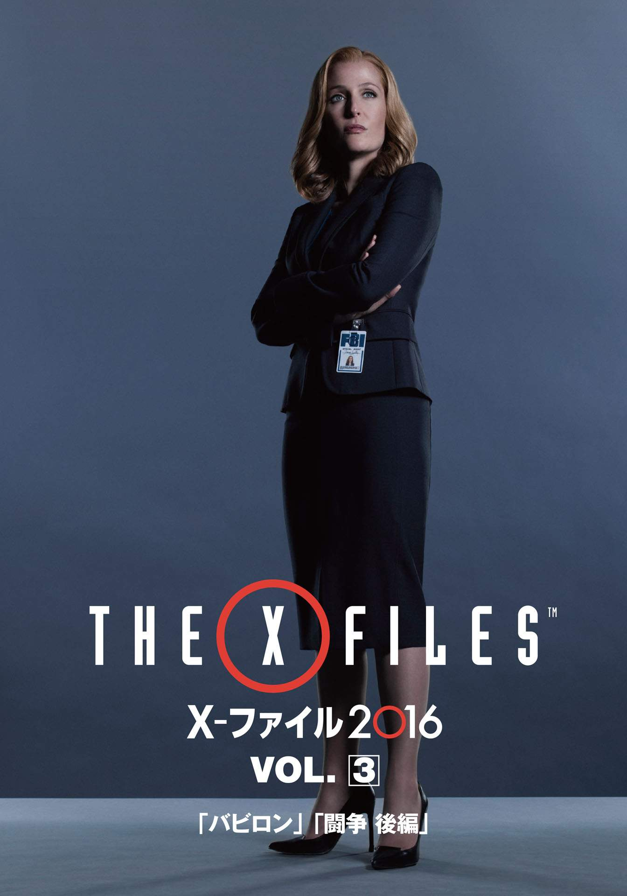
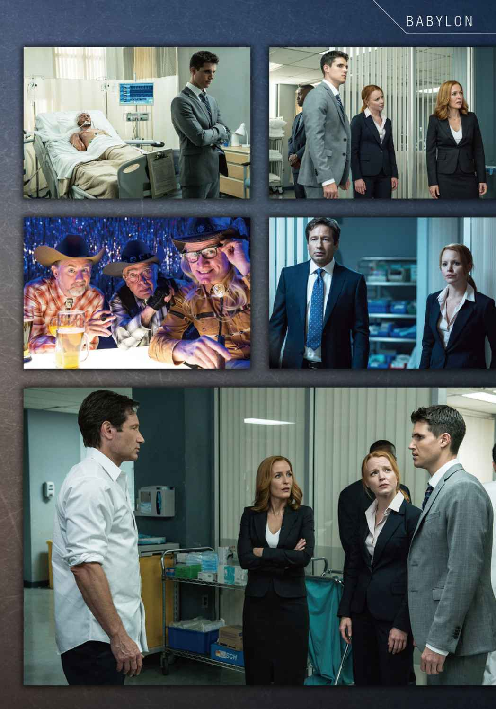
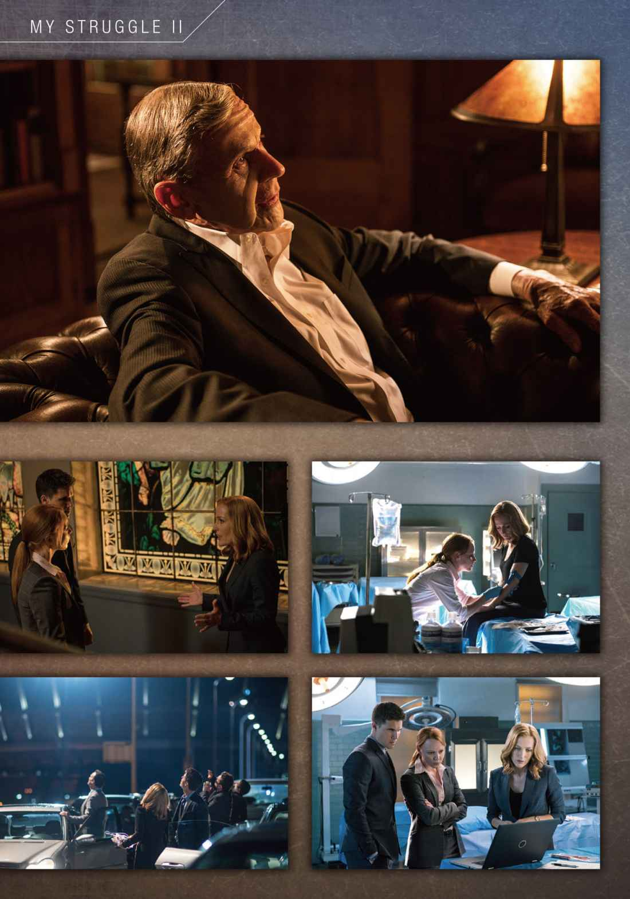
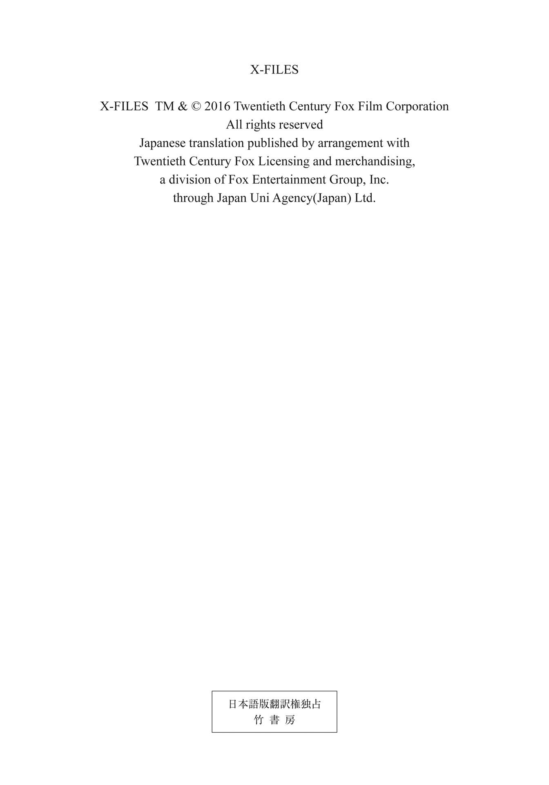
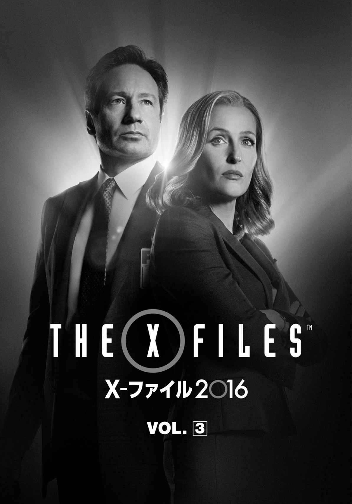
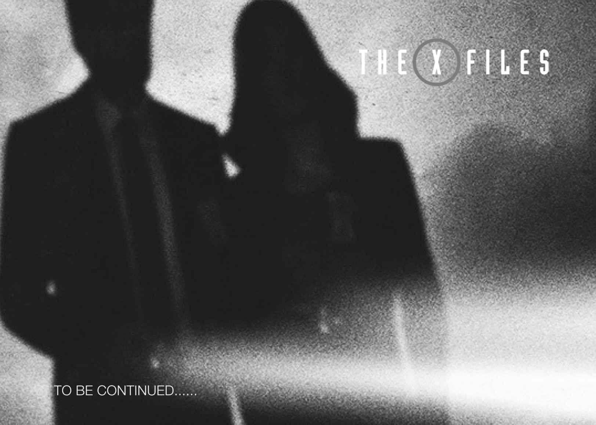

| X-ファイル 2016 VOL.3 (竹書房文庫) | |
| クリス・カーター | |
| (2016) | |
この作品は縦書きでレイアウトされています。
また、ご覧になる機種により、表示の差異が認められることがあります。
一部の漢字が簡略字で表示されていることがあります。




登場人物紹介
フォックス・モルダー .........FBI捜査官。超常現象事件などを担当するX-ファイル課所属。
ダナ・スカリー .........FBI捜査官。超常現象事件などを担当するX-ファイル課所属。
ウォルター・スキナー .........FBI副長官。
ミラー .........FBI捜査官。事件解決のためなら突飛な手段も辞さない柔軟な思考の持ち主。ややオカルトマニアの気あり。
アインシュタイン .........FBI捜査官。医師免許を持ち、超常現象は軽蔑してかかるタイプ。相対性理論のアインシュタインは遠い親戚。
ブレム .........FBI捜査官。
シラーズ .........イスラム系の若いテロリスト
ヌーラ .........シラーズの母親
テッド・オマリー .........動画ニュースサイトを運営し自らキャスターを務める保守派の陰謀論者
シガレット・スモーキングマン .........闇のシンジケートの一員。モルダーの永遠の敵。ヘビースモーカー。
モニカ・レイエス .........元FBI捜査官。かつてスカリーの後任として、ジョン・ドゲットと共にX-ファイル課を担当していた。
ウィリアム .........モルダーとスカリーの息子。現在15歳。赤ん坊の頃に養子に出され、現在の居場所は不明。

１
テキサス南西部
アパートの一室で、若者が朝の祈り を捧 げていた。椅子、テーブル、電気スタンド──小 綺 麗 だが殺風景な部屋は、必要最低限の家具しか置かれていない。黄色い壁にはポスターを剝 がした痕があるが、きっと以前に住んでいた人間のものだろう。テーブルの上には食器もスナックの空き袋も、何も載っていない。雑誌類やＤＶＤ、ゲームといった若者らしいもの、装飾品の類 いも、何ひとつ見当たらなかった。
若いムスリム（イスラム教徒）の名は、シラーズといった。ボーダーラインのＴシャツにＧパンと、一九歳の若者らしいごく普通の服装で、とりたてて目立つところはなかったが、ここテキサスでは、短い顎 鬚 とアラブ系の顔立ちが、ひと目を引くかもしれない。
礼拝 用絨 毯 の前に立ったシラーズは、アラビア語で祈りを唱えた。
《神は偉大なり 》
耳のところまで差し上げていた両手を下ろし、膝に置いて上体を九〇度曲げる。
《神はたたえる者の声を聞かれる》
ひざまずき、床に頭をつけ平伏叩頭した。
《神は偉大なり》
再び繰り返し、上体を起こすと、右を向いて祈った。
《平安とアッラーのお恵みがあらんことを》
左を向き、同じ文句を唱えた。両手の平を胸の辺りで天に向け、口の中で祈願を捧げてから、絨毯を素早く丸める。
キッチンに行くと、多少生活臭のするアイテムがあった。冷蔵庫の扉に、親友らしい若者と肩を組んだシラーズの写真がマグネットで留めてある。壁にはアラビア語をあしらった額縁がかかり、黒いやぎ髭を蓄えたイスラム教指導者 の写真が貼ってあった。
シラーズは冷蔵庫からピーナッツとジャムを取り出すと、カウンターでサンドウィッチを作りはじめた。
《神の御名によって》
神に感謝を捧げてから、立ったまま、牛乳で流し込む。その顔は無心だ。
左右にのどかな草原が続く道を、シラーズが運転している。カーステレオでは最近のお気に入り、オーディオ・アンドロイドの『アーバン・イスラム』がかかっていた。信号待ちをしていると、テンガロンハットのカウガールがふたり、横断歩道を渡りはじめる。金髪の子はジーンズの上下、背の高い子はミニスカートのへそ出しルックで、ふたりとも、もちろん足もとはカウボーイブーツでキメていた。シラーズがぎこちなく微笑むと、ふたりはうさんくさそうな一 瞥 をくれて、通り過ぎた。へこむ間もあらばこそ、エンジンをふかす騒々しい音がした。右車線を見ると、ピックアップトラックの運転席から、二の腕を出したテンガロンハットの男がにやにや笑いを浮かべ、こちらを見ている。同時に、カーステレオのダブステップ・サウンドが、大音 声 のカントリーソングにかき消された。労働者風の男は片手でビール缶を振り、シラーズに挨拶をした。女の子がふたり、助手席からひょこっと顔を出した。
「あーら、観光客かしら」
「ブラウニー色だわ」
「俺たち、間違った国にいるのかな？」
そんな会話が聞こえよがしに交わされたため、シラーズは黙って窓を閉めて前方を向いた。どぎまぎしたが、信号が変わると水色のトラックは騒々しい音を立てながら行ってしまった。ワンテンポ遅れて、シラーズも車を出した。
シラーズの車が、モーテルの駐車場で止まる。ドアの連なる平屋の建物の前で、アラブ系の若者が立っていた。写真の中でシラーズと肩を組んでいた男だ。
シラーズは車から降りると笑顔で若者に近づき、がっちり握手をした。
《君に平和が訪れんことを》
若者も笑顔で応え、シラーズの両頰にキスをした。
《君にも平和が訪れんことを》
そのまま肩を抱いて、アラビア語で親しげに話しかけながら、モーテルに入って行く。
友人を乗せたシラーズの車が、倉庫街を改装したおしゃれな商業スペースにやって来た。正面がガラス張りのアートギャラリーから、少し離れた場所に二重駐車をする。「ジッグラト展」の開催初日とあり、ギャラリーには早くもドレスアップした客が集まっていた。シラーズと友人は車の中で手を取り合い、目を閉じて、共に祈りを唱えた──。
《神よ、我らの胸を開き、重荷を下ろさせ、私の言葉から枷 をはずしたまえ》
祈りがすむとふたりは車を降り、いかにも親しげに肩を組みながら、ギャラリーへ吸い込まれた。そのすぐあとからギャラリーの前に車が一台乗りつけ、バレット係がすかさず近寄った。降りてきた男にチケットを渡して、運転席に乗り込む。助手席から降りた女性が男と落ちあうと、手を取ってギャラリーに向かった。
その途端、建物が大音響とともに爆発した。ギャラリーからこの世の終わりのような黒煙が大量に吹き出し、カップルを飲み込む──。
数秒後、煙が風に飛ばされると、地面には砕けたガラスや建物の破片が散乱し、倒れて動かない者や、這 いずって建物から遠ざかろうとする者、あるいは駆けよる者の姿が見えた。正面に停めてあった車は見事にひしゃげていた。ギャラリーの中は火の海と化し、火だるまになった人々がよろめき出てきた。
シラーズと友人の安否は、不明だった。
２
Ｘ─ファイル課／ＦＢＩ本部地下室／ワシントンＤ．Ｃ．
Ｘ─ファイル課のオフィスに行くには、二三年前と同様、ＦＢＩ本部Ｊ・エドガー・フーヴァー・ビルのエレベーターに乗って地下に降り、「フォックス・モルダー特別捜査官」と札の出ている部屋を訪ねればよい。
オフィスでは、腕組みをしたスカリー特別捜査官が、フラットスクリーンのテレビモニターの前で映像を観ていた。カメラはどこかの高層ビル群を下から捉え、空を見上げる女性の頭部が画面下部に映っていた。だが、このビデオの注目すべき点は映像ではなく、音にあった。金属的で不安をかきたてるものの、決して不快とはいえない奇妙に音楽的な音が、あたり一帯に響き渡っている。
「この音はなんなの、モルダー？」
いつもの懐疑的な笑みを浮かべ、スカリーはデスクに座るモルダーを見た。
「目撃証言によると──」
デスクから立ち上がったモルダーが、狭いオフィスをそぞろ歩いてスカリーの後ろに立った。
「いや〝耳 撃証言〟かな、正確には──トランペットの音に似ていたそうだ」
フラットスクリーンの映像は、動画検索サイトのクリップをモルダーのラップトップ・パソコンから転送したものだった。
「どこからともなく？」
「どこからともなく」
やけにはずんだ声で、モルダーが言う。ポケットから袖をまくり上げた片手を出して、モルダーにしか意味のわからないジェスチャーを交えて話す。
「まるで、神自ら作曲して、自ら楽器を奏でたみたいだ。天上から音楽が降ってきたのさ」
スカリーが後ろを振り返った。
「いつから神様を信じるようになったの、モルダー？」
「なんでそう思うんだ？」
腕を組んだまま、スカリーが肩をすくめる。
「〝神自ら〟？」
スカリーの後ろでは、テレビ画面のなかで畏 怖 の表情を浮かべた女性が、青空をぐるりと見回している。
「僕は捜査官として話しているに過ぎないよ。各地から報告が来ている。ベラルーシ、カナダ、フランス、イタリア、ドイツ、ウクライナ......」
「でも捜査官として、あなたはこの現象にお墨付きを与えているように聞こえるわ」
モニターの中の映像では、カメラが路上に上下移動 して、上を見上げてどこかを指さしたり、諸手を挙げたりしている人々を映していた。
「僕が何を信じてるかは重要じゃない」
スカリーが「おやまあ」という顔をする。
「重要なのは、彼らが信じていることだよ。〝耳撃証言〟たちがね」
モルダーはこの新語を定着させたくて、強調した。スカリーがわざとらしく目をパチパチさせる。
「それで、彼らは何を信じてるの？」
モルダーは聖書を引用した。上の方を向いて、たどたどしく暗唱する。
「『そして七人の天使が神の前に立ち、七つのトランペットを与えられた』──ヨハネの黙示録第八章第二節。終末の先触れだ」
敬 虔 なカトリック教徒のスカリーは、もちろんその一節をよく知っている。
「だけどその手の預言は何世紀も前からあるのよ。空振りに終わった最後の審判の予知。預言のはずれは、聖書の中にさえあるわ」
スカリーが預言の不確実性を持ち出すと、無神論者のモルダーはますます声を弾ませた。
「そうそう。神はアダムに、もし禁断のフルーツを食べたら死ぬと言われたが、アダムは九三〇年生きた。大はずし だよ」
「額面通りに起きたわけじゃないって知ってるでしょ？」
しかも厳密に言えば、間違った解釈だった。神はアダムにりんごを食べたら即死すると言ったわけではない。
モルダーはポケットに手を突っ込んだまま、肩をすくめた。
「さあね。君の神様 にまつわる本だ」
モルダーがどこかから見つけて来た超常現象をスカリーに教えては、その真偽についてふたりでああだこうだ議論する──二三年前と同じく、Ｘ─ファイル課の暇の潰し方は、それが習わしだ。しばしばそれがきっかけで、調査に発展することもある。
不意に、トランペットならぬドアをノックする音が、三回聞こえた。
「すみません、どなたかいらっしゃいますか？」
男の声だ。モルダーが返事をしようと口を開くが、スカリーが一瞬早く、ドアに向かって声をかけた。
「ここにはＦＢＩの鼻つまみ者しかいないわよ」
モルダーが何それ、という顔でパートナーを見る。
「二三年間これを言うのを待ってたの」
古い記憶が蘇 った。スカリーがはじめてこのオフィスを訪れたとき、モルダーが彼女に言った言葉だった。そんなに強い印象を与えていたとは、知らなかった。
「感想は？」
モルダーが聞くと、スカリーは口をへの字にして満足そうな顔をした。
「最高！」
「へえ」
モルダーは声の主に向かって、最初に言いかけた返事をする。
「開いてるよ。入ってくれ」
ドアが開いて、若い男女の捜査官が入ってきた。どちらも見覚えはない。
「フォックス・モルダー特別捜査官？」
意気込んで差し出された男性捜査官の手を握って、モルダーが聞く。
「そうだよ。それで僕は誰と話してるのかな？」
「私はミラー特別捜査官です。こちらはアインシュタイン特別捜査官」
反射的に作り笑いを浮かべた女性捜査官と、モルダーが握手する。
「アインシュタイン特別捜査官ですって？」
スカリーがぶしつけなほどの素 っ頓 狂 な声を上げた。
「アルバート・アインシュタイン博士とは、遠い親戚です。お聞きになりたいのがそれであれば」
スカリーの食いつきにいささか驚いたふうだったが、先輩捜査官に敬意を表し、アインシュタインが如才なく説明する。小柄で、赤毛をポニーテールにまとめたアインシュタイン捜査官は、相棒のミラー捜査官の視線を追ってテレビ画面を見ると、顔をしかめた。人々が何もない空を見上げて、スマートフォンをかざしている。
いつもとは逆に、モルダーが相棒の振る舞いを詫 びた。
「スカリー捜査官の無礼を許してやってくれ。アインシュタインの〝双子のパラドックス〟をテーマに、卒業論文を書いたもんだから」
二三年前、スカリーがＸ─ファイル課に配属されたとき、モルダーはその論文を読んで斬新な解釈を気に入った。スカリーは決まり悪そうに後ろ手にしている。
「失礼、でもあなたは医学博士だとうかがっているんですが」
アインシュタインが貼りついた笑顔のまま、相棒のミラーを見た。どうやら彼からの情報らしい。
スカリーが控え目に言う。
「そうよ。でも科学者でもあるの」
アインシュタインが得意げに打ち明ける。
「私も医学博士なんです」
「あら」
赤毛で医学博士の捜査官から目を離し、スカリーは長身で青い目のミラー捜査官に矛先を向けた。
「それじゃあ、こちらは超常現象に取り憑 かれたプロファイラー？」
ミラーはスカリーの冗談にとまどうどころか、待ってましたとばかりに切り出した。
「実際、そのためにここに来たんです」
「本当は空港に行かなきゃいけないんですが」
アインシュタインが気短そうに口を挟んだ。モルダーとスカリーは顔を見合わせた。
ミラーが構わず続ける。
「おふたりとも、テキサス州のアートギャラリーがテロリストによって爆破された事件は聞いていらっしゃいますね」
「ああ。ふたりの若いムスリムが、予言者ムハンマドの風刺画に抗議したんだったかな」
モルダーが答え、スカリーがつけ加えた。
「ふたりとも、自爆用ベストを身につけていた」
数ヵ月前、やはりムハンマドの風刺画を掲載したフランスの週刊誌『シャルリーエブド』のパリ本社が、イスラム過激派に襲撃され、一七名の犠牲者を出した。イスラム教では、預言者の肖像を描くのはタブーなのだ。その事件の余 韻 が冷めやらぬなか、今度はアメリカのテキサス州で同様の事件が起きた。事件はいやがうえにも世間の注目を集めていた。
「さっさと用件に入らない？」
悠長なやりとりにしびれを切らしたアインシュタインが、目をギョロつかせ、歯を剝 き出す特徴的な表情で、相棒をせっついた。
「自爆テロにより九名が死亡しましたが、爆破犯のひとりが生き延びまして」
ミラーが入室したときから手にしていたタブレットを、モルダーに手渡した。画面には、病院のベッドに横たわるアラブ系の若者の上半身が映っていた。モルダーたちは知るよしもないが、それは変わり果てた姿のシラーズだった。顔は縫い跡だらけで、右目は腫 れ上がったまぶたにふさがれている。右側の頭部は、著 しく陥没していた。口に気管内チューブを挿管され、胸には電極が貼りつけてある。
「定義上はね」
アインシュタインが補足する。モルダーはスカリーにもタブレットを見せた。
「医学的には、植物状態です。心臓が鼓動している以外、死んでいます」
「我々が訪ねてきた理由がおわかりでしょう」
ミラーがそう言うが早いか、モルダーが以心伝心の要領で、すかさず応じる。
「いわゆる霊能者と呼ばれる人たちが......」
スカリーが割って入った。
「ごめんなさい。悪いけど......なぜあなた方が訪ねられたのか、さっぱりよ」
「私もです」
アインシュタインが共犯めかしてスカリーのほうへ身を乗り出した。スカリーは若い捜査官コンビのちぐはぐさを面白がって、口をへの字にした。
「ミラー捜査官は明らかに自由な発想の持ち主で、死者と交信できる可能性を信じているのさ。この場合は、瀕 死 の者とだけど」
モルダーに擁 護 され、ミラーが照れくさそうにする。アインシュタインは顔を伏せて、笑いを嚙 み殺すだけの分別を見せた。明らかに、このふたりがコンビを組んでから、まだそれほど経ってはいないようだ。
ミラーがさきほどよりも自信を深めた態度で、モルダーに話す。
「さらなるテロを計画している大規模なスリーパー（注：市民に紛れて潜伏中のテロリスト。） の内部情報を、彼が持っているかもしれません」
アインシュタインがミラーを横目で見上げ、訴えた。
「だからそっちにエネルギーを注ぐべきなのよ。死んでるテロリストと話そうとしてもたついてないで、生きてるテロリストを捕まえる」
目を見開き、歯を剝き出すようにして喋 るのが、アインシュタインの癖のようだ。せっかくの容姿が台無しだが、表情豊かなところは、遠縁の世界的に有名な博士を彷 彿 させなくもない。
「同意見だわ」
赤毛同盟のスカリーが言うと、「ですよねぇ、普通」という目でスカリーを見る。
まっとうな意見は耳に入らないという特技を持っているモルダーが、ミラーとの会話を進めた。
「信頼するに足る能力を備えた占い師、予言者、行者、降霊術者は過去から存在し......」
「マダム・ブラヴァツキー、神智学の創始者ですね」
引き取ったミラーに、モルダーが頷 く。
「アメリカに、いわゆるチベットの導師から得た古代の智 慧 を持ちこんだ人だ」
スカリーがふたりに割って入った。
「Ｘ─ファイル課に長くいすぎたのかしら、マダム・ブラヴァツキーはもう死んでるって、なぜか知ってるのよね」
「ほお」と、アインシュタインが目を剝いた。有益な情報だ。
「そうなると、彼女の広範な能力を拝借するのが、より難しくなるな」と、モルダー。まず彼女と交信できるイタコを探すことからはじめないといけない。
「ええ、私もそう思います」
そう言うと、結論が出たと判断したアインシュタインは相棒の背中をぽん、と叩いて退出しようとする。
「ミラー、行きましょ」
ミラーは食い下がり、モルダーとスカリーに質問した。
「相談できそうな現役の霊能者をご存知ありませんか？」
「時間の無駄になりそうな人物しか知らないな」
まったくだ。戸口に立つアインシュタインが腕時計を見た。
「ミラー、行くわよ。テキサス行きの一三時半の便があるから、それに乗りたいの」
現在の時刻は一一時半前だ。二時間あれば、ナショナル空港に行って飛行機を摑 まえられる。
「お手間を取らせました。何かありましたら電話をください」
ミラーがポケットから名刺を一枚取り出し、差し出した。モルダーが受け取って、しげしげと見る。スカリーは笑顔を作り、ふたりを見送った。アインシュタインが軽く手を挙げ、ふたりは退出した。
モルダーが名刺から顔を上げて言った。
「聡 明 そうな若者だったな」
名刺をモルダーの手から取りあげながら、スカリーが言った。
「あの捜査官、パートナーのことを名字の〝ミラー〟って呼んでたわ」
モルダーがしごくご満悦そうに笑った。今の短い邂 逅 を、おおいに楽しんだようだ。
スカリーが鼻を鳴らした。
３
ロナルド・レーガン・ワシントン・ナショナル空港／ワシントンＤ．Ｃ．
ミラーとアインシュタインは、テキサス行きの便を待ち、ナショナル空港の混み合う搭乗待合室にいた。それぞれ機内持ちこみ用のキャリーケースの脇に立ち、搭乗待ちの列に並んでいる。頭上のモニターでは、発着便の案内と天気予報に挟まれ、ニュースチャンネルが流れていた。アートギャラリー自爆テロ事件のニュース速報を伝える緊急特集番組内で、ふたりのコメンテーターが口論している。テキサス州の形と州旗の〝ひとつ星 〟を組み合わせた出来合いのプロップの前で、白髪 の男性コメンテーターがカメラに向かって主張していた。
〈アート作品を使って異教の予言者を冒 瀆 するなど、狂信的なテロリストを刺激するだけだ〉
隣に座るアフリカ系アメリカ人の女性が首を横に振った。
〈ただの絵なんですよ〉
男性が興奮して、手をかざす。
〈そうとも。ムハンマドが便座に座ってイスラム過激派をヒリ出してる絵だぞ！〉
〈ばかばかしいにもほどがあるわ。ばかげてる！〉
〈テロの犠牲者と家族にとってはばかげてなど......〉
ミラー捜査官はため息をつくと、手元のタブレットに視線を落とした。コメンテーターたちの口論はエスカレートするばかりだ。ミラーは当の自爆犯のグロテスクな顔写真を見ながら、かぶりを振った。
「爆弾を仕込んだベストを着て、自分の死に向けて進んで行くなんて、すごく妙な気分だろうな」
アインシュタイン捜査官はテロリストに同情心など、これっぽちも持てない。
「犠牲者はどうなの？ 想像してみてよ、何も知らずに死ぬなんて。もっとひどいわ」
ミラーはもう少し抽象的なことを考えている。
「憎しみは、どこから来るんだろう？」
アインシュタインが激しく言い争うテレビを顎でしゃくった。
〈これがイエスキリスト教徒の絵だったらどうなっていましたかね!? 〉ケンカ腰の男性コメンテーターが吠 えている。
だが、自爆テロ犯の破壊された顔に目を落としたままのミラーは気づかない。
「まだ子どもだ。誰かに吹き込まれたに違いない。そいつを突き止めなきゃ」
テロリストとそう年端の違わない、ナイーブなパートナーをアインシュタインは茶化した。
「彼は教えちゃくれないわよ、ミラー。降霊術師もね」
ミラーがきっとして、アインシュタインに向きなおる。
「少なくともやってみる価値はあるだろ？」
アインシュタインが鼻で笑う。
「Ｘ─ファイルなんて誰もまじめに取り合わないわよ。だから彼らをあんな地下のオフィスに押し込んでるんじゃない」
ミラーは息を吸い込んで自分を抑えると、モニターに顔を戻した。だが、アインシュタインはしょっぱい顔をする。
「スカリー捜査官に同情しちゃうわ」
モルダーと彼の仕事を評価しているミラーが、アインシュタインの考え違いを正す。
「あれこそ夢の任務だよ」
だが、ふたりは価値観が水と油だった。アインシュタインが吐き捨てるように言う。
「矜 持 のある科学者だったら、あんなうさんくさいＳＦワールドであくせく働くことにキャリアを費やそうなんてしないわ」
「じゃあ、なんで彼女はほかの部署に異動しないんだ？」
アインシュタインには考えるまでもない。
「彼を愛してるからに決まってるじゃない」
今度はミラーが理不尽な言いぐさにあきれた。それこそ論理の飛躍というものだ。
「五分一緒にいただけで、なんで断言できるんだ？」
アインシュタインは取り合っていられないとばかりに目を白黒させ、口の端で答えた。
「ほかに説明がつかないもの」
ミラーは返しようのない答えに一瞬詰まった。
「それなら、モルダー捜査官のほうが彼女にぞっこんかもわからないだろ？」
「彼が何にぞっこんかなんて、誰にもわからないわよ。私たちは現実を生きているのよ」
アインシュタインはにべもなく言うと、ミラーから顔をそむけてテレビに戻った。ミラーはしばらくパートナーを睨んでいたが、モルダーに褒めれた言葉を使って、Ｘ─ファイル課を恋愛ゴシップから救おうとした。
「彼が、彼女の自由な発想を重宝してるのかもしれないぞ」
「彼女が、彼の戯言 を崩そうとしてるのかもしれないわ」
アインシュタインは皮肉が決まって、得意そうな顔をした。
ミラーのスマートフォンが鳴り、勝負に水が入る。ミラーは息を吐いて気持ちを落ち着かせてから出た。
「ミラー特別捜査官です」
「ミラー捜査官、スカリー捜査官です」
「ああ、どうも。ちょっと待って」
ケンカの種が電話をしてきて、一瞬どぎまぎした。スマートフォンを胸に押し当てて、アインシュタインに声をかける。
「機内で落ちあおう」
ミラーは搭乗待ちの列から離れると、歩きながら会話を再開した。
「どうぞ──」
「なぜあなたに電話をしたのか、疑問でしょうね」
「いいえ」
反射的に返してから、ミラーは立ち止まって訂正した。
「あー、その、実は」
「あれから事件について考えていたんだけど、あのテロリストとコミュニケートできるかもしれない方法を思いついたの」
「それは素晴らしい！」
ミラーが振り返ると、向こうからアインシュタインが様子をうかがっていた。
「どうやるんですか？」
「試してみたいことがあるの。それにはテキサスに出向かないといけないんだけど」
「構いませんよ」
アインシュタインは怪 訝 な顔で、わざわざ自分から離れたところで電話を取ったミラーを目で追う。純真な相棒に、少々言い過ぎたかしら？ 相棒の電話相手を気にしていると、彼女自身のスマートフォンが鳴った。
「アインシュタイン特別捜査官です」
「アインシュタイン捜査官、モルダー捜査官だ」
アインシュタインは驚いた。
「なぜ電話したか、首をひねってるだろうね」
「いいえ。むしろ頭が真っ白です」
アインシュタインがミラーを見ると、まだ電話中だった。向こうもこちらを気にしているようだ。
「テロリストとコミュニケートできるかもしれない方法を思いついたんだ」
アインシュタインは顔を上げ、人混みを通してミラーの姿を探す。たった今まであそこにいたのに──。
「あー、お探しなのはミラー特別捜査官ではありません？」
「いや。君と話す必要がある。番号はウォルター・スキナー副長官から聞いたんだ。君のことをほめちぎってたよ、ところで──」
「ええ、偏頭痛を治してあげましたから」
社交辞令のようにチクリとやる。
「あなたのせいだっておっしゃってました」
モルダーは苦笑いをしたようだ。
「その、ともかく、テキサス行きを遅らせてもらえないかと思ってね」
これにはアインシュタインが驚いた。冗談でしょう。何を言いだすのかしら、この変人 おやじは。
「今、教えてもらえませんかね？」
「こみいった話なんだ」頑固な口調でモルダーが返す。
あまり気が長いとは言えないアインシュタインが嚙 みついた。
「この事件は急を要する っておわかりですよね？ 極めて文字通り」
「テロを未然に防げる。人命を救えるんだぞ」
捜査官にとっては、殺し文句だ。アインシュタインはつかの間口をぱくぱくさせたが、すぐにきっぱり言った。
「わかりました。ただちにうかがいます」
ミラーが電話を終えて、アインシュタインのところへ戻って来る。入れ違いに、アインシュタインが歩き出した。
「どこ行くんだ？」
「いかれた列車に飛び乗るのよ。テキサスで会いましょ、ミラー」
ハイヒールを高らかに鳴らし、アインシュタインはキャリーケースを引っぱって走り出した。
テキサス州南西部
暗い室内を、テレビ画面のちらつく明かりが照らしていた。空港でかかっていたのと同じニュースチャンネルが流れており、アフリカ系アメリカ人の女性コメンテーターが、強い口調で論敵に反 駁 している。
〈いつからイスラム過激派がアメリカで保護されるようになったんです？〉
白髪のコメンテーターの声が、やり返す。
〈建国の父たちが憲法に署名したそのときからだよ〉
〈同じ憲法で、言論の自由が保障されるはずでしょう〉
テレビの載った台には、空のコーヒーカップ数個と、アラビア語のパンフレットが置かれていた。
〈憎む自由じゃない。あんた、どうしちまったんだ？〉
〈憎む自由とは別ものです！〉
室内の光源は、テレビのほかに、スタンドライトが二、三台点いているだけで、全体の様子はわからない。
〈どうしてこの者たちがこんな挙に出ると思うかね？ なぜこの人物はチャタヌーガに行って五人の軍人を撃った（注：二〇一五年にテレシー州チャタヌーガでムスリムによる銃乱射事件が実際に起きている。） ？ 軍人たちに親身にされたからか？ 我々が彼らを尊重したからか？ メディアがこぞって彼らをテロリストと名指ししなかったから？ いいや！ なぜなら我々が彼らを憎むからだ〉
薄暗いなかおぼろげに見えるのは、化学薬品の入った容器や工具箱、アイスボックス等が載った壁際の棚、肥料の入った袋、ポリタンク、ドラム缶、廃品同然の椅子といった品々だ。加えて、作業台の上にはスプレー、鉄線のリール、計量系、圧力釜、魔法瓶、ねじ釘 等の金属片が雑然と載っていた。
〈憎んでいません。わたしは......。いいえ、憎んじゃいないわ。憎しみを容認もしません。知る努力さえしないなんて、噓を広めるのはやめ......〉
テレビの音声を聞いているのかいないのか、へそまで届きそうなほど黒いやぎ髭を伸ばした男が、作業台のひとつに座り、リード線をはんだづけしていた。熱で溶けたはんだから、紫煙のように煙が漂っている。
男のかたわらには、信管のついた爆弾をいくつも仕込んだベルトが、舞台の出番を待つかのように静かに並んでいた。
４
Ｘ─ファイル課／ＦＢＩ本部地下室／ワシントンＤ．Ｃ．
ＦＢＩ本部ビルの地下に押し込められたＸ─ファイル課のオフィスでは、モルダーがデスクの上に大判の学術書を広げていた。菌類の写真が何点も載ったページを熱心に読んでいる。開いていたドアが歯切れよくノックされ、アインシュタイン捜査官が入って来た。
「やあ、入って、アインシュタイン捜査官。座ってくれ──」
言い終わるか終らないうちに、アインシュタインはつかつかと歩いてデスクの前に立つと、モルダーを見下ろした。
モルダーは本から顔を上げ、眼前に立つアインシュタインを見上げる。
「あなたを信じて参じました、モルダー捜査官。でも人命がかかっているんです」
だから、座る間も惜しいと言いたいらしい。
「よくわかってるよ」
アインシュタインは両手を後ろに組んで、再び表情豊かに釘を刺す。
「ここで超常現象に関するいんちき論考を聞かされている間に、もしまたテロが起きたとしたら、私は自分が許せません」
モルダーは人畜無害な顔をして、かぶりを振った。
「僕はいんちきは言わないよ」
アインシュタインは苦笑するが、つとめて真顔に戻る。
「いいです。で、どんな方法ですか？ テロリストとどうやって話すの？」
「まず最初に、君の把握している実在 の本質を聞かせて欲しい」
モルダーが形 而 上 的な意味で聞いているのは察したが、アインシュタインはあえて即物的に受けとめ、即物的に答えた。
「私の把握しているのは、インターネットで新たな自爆テロの噂 が囁 かれているという実在 です」
「だけど君は、想念に質量があると思うかい？」
まっとうな意見は耳に入らないという特技を持っているモルダーは、両手でデスクの天板をばんばん叩いた。
「信念や許しという概念が、このデスクと同様に重さがあるって？ またはどんな素材でもいいんだが」
顎に手を当てて、答えを待つ。アインシュタインは一瞬固まると、ため息交じりに失笑して、モルダーをいたずら犯よろしく指さした。
「とんだ食わせものね、モルダー捜査官」
首を振りながら踵 を返し、出て行こうとする。
「まじめな質問だよ」
「まじめな答えは『ノー』よ」
ポニーテールを揺らして振り返ったアインシュタインが、声を荒げた。
「なぜそう言い切れる？」
モルダーはデスクに身を乗り出して聞いた。
「なぜなら私が体重計に乗ってアイスクリームのことを考えたとして、お尻に肉がついたりしないからよ」
単純にして明解でしょ、というようにアインシュタインは右手をぴん と揃 えて上に差し向けた。
「もっと説明が要ります？」
モルダーは彼女のたとえを面白がったが、自分も右手の力を借りて、言葉の重みを体現させるように空気を区切りながら、言い張った。
「いや。でも言葉には重みがある──人間に人間を殺させる重みが」
アインシュタインはむきになったときにするピラニアじみた顔をして、スタッカートを効かせながら、実在の本質を説く。
「人が人を殺す の。爆弾が 人を殺すのよ。言葉は憎しみの道具として殺人をそそのかせるけど、それ自体に致死性はないわ」
すると、モルダーが完璧に文脈を無視した質問を、出し抜けに投げかけた。
「レモンを吸ってみたことはある？ アインシュタイン捜査官」
アインシュタインが「はい？」と目を細める。
「今、酸っぱさを感じた？」
モルダーが口をすぼめてみせた。
「疑似感覚ってやつを」
アインシュタインは、確かにある種の酸っぱい感覚を覚えた。
「スカリー捜査官が味わった苦労を感じはじめました」
それから、スキナー副長官の偏頭痛の種もよくわかったわ。
「ネオダーウィニズムの信奉者は、僕の思い違いじゃなければ、表明されたあらゆる言葉、あらゆる想念、あらゆる知覚が、人類の進化に繫 がると信じている」
アインシュタインは手でオーケストラを指揮するように手をひらひらさせながら、体を左右に向けた。
「ああ。〝中国で蝶 々 が羽ばたけばニューヨークで嵐が起きる〟──バタフライ効果ね」
眉を吊 り上げ、目を見開いてモルダーに嚙みつく。
「でもその蝶々は、自爆テロがまとうベストの爆弾を無害にしてはくれないわ」
モルダーは生徒を諭す温厚な校長先生然とした口調で言った。
「アインシュタイン捜査官、あのテロリストは生と死の狭間で宙吊 りになっている。もし彼がテロリスト仲間の貴重な情報を握っているなら、聞き出すにはいわゆる物質世界から、君の心を飛躍させる必要があるんだ」
アインシュタインはひきつった笑いを凍りつかせたまま、目をぱちくりさせた。
サン・アントニオ空港／テキサス州
テンガロンハットを被ってループタイをした男や、ミニスカートにブーツ姿の女たちに混じり、スーツ姿のスカリーがキャリーケースを引いて、階段の踊り場に現れた。下の階で待っていたミラーが気づいて手を上げると、階段を駆け上ってなかほどで落ちあう。
「ワシントンで便に遅延があったの。できるだけ急いで来たわ」
幸い午後の便に間に合ったスカリーは、まだ日の高いうちにテキサスにやって来た。
テキサス州は、時差の関係でワシントンＤ．Ｃ．より一時間ばかり遅いのだが、こちらの人々はずいぶん軽装で、季節まで違うような錯覚に陥る。空気が乾燥しているのが、空港にいても感じられた。上着を着てネクタイをきちんと締めた少数派の格好のミラー捜査官が、スカリーのキャリーを受け取り、一緒に降りる。
「手を貸しに駆けつけてくださるなんて、感激です」
「あなたの焦りを理解できたから」
「あの若者からなんとか情報を引き出す手だてがあるはずだと信じたいんです」
「そうね、私もあると思うわ。でもあなたの思ってる方法じゃないけど」
その点をミラーは知りたがった。
「どうやるんです？ スカリー捜査官」
「巫 女 や霊能者や占い師頼みじゃなくて、科学頼みなのよ」
階段を降りてロビーに立ったミラーが、足を止めた。スカリーに察しが悪いと思われるのを恐れたが、思い切ってたずねた。
「僕には見当がつきませんが」
ミラーに向きなおったスカリーは、言おうかどうしようか考えあぐねる表情をする。
「深刻に聞こえるかもしれないけど、これはちょっとばかり、個人的な探求でもあるの。最近、母が昏 睡 状態に陥って、やっぱり意思の疎通ができなくなったのよ」
まだ経験の浅いミラーには、対処の難しいデリケートな話題だ。ミラーは舌を舐 めて、気を落ちつけた。ふと、スカリーの胸元の小さな十字架のネックレスに目を留めた。
「亡くなられたのですか？」
スカリーのほうも今日が初対面の若者にこんな話をするのは気まずいのか、左右に目をやりながら早口に話した。
「まだ母が生きてるときに思いつければ良かったのにって悔やんでるの。絶対に解けない謎を、解けたかもしれないのに」
片方の口角を上げてスカリーが自嘲気味に笑う。だがまじめな性分のミラーは、真剣な表情で頷いた。
Ｘ─ファイル課／ＦＢＩ本部地下室／ワシントンＤ．Ｃ．
Ｘ─ファイル課のオフィスでは、腕組みをしたアインシュタインが、モルダーに詰めよる。
「どうぞ私の眼を開かせてくださいな、モルダー捜査官。九年大学に通い、三つの学位を取り、クアンティコ（注：ヴァージニア州にあるＦＢＩの警察学校。） で二年間訓練を受けたのに、いまだにおばかなまま なのよ」
モルダーが強くかぶりを振った拍子に、裏返った声で言う。
「ばかじゃない。きかん気なのさ」
むっとして、アインシュタインがぷいと横を向く。
「その決めつけ大嫌いだし、どういう意味かもわからないわ」
「黙ってそこへ座れってことだよ」
今度はまるで、父親が娘を叱っているような言いぐさだ。実の父にもそんな言い方をされたことのないアインシュタインは、一瞬絶句して、息が漏れた。
「スカリー捜査官にもそんな口を利 くの？」
「きかん気なときだけな」
モルダーが立ち上がった。
「いいから......座ってくれ」
アインシュタインのすぐ脇に置かれた椅子の向きを座りやすいように変え、うやうやしく「どうぞ」とジェスチャーする。
アインシュタインは腕時計を見た。
「二分あげます、モルダー捜査官。そのあとで私は地球に戻るわ 」
座るとため息をついて、再び腕組みをする。
「ごらんあれ」
モルダーがいそいそと、テレビモニターをつけた。画面に映ったのは、ひょろ長いきのこ のアップ写真だった。
「シロシベ・タンペネンシスだ」
アインシュタインが半目になる。
「この話は、どこにいくの？」
「いわゆるマジックマッシュルームだよ。コロンビア大からオックスフォード大まで、高名な医師達が最近、研究を見直している」
アインシュタインは一笑に付した。
「研究は論争の的よ」
論争については、アインシュタインのような者たちに任せておく。モルダーにとって大事なのは結果だ。
「研究結果に議論の余地はない。被験者は時空を越え、死者と言い争い、神の顔に触れた体験をしている」
無神論者のモルダーは、「神」という単語を使うとき、無意識に手を大げさに振り回し、言葉の説得力を自分で相殺していた。そんな調子では、ミラーならともかく〝きかん気〟のアインシュタインを説得できるはずもなく、彼女は眠そうに目をぱちぱちさせた。
「そりゃあ凄いわ。モルダー捜査官──あと一分切ったわよ」
モルダーはまったくなびかない聞き手に焦 れて、声を大きくする。
「体のくびきからいったん解放されると、自意識が許さなかった深くて永遠の真実を──筆舌につくしがたい感情、聖性、安らぎ、統一感、喜び──それらを脳の化学反応に変換する過程を経ずして、直接悟ったとも言っているんだ」
正気を保つため、アインシュタインは一度目をぎゅっとつむった。
「モルダー捜査官、あなたが提案してるのは──マジックマッシュルームをあのテロリストに投与しろってこと？」
「違う！ そうじゃなくて」
そう言って、モルダーは自分を指さす。
「僕の提案は、君が僕に投与してくれれば、テロリストと交信して情報を引き出し、テロを未然に防げるかもってことだ」
アインシュタインは何度目かのため息をついた。死に体に 、期待しすぎ もいいところだ。
「死んだも同然の男と交信を？」
「〝死〟とは今では単に、存在の別の階層だとみなす者もいる」
アインシュタインは前屈みになって、機械的にこくこく頷 きながら聞いている。どこに行くか、わかってきた。
「われらがテロリストはまだその階層に到達してるとは思えない。まだこっち側の階層にいて、手が届くと信じてる」
「では、私を呼び戻したのは、このドラッグ、〈規制物質法スケジュールⅠ〉の違法薬物を投与させるためだと」
「医療専門家としてね」
ドラッグを手に入れるのに、医者の肩書きを持つ人物が必要──そういうことだったのね。
「スカリー捜査官もそうですが」
モルダーは咳払いをした。
「スカリー捜査官は、最近彼女自身、人生観の変わる死を経験したばかりなんだ。だから巻き込みたくなくてね」
「なるほど......」
つまり、光栄にも、自分はスカリー捜査官のピンチヒッターとして声をかけられたのだ。アインシュタインは大きく頷くと、手をモルダーと自分との間でパタパタさせた。
「じゃあ、ここだけの話しにしておきたいと？」
アインシュタインの察しのよさに、モルダーがほっとした顔をする。
「そう、そうだね。君さえよければ」
アインシュタインはかぶりを振った。
「いいえ、構いませんよ。ちっとも」
アインシュタインは持ち上げた右手を膝にぽん、と下ろすと、おもむろに立ちあがった。
「だって、まったくなんにも 話すことなんてありませんから」
モルダーに顔を近づけ、歯を剝きだしてチェシャ猫笑いをした。
「内部調査部に、あなたのとち狂った計画について話すかもしれないけど」
いまいましそうに捨て台詞を吐き、頭から湯気を立てながら再びドアに向かう。とんだ無駄足を踏んじゃったわ。
「これのどこがとち狂ってんだい、正確に教えてくれないか？」
モルダーが口を尖 らせる。アインシュタインは戸口でポニーテールをなびかせ、再びくるっと振り返る。向こうを向いて、考えるジェスチャーをした。
「ええと、考えさせてください」
手をワイパーよろしく一八〇度振る。
「全部？」
モルダーはがっかりした顔になる。
「それから保証します、モルダー捜査官。ここを出て行ったあと、二度と再びあなたの地下室のドアに影を落とすことはありませんから」
そう言い残すと、アインシュタインは時間が惜しいとばかりにさっさと部屋をあとにした。
「じゃあ、話すかも なんだね？」
モルダーは耳をすませたが、アインシュタインが戻って来る足音は聞こえなかった。
５
病院の集中治療室 ／サン・アントニオ／テキサス州
ミラー捜査官は、集中治療室 のリクライニングベッドに寝ている自爆テロ犯の生き残りを、痛ましそうに見下ろしていた。
ＦＢＩの資料にあった写真の通り、生命維持装置をつけ、上下動を繰り返す胸にはたくさんの電極が取り付けられている。頭部の右側は陥没し、顔は火傷の痕と縫い目に覆われていた。右の目が、ボクサーのように腫れ上がっている。写真でわからなかったのは、右腕の肘 から下がなくなっていることだった。心電図モニターが規則正しく電気音を発し、ここまで手ひどいダメージを被っても、生命維持装置によって心臓がいまだに動いていることを示していた。
「この体に意識があるなんて、想像しにくいですね。じかにこの目で見ると」
意識のない若者の比較的無傷な左側に立つミラーが、顔を上げてスカリーを見た。
「研究では、極めて重度の損傷を受けた脳であっても、神経活動の驚くべき事例が実証されているわ」
ベッドの反対側に立つスカリー捜査官が言った。
「つまり、無人の家に明かりが点 るような......？」
「電球が一個だけだったとしたらね。私が試したいのは、かなり......斬新だけど、実証例のあるやり方なの」
ミラーの反応を待つかのように、スカリーが見上げる。
「僕なら、どんなことでも歓迎です」ミラーは屈託なく応じた。
「そうでしょうね、ミラー捜査官」
「たくさんの答えが、この現実世界の領域を越えた、超可能性の王国にあるとぼくは信じてるんです」
夢見るように目を輝かせるミラーの言葉に、スカリーが微笑む。スカリーは、最初に会った頃のモルダーを思い出していた。モルダーはこの若者をなんと言っていたかしらね、〝自由な発想の持ち主〟だったかしら──。
「あなたが信じてると信じるわ」
夢見るような目をしたまま、ミラーが聞いた。
「それで、あなたの提案は？」
スカリーはすぐに、説明に入った。純粋に、科学的な方法だ。
「最近の実験で、〝患者二三号〟と呼ばれる男性の活動を停止した無反応の脳に対して、医師団が電気的な活動の引き金となる質問をして刺激したら、磁気イメージング を通じてやりとりができたの」
ミラーはベッドに横たわるシラーズに目をやった。
「どんな類いの質問ですか？」
「日常的な質問よ。たとえば......家事とかテニスとか。そうしたら意外にも、脳の特定部位が反応を示したんだけど、『はい』と『いいえ』に翻訳できたの」
ミラーが感嘆する。
「それはすごい」
「これがさらにすごいのは、ありきたりの脳電図を使った点なのよ」
「なぜ、誰も思いつかなかったんでしょう？」
感に堪えないというように、ミラーが首を振る。スカリー捜査官が提案したこの方法を試せば、霊媒師に頼まずともこの瀕死の若者と本当に交信できるかもしれない。同じ医者でも、この人と相棒のアインシュタインとでは、天と地ほども違うぞ。
「でも、念を押しておくけど、もしこの若者と意思疎通できても、あなたが望む情報を手に入れられるとは限らないわ」
──そうなのか。ミラーはちょっとがっかりして、再び患者に目を落とした。すべては、彼次第ということか......。無力に横たわる自爆テロ犯の顔は憎しみも苦痛も何も浮かべておらず、意識のない穏やかなその顔は、天使のようでさえあった。
「ミラー特別捜査官はどっちだ？」
病室に、スーツ姿の人間が二名、ずかずかと入って来た。その後ろから黒髪の看護師がついてきて、ベッドに向かう。
「私がミラー捜査官です」
ふたりの後ろで、テロリスト実行犯の部屋を見張るＦＢＩの捜査員が、静かに治療室の引き戸を閉めた。色の浅黒い、おそらくアラブ系の、黒髪に白髪の混じりはじめたほうの男が居丈高に言った。
「捜査官には退室を願おう。この件はＦＢＩの管轄を外れた」
スカリーが色めき立つ。
「どこの管轄になったの？」
「国土安全保障省 だ」
背の高い方の男が言った。両手を腰に当て、上着がめくれたためにベルトにＤＨＳのバッチをぶら下げているのが見えた。
ミラーがしどろもどろに説明をする。
「僕はこの件の担当者です。スカリー捜査官は医師なんです。ご協力いただいて容疑者と意思疎通を図ろうと......」
背の高い方の職員が遮 った。
「意思疎通？ 何を伝えるんだ？『あんなことをするべきじゃなかったな』ってか？」
吐き捨てるように言い、男の怒気がしばらく空中を漂った。
男の態度で活の入ったミラーが、ふたりの職員に近寄っていき、対決姿勢を取った。体格的には上背があり、胸板の厚いミラーの方が、細身の相手より分がある。
「爆破事件の首謀者を聞き出すチャンスがあります」
「こいつが言うとでも？」
職員は目の前のミラーは無視し、スカリーを向いた。
「倫理上、この肉塊は人間ではない。俺の定義じゃこのテロリストは死んでいる」
政府職員にしては、個人的意見をベラベラ喋りすぎだ。スカリーが不信感もあらわに詰めよった。
「失礼ですが、ここへは何しに？」
白髪混じりの方が、眉を上下させて権威風を吹かせた。
「ふたりとも、ちょっと外に空気でも吸いに行ったらどうだ。疑問があるならワシントンの上司に電話しろよ」
「私たちはこの部屋を離れないわ」
その程度の脅しでは、スカリーはびくともしない。
白髪混じりの方がため息をついて、目をしばたかせる。背の高い方が相方に顔を寄せ、アラビア語で何か耳打ちをした。内容はわからないが、異国語の響きと高まる緊張感が、シラーズの頭に包帯を巻いていた看護師をも振り返らせた。
ミラー捜査官がきっぱりと要求した。
「出て行ってください」
白髪混じりがミラーを睨 んだ。
「命令は私がする、ミラー捜査官」
「いいや。今度は僕がする」
スカリーにというより、自分に向かって呟 く。
「この人たちは報復に来たんだ」
ミラーは懐からスマートフォンを取り出した。
「誰に電話しようと、これは権限を遙 かに......」
ふたりは目に見えて浮き足立った。白髪の男は自分で「電話しろ」と言っておきながら、実際に電話されるのは都合が悪いようで、ミラーに向かって両手で抑えるような仕草をした。
「誰にも電話なんてしないさ」
ミラーはスマートフォンをふたりの自称国土安全保障省職員に向け、写真を撮った。フラッシュが焚 かれ、ふたりはとっさに顔をそむけた。
ナースステーションを横切って、アインシュタイン捜査官がはずむような大股でやってくる。モルダーのせいで、すっかり出遅れてしまった。数時間ひとりきりにしたミラー捜査官が、何かばかなこと──死にかけた自爆テロ犯に向かってテキサスのカントリー歌手に歌を奏でさせるとか──をやらかしていないか、気が気ではない。ＩＣＵに来ると、アインシュタインはドアの前に立つＦＢＩ捜査官ふたり組に声をかけた。
「アインシュタイン特別捜査官です」
「すみませんが、許可なしには入れません」
アインシュタインは捜査官の顔の前に、身分証 をかざして見せた。
「私はパートナーのミラー特別捜査官と共に、この件を担当してます」
引き戸が勢いよく開き、スーツ姿のふたり組が、何やら憮 然 として出ていった。アインシュタインは怪 訝 な顔で見送ったが、病室の戸が閉じられるとき、ミラーともうひとりの人物の後ろ姿が、ちらっと見えた。
ドア番の捜査官がもうひとりからタブレットを受けとり、アインシュタインのＩＤを関係者リストと照合する。
「あなたがミラー特別捜査官のパートナーならば、ダナ・スカリー特別捜査官は、何者ですか？」
ドア番の問いかけは無視し、アインシュタインが左手の窓に行って覗 き込むと、ブラインド越しに、ミラーとスカリーの姿が見えた。窓から体を離したアインシュタインは、眉をしかめて口を開け、今見た光景の意味を考える。素早く結論を出すと──ポケットからスマートフォンを取り出し、電話をかけた。
「モルダー捜査官、アインシュタイン捜査官です。テキサスにはいつ頃来られます？」
６
サン・アントニオ空港／テキサス州
テキサス州ではワシントンＤ．Ｃ．よりも一時間、時計の針が戻るはずだが、現地に着くとすでに日はとっぷりと暮れていた。キャリーケースを引き、左手にはスマートフォンと上着を持ったモルダーが、カウボーイ＆カウガールに混じって、空港から出て来た。しきりに左右を見渡している。
「モルダー捜査官」
道路の向こうから、乗降エリアで客を降ろしているタクシーの合間を縫って、アインシュタインが手を振っているのが見えた。
「アインシュタイン捜査官」
いたいた、と頷いて、モルダーがキャリーケースを引きながら道路を横断する。アインシュタインもはずむような大股で向かって来る。
「一瞬、君にはめられたのかと思ったよ」
「少々入手するのに手間取りまして......違法薬物の」
アインシュタインがポケットをまさぐって、中味をモルダーに手渡す。モルダーが手の平を開くと、二錠の白いカプセルが載っていた。
「でかしたぞ。どこで手に入れたんだい？」
モルダーは嬉 しそうに、ため息をついた。
「どうやらテキサスは〝約束の地〟でして──最初期の研究者に、ここの出身者がいたんです」
「じゃあ本物なんだな？」
モルダーがカプセルを一錠、アインシュタインの顔の前に持って行き、念を押す。
「分量はわかりません。私なら二錠いっぺんには飲まないわね。少なくとも、捜査官がおひとつ試されるまでは」
モルダーは満足して、カプセルをポケットにしまった。
「聞いていいかな、アインシュタイン捜査官。なんで急に気が変わったんだい？」
アインシュタインに隠すべきことは何もない。ありのままを言った。
「テキサスに着いたら、こっちでスカリー捜査官がミラーとコンビを組んでるのがわかったんです」
モルダーがゆっくりと首を振る。
「僕は何も聞いてない」
「私もです」
モルダーが警戒するように片眉を上げた。
「まさか、何も勘ぐりはしてないだろうね......」
「スカリー捜査官は生体活動をやめたテロリストにご自身の誤ったえせ 科学を試すため、喜んで協力する共犯者を見つけたんだって勘ぐってるわ」
アインシュタインの随分な物言いにも、モルダーは気に留めなかった。それがこの才気走った捜査官の流儀だと、承知している。それに、彼女はマッシュルームを手に入れてくれた！
「プロフェッショナルな目的だと思うよ」モルダーがなだめる。
「どのへんがプロフェッショナルなのかしらね」
アインシュタインがぴょんとつま先立ちしてフラストレーションを表明した。
「でも、君ははめられたと思った」
「わたしの失点はあなたの得点よ、モルダー捜査官。この件はあとで、ミラー捜査官と話をつけます」
モルダーは好青年のミラーに同情した。今頃は、もうひとりの赤毛の捜査官に、いいようにこき使われているに違いない。
こちらの赤毛の捜査員が、重要な注意事項をモルダーに伝える。
「ところで、こっちの仕事に関しては、慎重にやる必要があります。危険性がある幻覚剤を服用するのに、研究所ではできないから」
頷きなら聞いていたモルダーが要約する。
「ヤク中のカップルみたいにこそこそ隠れてやれってことだな」
テキサスの生暖かい風が、アインシュタインの前髪をなびかせる。空港周辺の洪水のようにまぶしい照明が、彼女の後頭部に金褐色の後光を作った。アインシュタインは自分を納得させるように、両手をパーの形にして指先を合わせた。
「こんなの一見無謀だけど、私は結果を期待しているの。あなたが実際に、テロリストとどうにかして交信できるかもって。まあ、彼があなたになんていうか、それともあなたが彼にかもしれないけど、想像もつかないけどね」
モルダーは口を尖らせて、アインシュタインらしからぬ告白を拝聴している。
テンガロンハットにカイザー髭を生やした中年男がビール腹をつきだして、モルダーを横目で見ながら通り過ぎて行った。
「『よお、相棒』ってアラビア語でなんて言うのかな？」
モルダーが肩をいからせて、アインシュタインに聞いた。にわか相棒の呆れ顔を見て、ムフフ、とほくそ笑む。
病院のＩＣＵ／サン・アントニオ／テキサス州
引き戸が開いて、長い黒髪の看護師が、脳電図を載せたカートを押して、ＩＣＵ入って来た。ミラーが手を貸す。
「ありがとう」スカリーが礼を言った。
すると、開いたままのドアから、また新手のスーツ男が戸口に立った。一見しただけで、さきほどのふたりより年配で、こわもてそうだ。
「あんたがアインシュタイン捜査官？」
看護師を手伝って機器を設置していたスカリーが、驚いて振り返る。
「いいえ、わたしはダナ・スカリー捜査官です」
男はミラーを向いた。
「ミラー捜査官か？」
ミラーが眉根を寄せて、近づいた。
「はい。何か問題でも？」
今度はなんなんだ？
「私はブレム特別捜査官だ。この病院に、テロリストからの脅迫があった。攻撃に備えて病院の近くにＦＢＩの非常線を張ったが、爆弾処理班が到着するまでにこの棟を空 にせねばならん」
やれやれという顔をするスカリー。やっと脳電図が届いて、これからだというのに、またもや邪魔が入るとは......。
ミラーが聞いた。
「脅迫者の正体はご存知ですか？」
軍人あがり風のブレム特別捜査官は首から下は不動のまま、かぶりを振って否定した。
「いや、電話の主は名乗らなかった。しかし目星はついている。大規模で......望みを一 にするはぐれムスリムの団体がこの地域には存在する」
ミラーは舌を舐めた。先ほどのこともあり、どの程度、彼の言い分を信用すべきか判断に迷っている。スカリーと目を見交わすと、やはり疑っているようだ。だがＩＣＵの外で、病院のスタッフが移動させられているのが見える。
「どのような望みを一 にすると？」
スカリーが聞いた。スカリーの背後では、看護師が機器の接続を進めている。
「国民もろともアメリカを地図から消し去ることだ。英雄オサマ・ビン・ラディンに敬意を表すためにな。やつらの冷蔵庫に、必ずと言っていいほどあいつの写真が貼ってある。９・11 のとき、俺たちが悲しみにくれているのを尻目に、テレビの前で拍手喝采するような狂信者どもだぞ」
看護師は彼の話が気になるようで、聞き耳を立てている。
「すべてのムスリムが過激派じゃありませんよ、もちろん」
スカリーは偏見に満ちたブレムに、冷たい目を向けた。
「ここに残ってチャンスに賭けたいなら自由にしてくれ、本官が信じられないなら」
輪をかけて冷たい目を返し、ブレムが押し殺した声で言う。
「この若者の死を願う者は、ほかにもいます」
ミラーはブレムの反応を探るように言った。
ブレムがきっとなる。
「本官は違う、ミラー捜査官」一瞬、間があいた。看護師が気にしている。
「本官が一番避けたいのは......この人殺しが死んで、天国だか、空の上だかの七二人の処女 のもとへ行くことだ（注：イスラム教の教えで、死ぬとイスラム教徒の男は天国で七二人の処女と交われるとされる。） 」
再び間があき、この予想外の発言が重たくのしかかる。スカリーは聞いていられないと、顔をそむけた。
「拷問みたいに聞こえるわ」
「何とでも言えばいいさ」ブレムが嘯 いた。
「処女なんて信じてないでしょうに」ミラーが意識のない患者を代弁するように言う。
「本官が信じるのは、家からたかだか数ブロック先のモスクで憎しみを説いているモンスターどもが、こういう若者に自爆用のベストを着せ、無実のキリスト教徒を殺させてるってことだ」
ミラーが精一杯すごんだ。
「この若者には、あなたの言うことが丸聞こえなんだぞ。僕たちは彼の信用を勝ち得て、話をしようとしているのに」
ブレム特別捜査官がミラーに詰めより、ふたりは鼻面を突き合わせる。
「その人殺しを生かしとけ」
「あんたたちはあんたたちの仕事をすればいい。僕たちは僕たちの仕事をする」
ブレムが睨んだのを察して、腕を組んでそっぽを向いていたスカリーが振り返り、濁りのない目で見つめ返した。ブレムはふたりには何も出来ないと判断し、踵を返した。
「退避の時間だ。全員外へ出ろ！」
スカリーが渋々部屋を出ていく。ミラーはシラーズを振り返り、どこにも行かないのを確かめてからスカリーのあとを追った。ドア番の捜査員ふたりも、離れていった。
集中治療室に残ったのは、シラーズと看護師だけになった。看護師も、点滴の確認をすると、ゆっくりとドアへ行き──部屋の外をうかがい、引き戸を閉める。
密室となった部屋で、看護師はベッド脇に戻ると、アラブ人の患者を冷ややかに見下ろした。各種モニターのビープ音のほか、室内は静寂に包まれる。生命維持装置が規則正しく動き、植物状態の患者の胸が上下している。看護師はシラーズを見つめたまま、生命維持装置のスイッチカバーを開け、オフにした。とたんに機械が警告音を発し、患者の左目がわずかに開くと、気管内チューブが差し込まれた口から、空気が洩 れるようなうめき声を上げた。心電図モニターの心拍数が〝０〟を指し、波形がフラットになる。小刻みに震える患者を、看護師は嫌悪の顔を浮かべて観察していた。あと数秒で、すべてが終わるだろう──。
ＩＣＵの引き戸が開く音がした。看護師はとっさにスイッチをオンに戻す。心電図モニターの数値が戻り、警告音は規則正しい音に変わった。
戸口に、スーツ姿の男女が立っている。
看護師はふたりを振り返り、取り繕 った。
「脅迫が......爆破予告があったの。避難しろって言われたわ」
女性のほうが、ＩＤを掲げて見せる。〝ＦＢＩ〟の文字が見えたが、看護師にはＦＢＩでもＤＨＳでも違いはない。
「私たちには特別な権限があります」
ふたりとも難しい顔をしているが、気取られてはいないようだった。看護師はほっとして、鼻で笑った。
「みんなそう言うわ」
「いえ、私たちは数分だけこの部屋にいる必要が......調査のために」
看護師は感心しないといった風に、ふたりの捜査官に眉をしかめてみせた。
「ええ、みんなそう言うわ。こんなに注目を集める患者、見たことない......」
再び患者を見下ろして、吐き捨てるように言う。
「そんな価値なんてないのに」
アインシュタインが、眉をしかめたが、不審を持たれたことに看護師は気がつかない。
「その、これは特別な例なのよ」
女捜査官の言葉に、看護師は憤 懣 やるかたないというふうに両手を広げる。
「移民グループの人たちは、大挙して押し寄せて仕事を奪い、健康保険システムや学校を機能不全にしておきながら、英語を喋りさえしない。彼らと一緒よ」
アインシュタインはいかにも同調するように困った顔をして、両手を軽く打ち鳴らす。
「それは......今すぐにはどうにもできないし......」
看護師がさらに愚痴を聞かせるため、アインシュタインの方へ近寄っていく。
「教会のグループがアラブ人の難民二〇〇人をこの町に連れてきて、今度はもっと 連れてきたいんですって」
「出直した方が良さそうね。もしくは、よければ......外で話を聞くわ」
看護師の背中を押すようにして外に出ると、アインシュタインは室内の様子をうかがいつつ、戸を閉める。
「ぜんぶ、私の払った税金を使った政府のプログラムの一部なのよ、つまり毎日ここで働いて、あの人たちにお金を払っていることに......。それで調べてみたんだけど、これは国連の謀略で、あの人たちをアメリカに送り込んでテロリストの足場を作らせてたの」
看護師は大まじめだ。
「それは、かなり怪しい話ね」
アインシュタインは目を見開いて、曖 昧 な相 槌 を打つ。
「そうよ。あいつらに背中を見せたら、つけ込まれるのよ」
看護師は人指し指を突き立てた。
「いいえ。私たちは背中を向けたりしないわ」
アインシュタインが突き立て返す。
「それはそうと......あなたたちは調べものをしていると言ったわね？」
看護師が戸惑い気味に眉をしかめた。
「ええ。あと二、三分ですむわ。そしたら退散するから」
アインシュタインは大仰にあちこち目をやる。
「でも、あなたのパートナーはもう行っちゃったわよ」
看護師がそう指摘すると、女捜査官は窓からＩＣＵを覗き、ひどく驚いた顔になると、ぽかんと大口を開けた。
＊ ＊ ＊
アインシュタインが看護師を引きつけている間に、モルダーは室内のベッドにすっと近づいて、意識のない患者を見つめた。そして、代理パートナーが調達した薬を一錠だけ口に放り込むと、折りたたみ椅子を引き寄せて座り、二錠目のカプセルを取り出した。アインシュタインは適量が不明だからやめておけと忠告したが、けちって効かなかかったら意味がない。看護師を外に出し、戸を閉める際にアインシュタインがこちらをうかがったので、彼女のお茶目な親戚に敬意を表して二錠目を載せた舌をペロリと出してみせた。ネクタイを緩め、目をつぶって上を向くと、カプセルを水なしで飲み込む。モルダーは陶酔したような表情を浮かべて額をベッドに載せ、テロリストの動かぬ手のかたわらにそっと横たえた──。
おや？ どこかでカントリー音楽を流しているぞ。知っている曲だ。ミランダ・ランバートの『サムシング・バッド』──去年流 行 ってた。〈すごくいい予感がするわ、悪いことが起こるぞって......〉。パンチの効いたチューンだ、音楽が、僕をさし招いている......。なんだか体が軽いな。まるで、雲の上を歩いているみたいだ。ふわふわしてしょうがない。すれ違う人みんなが、僕を振り返る。眉をひそめているのは、なぜだろう......。
きっとハッピーな人間が許せないんだな。いいんだよ、君たち、ハッピーになったっていいんだ。自分を解放してやれよ。簡単さ、ほら、ハイタッチだ！ うん？ 廊下が四方に別れてる。どっちに行こう？ そうだ、ここはひとつ運試しと行こう。人間ルーレットになって、ぐるぐる周り、止まったところが僕の進むべき道なんだ。くるくる、ぴたり。うむ、こっちか。こっちに行けってことだな。やった、正解だよ、美形の看護師がやって来る！ ウィンクしちゃうよ。投げキッスつきだ！ でも、パートナーにはナイショで頼む、ああ見えてやきもち焼きなんだ、フフフ......。え？ ああ違うよ、アインシュタイン捜査官じゃないよ、僕のパートナーはスカリー捜査官だ。そう、年上のほう。最近不幸があってね、そっとしておいてやりたいんだ──。
後ろを振り向くと、みんなが僕を見送ってくれている。名残惜しいけど、僕は行かなくちゃ。なにしろ人命がかかってるんだ、のんびり腰をおろしてなんかいられない。アインシュタイン捜査官がキレちまうからね。そう、赤毛の、タイフーンみたいな女の子のほう。相対性理論で有名な、例の天才物理学者の遠縁なんだとさ。知ってるだろ？〝双子のパラドックス〟。もしかして、アインシュタインとスカリーは双子だったのかな......。
なんだ、この生暖かい風は。夜だというのに、ちっとも気温が下がらないぞ......。ああそうだ、ここはテキサスだった。カウボーイとカントリーの、誇り高いローンスターの州にして、マジックマッシュルームの〝約束の地〟。サイコーだよ。なにせ、さっきから道路の真ん中を歩いているのに、車のほうで避けてくれるんだから。前からがんがん走ってくる車が、面白いように道を空けてくれる。モーゼも真っ青だぜ。スポットライトを当ててくれるのはいいけど、ちょっとまぶしいかな。クラクションで、僕を歓迎してる。サンキュー、テキサス。待たせたね。僕が来たからもう大丈夫。安心して、このフォックス〝スプーキー〟モルダーに任せてくれ。テロリスト犯を突き止めてやるよ。そしたらパーティーしようぜ。アインシュタインに言えば、ちょいと違法薬物を調達してきてくれるから。
ああ、やっと風がひんやりしてきた。
トラックがやって来る。僕を轢 くのかな。止まった。水色のピックアップだ。カウボーイハットのお兄さんが僕を呼んでいる。悪いが、ヤクなら今切らしてるんだ。二錠とも飲んじまったんでね......。助手席の陽気なカウガールふたりが、一緒に行こうと誘いかける。テロリスト狩りの前祝いに一杯やってくか。店は地元っ子に任せよう。イヤッホー！ 夜をすっ飛ばせ！
〝アフターダーク・ジャミング・トレーラーパーク〟──ロデオスタイルのクラブバーなんて、初めてだよ。ワオ、店はカウボーイとカウガールたちでいっぱいだ！ 僕もカウボーイになれるかな。そういえばむかーし、吸血鬼騒ぎでテキサスに捜査に来たとき、スカリーがみそっ歯の野暮ったいカウボーイに熱をあげてたっけ。やあ、君の素敵なテンガロンハットを貸してくれるのかい？ 悪いね、替わりにこの背広を置いてくよ。どう、似合う？ スカリーが惚れ直してくれるかな。ネクタイも要る？ あそう、要らない。そうだよな、そもそもなんで、首を締めてくれと言わんばかりのものを巻いてるんだ。〝トカゲ男〟だって、そう言ってたじゃないか！ ＲＩＰ、トカゲ男。一万年後にまた会おう。
ダンスフロアでは、ちょっとばかりとうのたったテキサスっ子たちが、楽しそうに躍ってる。何だっけ、スクエア・ダンスじゃなくって、そうそう、カントリー・ラインダンスだ。連れの女の子たちが、僕の踊りを見たいって言うじゃないか。フフフ、いっちょ、七〇年代ディスコ・ブームに青春時代を過ごしたおじさんの実力を、このギャルたちに披露してあげよう。僕だって、いつもアブダクトされた妹やＵＦＯで頭がいっぱいだったわけじゃあないんだよ。ラインダンスなんてちょろいものさ。ほら、みんなが僕に、フロアを譲ってくれている。またもやのモーゼ現象だ。今日が何曜日だか知らないけど、〝サタデー・ナイト・フィーバー〟と行こうぜ。モルダー・オン・ステージ！ テキサスっ子にも大受け間違いなし。お見舞いするぜ、一、二の〝ジャンプ！〟でヴァン・ヘイレン・キック！ 今日は体のキレがいいんだよ。三〇年前に戻ったみたいさ。重力に逆らって〝ムーンウォーク〟！ 天国のマイケル、見てるかい？ 地上の僕は、〝ムーブス・ライク・ジャガー〟だ。地面の上で、くるくるっとブレイクダンスだってやっちゃうよ。あれれ、タンクトップにホットパンツの、スタイル抜群のあの子、どこかで見たことある......。どこだったかな、ああ、サラだ。ゴールドマン博士のアシスタント！ 雇い主が亡くなっちゃったからな、職にあぶれてこんなところまで流れてきたのか。よおし、僕が面倒みてやろう。さあかかって来い！ たあ、鮮やかなバク転をキメる君を受けとめ、肩車だ！ ふたりで「シルク・ド・ソレイユ」に入門しようか。ほら、観客が熱狂しているよ。あ、待って。そんなにもみくちゃにしないで。踊り子さんに手を触れないでください！
と思ったら、いつの間にか、ストリップ・バーに来ている。連れの子たち、どこいっちゃったんだろう。ちょっと躍り疲れたし、一杯飲んで一休みとするか。いつもの飲み仲間、ローン・ガンメンとテーブルを囲もう。あれ、ハゲのいけず上司──もとい、スキナー副長官もいらっしゃいましたか。どうぞどうぞ、ここへ座って。ビールで乾杯！ ローン・ガンメンのお三方と飲むのは、ずいぶん久しぶりだ。なにしろ、ずいぶん前に死んじまっているからな。だけど知ってる、ときどきこの世に舞い戻り、僕にアドバイスしてくれてるのを。だって、死は存在の、別の段階に過ぎないからだ。そうだろ、フロヒキー、バイヤース、ラングリー。そっちの住み心地はどうなんだ。みんな、テンガロンハットがお似合いだぜ！ それにしても、スキナーがハバナ葉巻の愛好家とは知らなかったな。オバマのおかげで手に入りやすくなったよな。凝った刺 繡 のウェスタン・シャツもピッタリだ。明日からそれで出勤すればいいんだ、どうせオフィスじゃいっつもシャツ一枚なんだから。そうすれば、シャレのわかる大統領が万年副長官から長官に昇進させてくれるかもしれないぜ！ その暁 には是非Ｘ─ファイル課のオフィスも、地下から地上の、もう少し広いオフィスに引っ越しさせてくれないかな。うまくすれば、ロズウェル事件の秘密文書にもアクセス出来るんじゃないか。期待してるぜ！ 店内のＢＧＭにはトレース・アドキンスのゴキゲンな『ホンキートンク・バドンカドンク』がかかっている。あの曲のミュージックビデオそっくりに、〝バドンカドンク 〟の女の子たちに囲まれて、今夜は最高だ。ただし、タイトルは〝ホンキートンク〟ならぬ『マジックマッシュルーム・バドンカドンク』に変更しないとな──。
うん？ ちょっと飲み過ぎたかな──なんだか背中が痛いぞ。しかも、上半身は裸だ。何だか悪いことが起きる、すごくいい予感がするんだが......。変だな、手足が動かない。ふんっ、頭はなんとか動いた。げ、僕が寝ているのは、赤い半導体模様の入った台座だ！ おいおい勘弁してくれよ、もうアブダクトは懲り懲りなんだよ。リトル・グリーン・マンにあちこちいじられるのだけは、勘弁してくれ──と思ったら、そこに立って、冷たい目で見下ろしているのは、ボンデージ・ファッションでキメた、赤毛の、ふるいつきたくなるような......アインシュタイン捜査官......!? ヤバい！ ちょっとのんびりし過ぎた。お仕置きされちまう！
「これがお望みでしょ、モルダー捜査官？ あなたのいんちき超常現象が？」
ひどいな、〝いんちき〟だなんて言うなよ、こっちは一生をかけてるんだぜ......。
ビシッ。あ！ 痛い。鞭 でお仕置きされた！
「さあ、お言い。〝いんちき〟って。言うのよ！」
言うもんか！ だけど痛いのも嫌いだ。僕はマゾじゃない。
「いんちき......」
ビシッ！ あ、また叩かれた。言ったのに！
「聞こえない！」
ビシッ！ そんなに怒るなよ。言うよ、言うからぶたないでくれ。
「いんちき！」
ビシッ！ 「言え！」
「いんちき ......!! 」
......鞭の痛さで、気絶してしまった。あーあ、ミミズ腫れになってる......。ところで今度は、どこにいるんだろう。なんだかずいぶん揺れているんだが。頭の上に、雷雲が立ちこめてる。嵐が来そうだ。周りを見回すと、黒い頭 巾 を被った、顔のない漕ぎ手たちが、オールを漕いでいる。いつの間にか、舟に乗っていた。ここは、海の上だ──。
〈アッラーフ・アクバル〉
漕ぎ手たちが、イスラム教のお祈りをかけ声がわりにして漕いでいる。
ビシッ！ あつっ、また鞭だ。ＳＭ嬢・アインシュタインも、一緒に乗ってたのか。振り向くと──〈シガレット・スモーキングマン〉が鞭を握っていた。出た、出たよ。一番会いたくないやつが。あんたも死者の国から舞い戻って来たくちか。唯一の救いは、ボンテージ・ファッションでキメていないことだな。
「真実を知りたいか、モルダー捜査官？」
真実？ 真実こそ僕の唯一求めるものだ。そして、お前が絶対にくれないものだ。
ビシッ。くっそ痛え！ スモーキングマンめ、ちったぁ手加減しろよ。
「お前は正しい場所に来たぞ」
雷が光る。一瞬、何も見えない。目を開けると、舟の舳 先 に、ミケランジェロのピエタ像そっくりのポーズで、若者を抱きかかえた聖母がいる。近づいてよく見ると──聖母マリアは、ヒジャブを被ったムスリムの中年女性だった。イエス・キリストの役は、病院で見た瀕死の自爆テロ犯の若者だ。テロリストの口が動いて、何か呟いている。お告げか？ 真実か？ 聞かせてくれよ、〝真実〟を──。
テキサス南西部
昼間、暗い室内で爆弾造りをしていたビン・ラディン似のムスリムが、一〇数名の同胞たちの前に立ち、アラビア語で自爆テロの指示をしていた。部屋は、隣り同士をぶち抜いて繫いだ痕がある──。
《いいか、一斉に起爆ボタンを押すのだ。そうすれば、お前たちには永遠の命が与えられ、異教徒には死がもたらされる。そして、偉大なるアッラーは栄光に包まれるのだ》
ビン・ラディン似の黒いやぎ髭の男の腰には、爆弾を装着したベルトが巻かれていた。直立して話を聞いている同胞たちも、全員爆弾のついたベルトを巻き、手には起爆スイッチを握っていた。
「アッラーフ・アクバル！」
やぎ髭男が空いている方の握り拳を振り上げる。
「アッラーフ・アクバル！」
同胞たちも握り拳を振り上げた。
病院のＩＣＵ／サン・アントニオ／テキサス州
「私の声が聞こえる？」
包帯の上から頭にいくつもの電極をつけたアラブ人の患者に、スカリーがそっと話しかけた。目は脳電図モニターに据えている。
結局、爆破予告は狂言であることが判明し、スカリーとミラーはシラーズの病室に戻ることを許された。ブレムが調べると、脅迫電話は病院内の公衆電話を使ってなされていることが、すぐに判明した。犯人はシラーズの担当看護師だった。看護師は、イスラム教徒への憎悪を日頃からひそかに募らせていた。自爆テロ犯であるにもかかわらず病院が手厚く看護し、さらには政府にＶＩＰ扱いされているシラーズを目の当たりにし、突発的に犯行に及んでしまったのだ。職業倫理が私情に負けてしまったと、外部から派遣されたＦＢＩ捜査官に、あっさり白状したとのことだった。
スカリーはやっと落ち着いて実験に着手できるのを喜び、計器をシラーズの頭部に繫げると、声をかけた。だが、モニターに表示される波形に変化は見られない。
「ああ、私たち、彼の名前も知らないわね」
ため息をつくスカリーの肩越しに、ミラーが話しかけた。
《聞こえるかい、君？》
アラビア語だった。スカリーが驚いて振り返る。
「ＦＢＩの仕事で、イラクにいたんです」
ミラーが照れくさそうに答えた。
スカリーがモニターに目を戻すと、波形に変化がみられた。
「話し続けて、ミラー捜査官」
《僕の声、聞こえるかい？》
波形の振幅が大きくなるが、スカリーは眉をしかめた。
「でも、針が動いてますよ」
ミラーが指摘した。
「偽陽性反応かも──神経活動の異常で、声に反応したわけじゃないかもしれない」
スカリーが慎重に言った。
「どうやって見分けるんですか？」
「そうね、基準点を設定する必要があるわ。『イエス』か『ノー』で答える質問をするの。時間がかかるし、難しい作業になるわ」
スカリーはシラーズを見下ろしながら、徹夜仕事を覚悟した。
ミラー捜査官は、意識のないまま半目を開けて横たわる若者を、じっと見つめた。
「彼には聞こえると確信しています」
ミラーが根気仕事をいとわないのを知って、スカリーは勇気づけられた。
＊ ＊ ＊
同じ頃、一般病棟の大部屋では、スキナー副長官が、患者衣を着てベッドにのびているモルダーの上に屈み込んで呼びかけていた。
「モルダー捜査官？ モルダー捜査官？」
モルダーが目を開けると、手にしたリモコンで電動ベッドの上体を起こした。
「あんたの帽子はどこやったんだ？」
掠 れた声で、にやけ顔のモルダーが聞いた。スキナーの方は、いつにも増して渋い顔をしている。
「ロデオは終わりだ、カウボーイ。さっさと捜査官に鞍 替 えしてくれ」
「なんの話だ？」
「なんの話かだと？」
スキナーはベッドの枠に片手をついて、もう一方の手を腰に当てるとモルダー見据えた。
「よお、僕は絶好調だったんだぜ」
「よお 、君はとんだ恥をかかせたんだぞ。私にも、連邦捜査局にもだ」
マジックマッシュルームでトリップしたモルダーは、あちこちでさんざん羽目を外した。おかげで、副長官自らテキサスくんだりまで来るはめになってしまった。スキナーは相当頭に来ていたが、ベッドの患者に覆いかぶさったこの姿勢だと、あまり睨みを利かせられない。
カーテンの向こうから、手を大きく振り上げて歩いてくるアインシュタインが、モルダーの視界に入った。
「あ、アインシュタイン捜査官？ アインシュタイン捜査官、言ってやってくれよ」
モルダーが助けを求める目つきで呼び止める。
「何をですか、モルダー捜査官？」
アインシュタインは副長官の脇に来て、上司と目を見合わせた。
「医者としての君の監督下でやったって。全部合法的に」
アインシュタインは腕組みをして、スキナー副長官に言った。
「そうでした。途中まではね」
「まあ、自分の意図に反してってわけじゃなかったけど」
「はっきり言いたまえ、モルダー捜査官」
唯一この姿勢ですごめるジェスチャーは、頭をがくんとさせることだとスキナーは結論づけた。
「あれはマジックマッシュルームのせいなんだ」
スキナーとアインシュタインが、モルダーの理解できない理由で目を見交わす。それで、モルダーはアインシュタインに視線を移した。
「どうやら過剰摂取だったみたいだ」
アインシュタインが目を見開いて、訂正する。
「どうやら少なすぎたのよ」
薬を処方したアインシュタインの言葉に、モルダーがきょとんとする。
「どういう意味だい？」
スキナーが怒鳴りつけたいのを抑え、手短に事情を説明する。
「大量殺人の容疑者とお喋りしたくて、君がえらく無茶なやり方をひねりだした末、違法薬物が欲しいとねだられた、そうアインシュタイン捜査官が知らせてきたんだ」
「その通り。だから、彼女が手に入れてくれたんだ」
「これがあなたに与えたカプセルです、モルダー捜査官」
アインシュタイン捜査官がポケットからカプセルを二錠取り出した。モルダーはシーツの下から右手を出すと、アインシュタインの手の平を押さえて、カプセルを良く見た。
「こいつだよ」
モルダーはスキナーにウィンクした。
「すごい効き目さ」
「こんなの、街角の薬局ならどこでも売ってるわ」
アインシュタインが咎 めるように言った。
「〝約束の地〟のテキサスだから？」
モルダーがとまどって、眉根を寄せる。
「これはビタミン剤のカプセルよ、モルダー捜査官」
アインシュタインがカプセルを掲げてモルダーに見せた。
「偽薬 をあげたの」
「まさか。噓だ。それはありえない」
モルダーは首を小刻みに振った。
「ぼ、僕は何か......すごく強烈な作用を受けた」
むきになって言い張る。
「その通り。強烈な暗示よ」
アインシュタインが目をぱちぱちさせた。
モルダーはちょっと考えるが、スキナーを指でつついた。
「いや、あんたがいた。それにローンガンメンも。『バドンカドンク』の歌が流れてただろ！」
スキナーに「思い出せ」、という目つきをする。
「私はずっとワシントンにいたぞ、モルダー捜査官」
長官のモルダーを見る目が、気遣わしそうなものに変わった。
「それを言ってるんだよ！」
スキナー副長官はアインシュタイン捜査官と内密の相談をする。
「まだラリってるみたいだぞ」
アインシュタインが腕組みをした。
「その、偽薬効果は心理面の影響が続くことで知られてまして」
ふたりの密談を聞きながら、モルダーが大事なことを思い出した。
「テロリストと話した」
「テロリストと話した、ですって？」
アインシュタインが首を右から左に傾けた。
「ああ。ぼくの耳に囁いたんだ」
「へえ、なんて囁いたの、モルダー捜査官？」
アインシュタインが疑わしげな顔で聞き募る。
モルダーはしばらく天井を見つめて、思い出そうとした。
「なんて言ったか、言えない......。アラビア語だった」
真剣に聞いていた副長官は天を仰ぐと、いたわるように言った。
「ええと、車椅子を取ってくる。おうちに帰ろう 、いいな？」
モルダーの肩をポンポン、と叩いて歩いて行った。モルダーはむすっとしているアインシュタインを指さした。
「そうだ、君もいたよ。君は『フィフティ・シェイズ・オブ・バッド 』だった」
アインシュタインの眉間の皺が、深くなった。
朝の陽光が差し込む病院の廊下を、車椅子に乗ったモルダーが、アインシュタインに押され、角を曲がって来る。
「こんなのばからしいよ」
上着とネクタイはどこかへやってしまい、モルダーはワイシャツ一枚を羽織って、ズボンから裾 を出していた。
「踊りながら逃げて行かれちゃ困りますから」
ふたりは人 気 のない待合室を通り過ぎる。
モルダーは焦って、背後に首を回す。
「じゃあ......ぼ、僕は......踊ったのかい？」
「ひどく怯 えた中年のテキサス州民の一団によればね」
モルダーはため息をついた。まだ飲んだのがプラシボだったとは、とうてい信じられない。
「君はただ、責任逃れをしてるだけだろ」
アインシュタインはくさって言う。
「まあ、どっちにしても同じよ。自分自身の惨 めな権威不履行の落ち度により、懲戒処分はまぬがれないわ」
モルダーは途中から聞いていなかった。前方から聞こえてくる騒ぎに気を取られた。
「あなたのおかげで、おそらく私は地下室のオフィスに追いやられて、嘲 笑 と恥辱にまみれて......」
「止まれ！」
アインシュタインが口を閉じる。
「止まってくれ」
モルダーが車椅子から立ち上がり、病院の玄関へ歩いて行った。ドアの外では、背中に黄色いＦＢＩのロゴが入った、ダークブルーのウィンドブレーカー姿の捜査官たちがバリケードを作り、人の出入りを制限していた。捜査官の列で見えないが、女性が、何か必死で訴える声が聞こえる。女性は病院に入りたいらしい。
アインシュタインが空っぽの車椅子を握ったまま見守っていると、外へ出ようとするモルダーに気がついた捜査官のひとりが、ドアを開けて出してやった。
モルダーはスーツを着たこわもての捜査官の背中に手を置いた。アインシュタインはそれが、ブレム特別捜査官だとわかった。病院爆破狂言犯を引き渡した相手だ。
「いいんだ、この人を通してやってくれ」
ブレム捜査官が動いたために、声の主が見えた。ムスリムの中年女性が、女性捜査官の身体チェックを受けたのち、モルダーに伴われて中へ入って来た。
とまどい顔のアインシュタインに、モルダーが声をかけた。
「多分君は、地下室に追われずにすむよ」
その女性は、モルダーがトリップ中に幻視した、ピエタ像の母親だった。
＊ ＊ ＊
「スカリー捜査官」
アインシュタインが引き戸を開けて、ＩＣＵに入って来た。気まずそうな顔をしている。
「ミラー」
ふたりが驚いて、闖 入 者 を振り返った。そして、同じくらい気まずそうな顔になった。
「ここで何してるんだ？」ミラーが聞いた。
「それはいい質問ね」アインシュタインが返した。
アインシュタインの後ろから、イスラム系の中年女性を連れたモルダーが入って来る。なぜかよれよれのワイシャツ姿だった。
「こちらはヌーラ。息子さんのシラーズに会いに来られたんだ」
スカリーが驚いてたずねた。
「モルダー、どうやって......どこで彼女を見つけたの？」
アインシュタインが代わりに答える。
「それは聞かないでください」
ミラーがどいて、母親を部屋の奥へ通してやった。
「ああっ」
生命維持装置に繫がれベッドに横たわる、変わり果てた息子の姿を見て、ヌーラはその場にくずおれた。モルダーとミラーがとっさに体を支えた。
ふたりに腕を取られ、そろそろとシラーズのもとに連れられて来ると、ヌーラは吐息混じりに祈 禱 を唱えた。
「アッラーフ・アクバル......」
スカリーが脳電図を振り返る。わずかな変化が現れた。
「お母様の声が、わかってると思います」
「では、私の祈りは聞き届けられたわ」
ヌーラが切なげに微笑み、シラーズの顔の無事な部分をそっと撫でる。
「私のかわいいぼうや、シラーズ......」
捜査官たちの間で目が見交わされる。この自爆テロ犯の名前は〝シラーズ〟というのだ、ヌーラの抑えていた感情が、表面に湧き出て来た。
「あなたに人殺しなんか、できるものですか」
脳波が明らかに、反応を示している。
「私は、そんな子どもに育てはしなかった──死を通してアラーを崇 めるなんて。男たちの言いなりになるなんて。あなたの心は、あの男たちより大きいわ」
モルダーとアインシュタインは、息子のシラーズに囁きかける母親を見守り、スカリーとミラーは脳電図に集中した。
「罪のない人たちの顔を見たら、心が揺れたのね。だから、爆弾のスイッチが押せなかったんだわ」
ヌーラは息子を勇気づけるように、何度も頷いた。モルダーが後ろから声をかけた。
「ヌーラ、なぜそれがわかったんだ？」
「シラーズが教えてくれたのよ......」
ヌーラは自分を病院に入れてくれたモルダーを振り返った。
「夢の中と、お祈りのなかで」
ミラー捜査官がたずねる。
「だれが彼を洗脳したんです、ヌーラ？」
ヌーラはかぶりを振った。知らないのか、言いたくないのか。
《そいつらを止めたいんだ。助けて欲しい》
ミラーがアラビア語で話した。ヌーラがミラーを見つめる。心を動かされたようだった。
「助けたいけど、名前を知らないの」
ヌーラがすすり泣いて、シラーズの残された腕を摑んだ。突然、シラーズが痙 攣 しだした。気管内チューブを差し込まれた口で、苦しそうにうめく。だが、意識は不明のままだ。
心電図の警告音が鳴り出し、数値が次々と〝０〟に変わる。
「心拍停止になるわ。血圧低下」
スカリーが緊迫した声で状況を知らせる。
「助けを呼んでくる」
アインシュタインが部屋を出て行った。
脳電図を見ていたミラーが、波形の変化に気づく。
「いや、違う。僕たちに教えようとしてるんだ」
警告音が、フラットラインを告げる音に変わる。
「もたないわ！」スカリーが叫んだ。
シラーズが断末魔のうめきを漏らし、痙攣がやんだ。
「シラーズ、お願い。行かないで」ヌーラが必死に懇願する。
捜査官たちは目を見交わし合った──彼らの望みも潰えていく。
そして、全員がスカリーを見つめた。スカリーが沈痛な面持ちで頷く。
「ご臨終です」悲痛な面持ちでスカリーが囁いた。
「ああ、シラーズ！」
ヌーラは静かになった息子の肩に、すがりついた。
「ああ、私のシラーズ......」
「ふたりだけにしましょう」
病院のスタッフを連れ戻って来たアインシュタインが、戸口に突っ立っているモルダーに声をかけた。
「彼は僕たちに話した。僕に話したんだ」
モルダーはゆっくりベッドを回り、息子の頭を抱きかかえるヌーラの向かいに立った。
「まさに、僕が見た光景だ」
「モルダー捜査官、やめて......」
アインシュタインが引き止める。
「僕に教えたんだ」
「シラーズ......」
ヌーラはこときれた息子をしっかりと抱きしめ、ベッドにつっぷして、さめざめと泣き続ける。
「僕に教えた......」
うわごとのように呟きながら、モルダーがドアを開けてＩＣＵから出て来た。入れ違いに、医師たちが室内に入る。
「あなたに話したって、どういう意味？」
スカリーがモルダーに追いすがってたずねた。
「いつ話したんですか、モルダー捜査官？」
ミラーも急いで廊下に出た。アインシュタインが続く。ドアの警護についていたＦＢＩ捜査官たちが、好奇の目で見守る。
「アインシュタイン捜査官に助けてもらって」
アインシュタインが困り果てた顔をした。
「モルダー捜査官、やめてください」
「モルダー、いつ彼があなたと話ができたというの？」
スカリーが説明を迫る。
「説明できるよ。いや出来ないかな。ぼくに言ったんだ。アラビア語で」
「アラビア語で？」
「僕に理解できない言葉でね、そう」
「どんな言葉でした、モルダー捜査官？」
アラビア語を解するミラーが聞いた。モルダーの言うことを真剣に受けとめているのは、ミラーだけのようだ。
モルダーは舌を舐めて、思い出そうとした。
「バブル......」
アインシュタインがこめかみを抑える。
「バービル......」
スカリーがミラーを見る。だが捜査官は困惑した顔をしている。
「バ・バーベル」
モルダーは目を閉じて、集中しようとする。幻視のなかの、シラーズの掠れ声を思い出す。
「バビル？ バビール・アル......なんとか」
アラビア語がまるっきりのモルダーは、もどかしげに首を振る。
「〝バビール〟は〝バビロン〟、都 です」ミラーがはっとする。
「古代都市のバビロン？」
スカリーがモルダーに問いかけた。
「いや......バビール・アル......」
モルダーは目を閉じて懸命に思い出そうとしている。
「説明する必要がありそうね」
アインシュタインが焦れて、ミラーとスカリーに言った。
「彼に続けさせてやってくれ」
ミラーがアインシュタインを黙らせる。
「バビール・アル......バビール......」
「モルダー、大丈夫？」
苦しそうに上を向くモルダーをスカリーが覗きこんだ。
シラーズの最後の呟きが見えた。
「......ファンダク。バビール・アル・フンドゥク」
ミラーが考える。〝フンドゥク〟の意味は──。
「ホテル......バビロン？」
ホテル・バビロン／テキサス南西部
静かな駐車場に、二方向から黒塗りのセダンが次々に乗りつけた。防弾ベストを身に着けたＦＢＩ捜査員たちが、車から一斉に飛び出てくる。二〇名あまりの捜査員は、盾を構えた者を先頭にして、音を立てずにモーテルににじり寄っていく。
ここは、シラーズが友人と落ち合ったモーテルだった。
「アッラーフ・アクバル」
カーテンを閉め切った薄暗い室内では、オサマ・ビン・ラディン似の男と自爆テロ要員の若者たちがうち揃い、最後の祈りを捧げていた。出し抜けに目張りをした窓ガラスが音を立てて破られ、銃を構えたＦＢＩ捜査官たちがなだれ込んできた。
「ＦＢＩだ。動くな！ 座ってろ！ 立ち上がるんじゃない！」
膝を折って祈っていた過激派たちは、抵抗する間もなく、またたく間に制圧された。
７
サン・アントニオ空港／テキサス州
搭乗待合室では、自分の便のアナウンスを待つ乗客たちがベンチに座って、テレビモニターから流れるニュース速報を見ていた。三人のＦＢＩ捜査官に引っ立てられ、ホテル・バビロンの部屋を出て行く黒いやぎ髭男の映像が映される。カメラから顔をそむけたやぎ髭男や若いムスリムたちが、車に押し込められた。別のモニターでは、煙を上げる世界貿易センタービルの映像が流れ、「９・１１以来最悪のテロ計画をＦＢＩが阻止」というテロップが表示されていた。
キャリーケースを引いたミラーが、夜の空港を移動している。イヤホンからは、ロン・セクスミスの『シークレット・ハート』が流れていた。
待合室に来ると、テレビモニターにしばらく目をやってから、椅子に腰を下ろし、疲れたようにこめかみをさすった。目の前に、陰が出来る。顔を上げると、つやつやした赤毛を下ろし、同様に疲れ気味のアインシュタインが立っていた。黙って、隣に腰かける。ミラーがイヤホンを外した。
「お手柄君は、もうお発 ち？」
ミラーは肩をすくめた。
「ぼくは何もしてないよ」
アインシュタインがミラーの謙遜に、鼻を鳴らす。
「テロの実行組織を突き止め、無数の人間の殺害計画を未然に防いだ以外はね」
ミラーは小さくかぶりを振った。
「ぜんぶモルダー捜査官のおかげだよ」
アインシュタインの顔から、一瞬険が取れる。
「私の見立てでは違うわね。あなたがあの若者を生かし続けて、危害を加えられないようにしたって聞いたわ」
「ぼくはいくつか言葉を翻訳しただけさ。すべては君と、モルダー捜査官の功績だよ」
アインシュタインは苦笑を浮かべた。
「驚くべきことに、私は何もしなかったわ。そして驚くべきことに、うまく行った。説明はつかないけど」
「世の中には、説明のつかないこともあるのかもしれないよ。アインシュタイン捜査官」
アインシュタインはしばらく、その言葉を嚙みしめるように前を見つめていたが、パートナーにぐいっと顔を向けた。ミラーがおどけて、眉を上げてみせる。
「我々の体験できる最高に美しい現象とは──〝神秘〟だ。それは、真の芸術と科学すべての源泉なのだ」
「それは......美しい表現だ。アインシュタイン」
「そう、アインシュタイン博士 よ。彼がそう言ったの、ミラー」
アインシュタインは目をしばたたかせた。
「今回の一番の謎はね、あなたの行動よ。スカリー捜査官を私に何の相談もなく、テキサスに連れて来たりして」
ミラーが否定する。
「驚くべきことに、僕は何もしなかった。僕を見捨てて〝いかれた列車〟に乗ったのは、君じゃないか、アインシュタイン捜査官」
アインシュタインは自嘲気味にクスリと笑った。
「二度としないわ、ミラー捜査官」
ミラーにそう保証してから、アインシュタインは視線を遠くに向けた。
「でも、はっきりしたことがあるの、今回の経験でね」
「自由な発想の価値？」
アインシュタインが半目になる。
「実存の本質よ。言葉と想念には重みがあるって、今では確信したわ。最高にいかれたことを他人にさせる重みが」
「マジックマッシュルームを与えて？」
ミラーがまぜっ返す。
「私はモルダー捜査官のことを言ってるのよ」
「そうでしたか」
睨みつけるアインシュタイン除けに、ミラーはイアホンを耳に当てた。
テレビでは、テキサスに来る前に観たふたりのコメンテーターが、飽かずにいつまでもいがみ合っていた。
８
モルダーの家／ヴァージニア州
自宅のバスルームで、モルダーが鏡を覗いている。シャツの丸襟を引っぱって、肩甲骨の辺りを露出させると、ＳＭ嬢のアインシュタインがくれたムチの痕がふたつ、くっきりと残っていた。指で押してみたモルダーは、痛そうに顔を歪めた。
ポーチに出ると、パイプ椅子に腰を下ろし、イヤホンでひと昔前のヒット曲を聴きはじめた。気持ちよく晴れた外の世界を眺めていると、砂 埃 をあげて、スカリーのＳＵＶが田舎道をやって来た。
モルダーが座ったまま車に手を挙げて、挨拶する。白いスラックス姿のスカリーが降りて来ると、ゆっくりポーチの階段を登ってきた。
「話してもらうわよ、モルダー」
モルダーの向かいの柱にもたれて、スカリーが言った。
「そうさのう、どこからはじめたらいいかな？」
イヤホンを外してくるくる巻きながら、モルダーがおどけて言った。
「どうして、あなたの戦略を話してくれなかったの？」
そよ風に乱れる髪の毛を直しながら、スカリーが聞いた。
「君は君で、策があった。それに絶対乗ってくれなかったさ」
「その通りね」
スカリーがあっさり認めた。
「それにしても、彼女はあっぱれだわ。プラシボなんて賢いトリックよ」
「まあね......。なんでうまく行ったんだろう？」
モルダーは、知るよしもないスカリーに聞いた。
「あなたには、驚かされっぱなし」
スカリーは微笑んで、ゆっくりかぶりを振った。
「でも、あることを見たよ、スカリー」
モルダーが呟くように言った。
「パワフルな力だ。深くて、無償の愛だった」
荒波に揉まれる船の上で見た、シラーズを抱くヌーラのピエタ像は、プラシボだろうとなんだろうと、モルダーのまぶたに焼きついていた。
スカリーは小さく頷くと、苦い顔つきになる。
「私も見たわ。果てしない、底知れぬ憎しみを目撃した」
集中治療室のシラーズに注がれた、複数の憎しみに満ちたまなざし。憎しみに、理屈はいらない。人はただ、自分とは違うものを憎む。違う肌、違う宗教、違う言語──。
モルダーが目を細め、スカリーを見上げた。
「そのふたつはどうすれば折りあいがつくのかな？ 人間の性 の両極は」
「それは謎ね。一生かけても解けない謎かも」
ふっと息を吐き出すと、モルダーはゆっくり立ち上がって、スカリーの手を握った。
「散歩しよう、スカリー」
一緒に階段を降りながら、モルダーが言った。
「今度のことで、考えたよ。神様について──」
「あなたが？ モルダー、神のことを？」
手を繫いだまま、庭と区別のつかない草地を、そぞろ歩く。
「聖書の怒れる神について。バベルの塔とバビロン。人々を強引に引き離し、共通の言葉を奪った」
「傲慢の罰としてね」
「その教訓は、長続きしなかった。でも怒りは残った」
旧約聖書の神が怒りっぽいのは、スカリーも認めた。
「コーランの神も同様に怒り......異教徒には死を命じたわ」
ふたりはスカリーのエクスプローラーの脇を通り、田舎道を歩いた。足下で、砂がジャリジャリ言っている。
「神は実際のところ、何が言いたいんだ？『我と大いなる我が怒りを崇めよ？』」
「それはいい質問ね、モルダー。何世代もかけて問われてきた疑問よ」
敬虔なカトリック教徒の家庭に生まれたスカリーは、一時信仰を失いかけたときもあったが、今では再び神を見い出している。最近母親を亡くしたが、信仰心のおかげで救いを見いだすことができた。
「古代の預言の、とてつもないパワーを考えてみろよ、現代の若者に自爆ベストを身につけさせ、彼らの怒れる神のために人殺しを覚悟させる言葉のパワーを」
「あなたの結論は？」
「あの若者たち、彼らはただ──錠剤を飲み込む。暗示の力だ」
スカリーが歩みを止めて、手を握ったまま向き合うとモルダーを茶化した。
「それって、マジカル・ミステリーツアーで得た知恵？」
「マッシュルームの計らいと......何かほかのもの」
モルダーは大まじめだ。
「何か別のものだよ。あらゆる憎しみを打ち負かすもの。母なる愛だ」
「わぁお」
スカリーがオーバーにのけぞってみせた。モルダーはスカリーのもう一方の手も取った。
「わが子を殉教者にするためにお腹を痛める母親なんて、いるもんか。母親には、人間に対してもっと大きな目的があるって信じたい」
「同感よ。子どもは憎しみを広げる道具じゃない」
ふたりとも口にはしないが、あるひとりの子どもについて、考えていた。
「だが、憎しみはいつ終わるんだろう？」
「始まったところで終わるのかも。共通の言葉を再び見い出したときに。それが神の意志なのかも」
「どうすればわかる？ 神は舞台から去った」
スカリーが首を傾げる。
「そうね......言葉の先にあるんじゃない？ 預言者がしたように......心を開いて真に耳を傾ける」
ふたりは顔を見合わせた。モルダーが腕を広げて上を向き、神様に「聞いてるよ」というジェスチャーをした。スカリーが小さく笑う。すると、モルダーが突然ぴくっとして、スカリーを見下ろした。
「何よ？」
どこからともなく、不思議な音がする。
「聞こえる？」
モルダーがきょろきょろした。
「だから、何が？」
スカリーには何も聞こえないし、周囲には砂利道と草と森と空以外、何もない。
モルダーが聞いたのは、七人の天使が奏でるトランペットの音かもしれない。
１
Ｘ─ファイル課／ＦＢＩ本部地下室／ワシントンＤ．Ｃ．
おかしな夢を見たせいで、スカリーは家を出るのが遅くなってしまった。それは、こんな夢だった。手術着 を着た自分が、病院の治療室を歩いている。大きな姿見があり、何げなく覗くと、みるみる顔が変 貌 していった。髪の毛と皮膚から色素が抜け、頭部が膨張して、瞳はアーモンド型の真っ黒なレンズのような形に変わる。鼻 腔 は閉じ、耳がなくなり唇は失せ、体毛のないのっぺりした容貌──そこに映っているのは、異星人 と化した自分の顔だった。
どうしてそんな夢を見たのかは、わかっていた。
ことの発端は、六週間前にさかのぼる。タッド・オマリーという人物が、ＦＢＩのＸ─ファイル課を辞めて久しいモルダーと自分に接触してきた。『タッド・オマリーの真実を追え！』というオンラインのニュース番組を持っているオマリーは、ＵＦＯと宇宙人の存在を信じ、自分が摑 んだＵＦＯにからむ政府の陰謀を暴く手伝いを、ふたりに要請してきた。オマリーは財力と情報収集能力を駆使し、科学者たちが密 かに研究開発したＵＦＯの複製機ＡＲＶの格納場所へモルダーを案内した。また、何度もＵＦＯに誘拐 され、実験台にされたという女性スヴェタにもふたりを引き合わせた。「宇宙人のＤＮＡを持っている」と主張するスヴェタの言葉を受け、当時は病院勤めの医師だったスカリーに、遺伝子を検査させた。結果は、陽性と出た。スヴェタは確かにエイリアンＤＮＡを持っていた。
オマリーとモルダーが突きとめたのは、宇宙人の仕業に見せかけて、選ばれた一部の者たち以外の人類を抹殺しようとする影の政府〈シンジケート〉の戦慄すべき陰謀だった。陰謀は、一九四七年にロズウェルでＵＦＯが墜落し、宇宙人のテクノロジーとＤＮＡを、政府が手に入れたときから始まっていた。だが、いよいよ暴露しようとしたそのとき、番組に妨害の手が入る。スヴェタは行方をくらまし、ＡＲＶは破壊されてしまった。番組は中断したまま再開の兆 しはなく、一方スカリーはモルダーとともに、一三年ぶりに再開されたＸ─ファイル課に復帰した。
復帰するなり、たちまち様々な超常現象の絡む事件の捜査に追われる日々が戻ったが、スヴェタの遺伝子中に見つかったエイリアンＤＮＡについて、スカリーはかたときも忘れはしなかった。なぜなら、自分もスヴェタと同様の経験をしていたからだ。スカリーもまた、過去にアブダクトされた経験があり、さらには人体実験をされた記憶を、おぼろげながら有していた──。
スカリーはフォードのエクスプローラーを駆って、職場へと急いだ。だが、今日はあまりついていないらしい。ＦＢＩ本部の駐車場ビルはシャッターが降りていて、使用不可だった。事前にそんな告知は受けていなかったので不審に思いながら、スカリーはしかたなく路上に戻ると一台分の駐車スペースを見つけ、ＳＵＶの図体にはやや無理があったものの、最新の駐車支援システムのおかげでなんとか入り込めた。ルームミラーでメイクとヘアが乱れていないかチェックしたあと、左右に注意をして車を降り、後部ハッチを開けて黒い鞄 を取り出す。
ＦＢＩ本部の入り口でセキュリティチェックを受け、ロビーを通り、エレベーターで地階に降りてＸ─ファイル課のオフィスへと急ぐ。
「遅れてごめんなさい」
ドアを開けるなり、スカリーは同僚に遅刻の言い訳をはじめた。
「駐車場ビルがなぜだか閉まってて──」
だが、デスクに座っているはずのモルダーの姿がない。
「モルダー、いないの？」
奥の小部屋も覗いてみたが、無人だった。朝一番に、どこかへ出かけたのかもしれない。メモを残していないかとモルダーのデスクにまわると、ひまわりの種が散らばっているのが目についた。ラップトップ・パソコンが開きっぱなしで、何気なく触れた拍子にスリープが解けて、スカリーのよく知っている男の映像が現れた。『タッド・オマリーの真実を追え！』の番組ロゴの映った巨大スクリーンを背に、タッド・オマリーが厳しい顔つきでスタジオのセットに座っている。おなじみのガイコツマイクが、スタイリッシュなブラックのデスクの上に載っていた。
スカリーはモルダーの椅子に腰を下ろし、映像を再生した。
オマリーがカメラに向かって話しだすと、背中のスクリーンの映像が取材陣に囲まれるスヴェタに切り変わった。六週間前、番組の生放送中、スヴェタが前言を翻 したときのものだ。「ＵＦＯによる誘拐は噓だった、オマリーに買収されてでっちあげた」と爆弾発言をして、オマリーの暴露計画を台無しにしたあのとき以来、スヴェタの消息はようとしてしれない。
〈六週間前に番組を打ち切ったのは、都合の悪いニュースを流されては困ると考えた外部の、とある勢力による妨害が入ったためでした。今日、番組を再開いたします〉
以前と同じ、緊迫した歯切れの良い口調で、オマリーが話している。スカリーは小さく吐息をついた。オマリーがあのまま引き下がるような男でないのはわかっていた。
〈再び、同じ勢力を脅かす、新たな事実を摑みました。この発見はあまりにショッキングです。どうか座って、真実に向けて心の準備をしてご覧ください〉
何かまた、オマリーは重大なネタを摑んだんだわ。今度はなんだろう──
〈まるでＳＦのようですが、科学的な事実です〉
われ知らず、スカリーの心臓が早鐘を打ちだした。
〈異星人のＤＮＡが 、ほとんどすべてのアメリカ市民に見つかった という確実かつ検証可能な証拠を突き止めたのです──〉
スカリーは衝撃を受けた。〝異星人のＤＮＡ〟。今朝の悪夢が、まざまざと脳裏に蘇る。
モルダーのデスクに置かれた固定電話が突然鳴りだし、スカリーは飛び上がった。
〈あなたが今、考えていることはお見通しです......〉
一瞬固まり、電話を見つめる。ラップトップ・パソコンの画面を止めて、オマリーを黙らせてから、受話器を取る。
「モルダー捜査官の電話です」
「そちらはどなたですか？ ダナ？」
〝ダナ〟ですって？
「そうよ。そちらは？」
「タッド・オマリーだ」
そうだ。オマリーはスカリーを〝ダナ〟とファーストネームで呼んでいた。初対面のときからだ。だが、たった今モルダーのパソコン画面のなかで、爆弾発言をぶちかましたところなのに！ ダナはつかの間混乱したが、自分が観ていたのはリアルタイムのものではないのを、すぐに思い出した。
「ちょうど、あなたの番組を見ていたのよ」
気を取り直し、スカリーが言った。固定電話の無骨な受話器の感触が好ましい。
「至急、こちらに来てください」
六週間ぶりで話すというのに、秒刻みで生きる男・タッド・オマリーは「やあ」も「元気？」も抜きで、いきなり無茶な要請をしてくる。
「『こちら』って、どこのこと？」
間髪おかず、スカリーは聞き返した。
２
モルダーの家／ヴァーモント州
スカリーは一歩リビングに足を踏み入れるなり、異変に気づいた。争った形跡がある。家具のいくつかがひっくり帰り、床には書類が散乱していた。家主の影はない。
「一体何があったの？」
リビングルームの右手にキッチンスペースがあり、窓際に立っていたオマリーがため息をついて、かぶりを振った。
「何があったかは知りません」
オマリーの足下で、キッチンテーブルが真っ二つになっていた。明らかに、ここで乱闘があったのだ。
「あなたはこの家で何をしてるの？ モルダー捜査官はどこ？」
「彼がどこにいるか、わかりません」再度オマリーがかぶりを振る。
スカリーはリビングの奥、屋根裏部屋に行く階段のあるほうへゆっくり歩いて行った。
「あなたが来たとき、すでにこんな状態だったってこと？」
壁に留められた記事の切り抜きや、壁際に積まれた書類箱等は手つかずのようだったが、背もたれと脚の一本がとれた椅子がひっくり返り、両袖 机から落ちた文房具や、さらにたくさんの書類が床に散らばっている。
「ドアが開いていて、鍵がかかっていませんでした。僕たちは内密の打ち合わせをする予定だったんです」
ということは、モルダーは今朝はどのみち、オフィスに来るつもりはなかったのだ。ひとことパートナーの私に、その旨を伝えておいてくれればよいのに......。
「何の打ち合わせ？」スカリーが不機嫌そうな声で聞いた。
「新たに浮上した事実についてです」
オマリーは真っ二つのテーブルを長い足でまたぎ、オリーヴグリーンのソファの前で険しい顔を浮かべ、棒立ちになっているスカリーに近寄った。
「あなたのレポートは観たわ、オマリーさん。あなたの危険な主張も聞きました」
「危険な主張なのはその通りですが、無責任な情報ではありません」
オマリーは以前、憎からず思っていたスカリーに「無責任だ」と責められたことに、まだこだわっているようだった。
「『エイリアンＤＮＡが全アメリカ市民に潜在してる』ですって？」
スカリーは語調を強めた。
「私は自分のＤＮＡを検査させたんです」
オマリーが静かに言った。
「それで何を見つけたの？」
「異質なＤＮＡが見つかりました」
「誰でも九〇パーセントのＤＮＡは異質なのよ、オマリーさん」
「これは違うと言っている医者がいます。やぶ医者なんかじゃありませんよ」
ちょっとおどけて、オマリーがつけ加えた。
「それは自分で判断するわ」
とりつくしまのないスカリーに業を煮やしたオマリーが、声を荒げた。
「でもあなたご自身で、異星人のＤＮＡを発見したじゃありませんか。六週間前、スヴェタのＤＮＡのなかに。我々の言った通りにね」
それについては反論できない。スカリーは目も当てられないありさまのリビングを見回し、最悪の事態を恐れた。すなわち、モルダーが単独でばかをしでかすことだ。
「あなたからその話を聞いたモルダーは興奮して......」
「誰でも興奮しますよ」
しないほうがどうかしている、と目で語るオマリーを睨みつけたまま、スカリーはスマートフォンを取り出した。
「誰に電話するんです？」
声にとげを残し、オマリーが聞いた。
「とりあえず、警察に電話するわ」
３
Ｘ─ファイル課／ＦＢＩ本部地下室／ワシントンＤ．Ｃ．
「まだ連絡はないのかね？」
急いでＸ─ファイル課のオフィスに戻ったスカリーを、スキナー副長官とアインシュタイン特別捜査官が出迎えた。モルダーの家の惨状を見て、パートナーの身に異変が起きたことを確信したスカリーは、警察にモルダーの行方不明を伝えたあと、ふたりの上司であるスキナー副長官にも報告を入れておいたのだ。モルダーの身を心配しはじめたスカリーは、頼れる上司の顔を見ると、かぶりを振りながら室内に入った。
「電話にも出ないんです」
「書き置きぐらい残していかなかったんですかね。ボイスメールとか」
腕組みをしてスキナー副長官の隣に立っているアインシュタイン捜査官が、気がかりそうにぼやいた。まだ若手のエリザベス・アインシュタインＦＢＩ捜査官とスカリーとは、先週テキサスで起きたイスラム過激派による自爆テロ事件に協力したときに初めて顔合わせした。アインシュタインのパートナー、ミラー捜査官と共にＸ─ファイル課のオフィスに訪ねて来て、脳死状態の自爆テロ犯から、次のテロ計画の情報を引き出す手段の助言を求められたのがきっかけだ。ナイーブな好青年のキッド・ミラー捜査官はモルダー同様超常現象を信じており、降霊術師にテロ犯と交信させようと考えた。あいにくモルダーには心当たりがなかったのだが、スカリーがより科学的な方法を提案し、ミラーとスカリーでそちらを実行に移した。ミラーとは反対に、高名な物理学者の遠縁にあたるというアインシュタイン捜査官は、非科学的なものごとには懐疑的で、超常現象をいんちき だと決めつけていた。医者でもあるというアインシュタインとスカリーは、そういう意味で も共通点が多い。気が強くてずけずけものを言い、赤毛であるという点でも......。もっとも、長年モルダーと共にＸ─ファイル事件の捜査に携わり、また自分自身がアブダクトをはじめ、過去何度も不可思議な体験をしてきたことで、スカリーは一見科学的に説明のつかない現象でも、頭ごなしに否定することは少なくなってきた。
結局、事件はアインシュタインが与えたマジックマッシュルームの偽薬で〝トリップ〟したモルダーが、決定的な情報を摑み、９・１１同時多発テロ以来最悪のテロ計画を未然に防ぐことに成功した。科学や常識では説明のつかない顚 末 を迎え、アインシュタイン捜査官が超常現象に対する見方を改めたかどうかは、スカリーのあずかり知らないところだ。
「たぶん、モルダー捜査官は私の見立てを恐れたんだと思うわ」
憂 鬱 な顔でスカリーが言った。
「何についてのあなたの見立てを恐れたんですか？」
アインシュタインがスカリーの顔を覗き込む。
スカリーは自嘲気味に答えた。
「彼の頭が、おかしいかどうか」
それについては、アインシュタインには一家言あったが、スカリーがひと睨みしてやめさせた。
「じゃあ、何か心当たりがあるのかね」
スキナー副長官が身を乗り出した。たとえ、スカリーがパートナーの正気を疑うような情報であっても、手がかりになるかもしれない。それに、モルダーの頭がおかしいのは今に始まったことではない。
スカリーはモルダーのデスクに歩いて行って、机上のラップトップ・パソコンをふたりに向けた。スカリーが朝いちに見た、再開したばかりの『タッド・オマリーの真実を追え！』の画面が停止状態のまま映っている。
「このタッド・オマリーという人物が、自説を唱えているの」
スカリーはオマリーを知らないはずのアインシュタインに、画面の人物を説明した。スキナー副長官がオマリーの素性を知っていることは、スカリーも承知している。六週間前、モルダーに会わせて欲しいと、オマリーのほうから副長官にコンタクトを取って来たのだ。何年も音信不通だったモルダーを常に頭の片隅で気にかけてきたスキナーには、これが何かの符丁に思われた。そのため、スカリーの勤め先である〝悲しみの聖母〟病院に連絡を入れ、オマリーの意向を伝えてやった。スキナーの勘は当たり、それを機に長い間ヴァージニアの片田舎でくすぶっていたモルダーは再び動き出し、Ｘ─ファイル課が一三年ぶりに再開される運びとなった。間接的にＸ─ファイル課復活のきっかけを作ったオマリーの主張する説ならば、一聴に値するはずだ。スキナーは鋭い目をスカリーに向けた。
「彼は何を唱えているんだ？」
「あなたや、周囲のすべての人間の遺伝子 の中には、知らない間に宇宙人のＤＮＡが混入されていると主張しています」
「混入って、誰にですか？」
面食らった顔の、アインシュタインが聞いた。
「それが問題よ」
「そんなのは、インターネット上の妄想です。まさか、この人の言い分を信じると言うんじゃないですよね？」
アインシュタインはばかにしきった顔でずけずけと言う。
「待ちなさい、アインシュタイン捜査官。それが科学者に向かって話す態度かね」
副長官が、若輩者の無礼をたしなめる。スカリーは副長官に感謝の目を向けた。
「そうですね。すみません、副長官」
そう言われても、とても真剣に取り合う気になれないアインシュタインは、歯を剝 き出して笑うチェシャ猫そっくりの笑い方をやめられなかった。
「ぶしつけに聞こえるかもしれませんが、そんなほのめかし、純然たる絵空事ですよ」
スカリーやスキナー副長官と違い、タッド・オマリーの情報収集能力を知らないアインシュタインにとって、彼はただの山師にしか映らない。冗談はやめましょ、というように副長官とスキナーを交互に見た。
「私が言っているのはね、アインシュタイン捜査官。これは一概に、むげにはできない事実ってことよ」
スカリーは苦々しげに応じたが、アインシュタインの反応は理解出来た。二〇年前だったら、自分もそっくり同じ発言をしていただろう。
ぽかんとした顔で聞いていたアインシュタインが、口を尖 らせて否定する。どうやらふたりがオマリーの説を真剣に取り合っているらしいと、悟った。
「ＤＮＡに手を加える権利も能力も、誰にもありはしないのよ」
「自分たちが与えなければね」
スカリーには、思い当たることがあった。
４
〝悲しみの聖母〟病院／ワシントンＤ．Ｃ．
スカリーはアインシュタインを伴って、古巣の病院を訪れた。病院の設備を使い、調べたいことがあったからだ。ところが今朝の不運が続いているのか、駐車場が満杯で、空きスペースが見つからない。二周ばかり回ってみたがあきらめて、地下の職員用駐車場に行き、以前自分が使っていたスペースに無断で止めさせてもらう。
七年間医師として勤めたカトリック系病院の象徴たる、踊り場にはめこまれたステンドグラスの美しい中央階段を急いで上りながら、スカリーはアインシュタインを振り返った。
「ご協力を感謝するわ、アインシュタイン捜査官。断っても不思議じゃなかったもの」
「私の偏見は、エセ科学に関してだけです。この非常識をくつがえして、モルダー捜査官を見つけられる手助けができるなら、喜んでします」
非科学的なものごとに対するアインシュタインの否定的な態度が揺るぎないのは、先ほどのオマリーへの反応でわかったが、先輩捜査官としてのモルダーの株は、彼女の中で上がったらしい。スカリーはいつか折を見て、テキサスでモルダーと何があったのか、この赤毛の後輩にじっくり話を聞くべしと、心のメモ用紙に書き留めた。モルダーを見つけて、この件が片づいたら......。
スカリーは普段よりも、幅広い中央階段を上り下りする患者の数が多いのに気がついた。一階のロビーに来ると、多数の外来患者を抱えて、病院が大わらわになっているのが歴然とした。普段は落ち着いて静かなフロアの廊下を職員たちが足早に歩き、体調を崩した人々がそこここに佇んで治療を待っている。これでは駐車場が満杯なのも、無理はない。たちの悪いインフルエンザでも、流 行 っているのだろうか。
フロアに呆然と立って、スカリーとアインシュタインがあわただしい院内の様子を見ていると、クルーカットの若者がやにわに近づいてきた。迷彩模様のジャケットとボトムを身につけており、グリーンのＴシャツの襟もとには、くっきりと汗染みができている。
「助けて欲しいんです」
スカリーが若者の胸板を押さえて止める。
「どこかへ腰を下ろしたいの？」
「わからないんだ。どうなんだろう」
「何がわからないんですか？」
医学博士のアインシュタインがたずねた。
「僕に何が起きてるのか」
目に見えて、熱で朦 朧 としている若者が上着を脱ぎはじめ、周りの人々の注目を集めたため、ふたりは気まずい思いをした。
「ナース、ちょっと来てちょうだい」
スカリーが手を挙げて通りがかった看護師を呼び止めると、振り向いた。
「ドクター・スカリー？」
顔なじみのインド系手術室看護師サンディープだった。独特のアクセントで元女医の名前を呼びながら、サンディープが近寄る。久しぶりの再会だ。
「この男性が助けを求めてるの」
「今日はみなさんそうなんです」
サンディープが手振りで周りを示す。その言葉通り、受付には次々と外来患者が押しよせ、院内はバーゲン会場のようにざわついている。そろそろ病院の対応できるキャパシティが、限界に近づいていた。
ふたりの隣で、アインシュタインが声を上げた。
「この人の左腕、三角筋が......」
上着を脱いだ男の剝き出しになった腕に、黒っぽい楕 円 状のあざのような病変がある。
「気がついたら出来てたんです」
クルーカットの若者が、自分の腕を見下ろし、途方にくれた顔をする。
「診察室に連れて行って、大至急医者に診せたほうがいいわ」
アインシュタインが看護師に言った。
「お願いできる？ サンディープ」
スカリーが若者をサンディープに預ける。
「はい、もちろん」
サンディープはもうひとり看護師を応援に呼んで、患者を支えた。謎の症状を示す若い軍人を連れて行く前に、スカリーに指示を仰ぐ。
「ドクターにはなんと伝えればいいでしょう？」
「患者の素性と、どこで罹 患 したか聞きだしてちょうだい」
両脇を看護師に支えられ、人の溢 れた廊下を歩いて行く若者を見送りながら、スカリーとアインシュタインは顔を見合わせた。
郊外の車道
モルダーはその頃、必死の形相で車を運転していた。今朝はオフィスに立ち寄ることなく、オマリーとの会合もすっぽかして家を出ると、着のみ着のまま、車を飛ばし続けている。休みなしにハンドルを握っているせいか、顔には疲労の色が浮かんでいた。気を抜くと意識が遠のき、そのたびにはっとなって前方を見据える。頰には無 精 髭 が伸び、額にはうっすらと汗をかき、顔色も悪かった。それに加え、左のこめかみにできた切り傷から血がしみ出し、固まりかけている。体調を崩し、ケガもしているらしいが、思い詰めたようにひたすら街道を失踪していた。
助手席に置いたスマートフォンが震え、着信を知らせる。モルダーが拾い上げて画面を見ると、スキナーからだった。だが、電話には出ずに、そのまま座席に放り投げる。痛そうに顔をしかめると、ハンドルを握り直して、アクセルを踏み込む。
〝悲しみの聖母〟病院／ワシントンＤ．Ｃ．
診察台に腰かけたアインシュタインの腕から、血が流れ出ていく。チューブを伝い、手に持った試験管の中に、みるみる貯 まっていった。
「私の遺伝子を調べたところで、何の証明になるのかわかりませんが」
自分の血を眺めながら、アインシュタインが聞いた。
「何も証明できないかもしれないし、陰性かも知れないわ」
腕組みをしたスカリーが、アインシュタインの前に立っている。目を伏せてため息をつき、説明しにくそうだ。
「おどかしたくはないけど......六週間前、私も血液検査をしたの。ゲノム解析の結果、異質な部分があった」
アインシュタインが目を細める。
「異質な部分 って？」
「塩基配列に異状があったのよ。説明のつかない、文字通り......異質 なもの」
ためらいがちに、スカリーが打ち明けた。他人に吹聴するような話ではないし、相手が否定的な反応をするだろうこともわかっているだけに、口にするのは抵抗があった。自分自身でさえ、百パーセント信じているとは断言できない。だがモルダーが失踪し、たった今目撃した病院の様子から判断して、逡 巡 している場合ではなかった。スカリーはオマリーの説と、病院の異常な混雑ぶりには密接な関連性があると踏んでいた。まずは、アインシュタインを説得して協力してもらわねばならない。だが、この娘は一筋縄ではいかない──。案の定、アインシュタインは頭から否定してかかる。
「安心してください。エイリアンのＤＮＡなんてありませんから、スカリー捜査官。それがあなたの探しているものでしたら」
言い聞かせるように、アインシュタインがスカリーの目を覗き込んだ。笑い飛ばさないだけ、さっきより自制していた。
採血が済み、スカリーはラテックス製のグローブをはめた手で、アインシュタインの腕から針を抜いた。
「誰かにゲノム解析してもらったことはあるの？」
「いいえ。でも、してもらった人がいるんでしょうか？」
「そこがポイントよ、まさに」
つまり、アインシュタインの「エイリアンＤＮＡなどない」という主張にも、裏づけがあってのことではない。スカリーはまだこの段階では、結果は五分五分だと思っている。
アインシュタインが当てこするように、頭を振る。また薄笑いが戻って来ていた。
「そもそも、なんでご自分のゲノムなんて調べたんです？」
「あなたには想像もつかない体験をしてきたの、アインシュタイン捜査官」
スカリーがそっけなく答える。凝血しないように試験管を上下に振りながら、アインシュタインから背を向け、検査用紙の必要要項を埋めていった。
スカリーが自分の遺伝子にエイリアンＤＮＡが紛れているかも知れないと疑いはじめたのは、やはりオマリーがきっかけだったと言えるだろう。オマリーに紹介された女性、スヴェタは幼い頃から何度もＵＦＯにアブダクトされ、ＤＮＡの実験や妊娠をさせられたと話し、腹部にいくつもついたえぐれ痕 を見せてくれた。スカリーはエイリアンＤＮＡの有無を調べるためにスヴェタの遺伝子を検査したが、その際、スカリーは密かに自分の遺伝子も検査していた。なぜならば、もう二〇年以上前になるが、Ｘ─ファイル事件の捜査中、スカリーは一度、アブダクトされ、スヴェタと同様妊娠させられた過去があった。
そのとき妊娠した胎児がどうなったのか、スカリーは知らない。瀕死の状態で発見されたとき、妊娠した形跡はなかった。だが、その四年後、自分と同じ遺伝子を持つ四歳の女の子、エミリーと出会う。エミリーはその直後に死んでしまい、真相は謎に包まれたままだが、今から一五年前、スカリーは今度こそ自分の意志で子どもを産んだ。父親には、モルダーを選んだ。
無事に男の子が生まれ、ウィリアムと名づけたが、息子は生まれたときから特殊な能力を持っていた。そのため、ウィリアムを狙う者たちが現れ、息子が傷つくことを恐れたスカリーは、密 かに養子に出す。それ以来、わが子がどこでどうしているか知らないが、かたときも忘れたことはない。
スカリーが遺伝子の検査をしたのは、もし自分にエイリアンＤＮＡが見つかれば、息子にも遺伝しているはずだからだ。赤ん坊のときに見せた特殊な能力がエイリアンＤＮＡのせいだとしたら、十五年後の今、どんな影響が現れているかもわからない。数週間前の事件で知った、遺伝子研究所に暮らす子どもたちのように、遺伝子由来の病 にかかったりしていないだろうか──。
だが、そんなディテールをアインシュタインに言うつもりはなかった。そのため、こう言うにとどめた。
「あなたも私も科学の徒ではあるけれど、私たちの教わった科学は、真実から離れていくばかりだってわかったの」
「そうですか。でも......ＤＮＡに細工だなんて？」
アインシュタインは眉をしかめた。スカリー捜査官が個人的な体験で、科学の徒から超常現象の信奉者 に主旨替えしたというのなら構わない。個人の自由だ。だが他人の健全なＤＮＡを巻きこまないで欲しい。アインシュタインが肘の内側の針の痕にガーゼをテープで留めていると、スカリーが向きなおって言った。
「子どものとき、天然痘の予防接種を受けたわ。あなたも受けたはずよ。あの時代、アメリカでは当たり前の慣習だったわ」
アインシュタインは診察台から飛び降りて、スカリーに食ってかかる。
「もしそのときの注射で、ワクチン以外に何かが混入されていたと言いたいのなら......」
「それほど突飛でもない、一般的な科学の領域内の話だわ。何かが生殖細胞遺伝子に紛れ込んだ。何か、遺伝していくものが」
まくっていた袖を下ろしてボタンを留めながら、アインシュタインは大きくかぶりを振った。
「そんなこと、国民の信頼への、類を見ない裏切り行為よ」
万が一、科学的に可能だったとしても、そんなことは医療倫理にもとるヒポクラテスの誓いを破る行為であり、言語道断だ。
「私の学んできた歴史のとば口に立ったわね」
スカリーは過去、国民の信頼を裏切る政府も、ヒポクラテスの誓いをあっさりと破る医師も、たくさん目の当たりにしてきた。Ｘ─ファイル課にいる限り、そういった者たちと対決するのは避けられない。モルダーがＦＢＩから追われる身となったのを機に、自分もそんな世界から遠ざかる道を選んだが、そのときにはもう、スカリーは遺伝子レベルでがんじがらめに影響を受けていたのだ。
スカリーは検査袋に試験管を入れた。アインシュタインは上着に袖を通す前に、肩をすくめた。
「目的はなんだというの？」
「わからないわ、アインシュタイン捜査官」
作業の手を止めて、スカリーはアインシュタインに向きあった。
「これに少しでも真実が含まれているかどうかもわからない。でも可能性は存在し、検査するにはそれだけでも十分な理由になるのよ」
アインシュタインは恐ろしいものでも見るような目つきで、スカリーを見つめた。そんな、言っている本人にもわからないことだらけ、穴だらけの非科学的な説に、はばかりながら高名な物理学者の血を引くこのアインシュタイン様が、納得できるわけがない。先輩捜査官の思い込みを吹き飛ばしてやろうと息を吸い込み、歯を剝き出したそのとき──。
「ああ、いたいた」
ふいに、聞き覚えのある男性の声がした──ミラー捜査官だ。
「スキナー副長官に、行ってモルダー捜査官の捜索を手伝えと言われまして」
いちいちスカリーに突っかかってくるアインシュタインに手こずっていたスカリーは、心強い救援を寄こした副長官に心の中で感謝した。ミラー捜査官はパートナーのアインシュタインと違って、柔軟な世界観を持つ与 しやすい相手だ。
「何もわかってないのよ、ミラー捜査官。今朝から何も進展はないわ」
ミラーが珍しく緊迫した表情で、ふたりを見た。病院の外では、進展がないどころではなかったのだ。
「インターネットで、噂 が広まってます」
「噂って、どんな？」腕組みをしたアインシュタインが、首を傾げて上背の相棒を見上げる。
「タッド・オマリーの番組が流すニュースで、みんなパニックですよ」
ミラーは保護ケースから自分のラップトップ・パソコンを取り出して、作業台の上に置いた。『タッド・オマリーの真実を追え！』の最新版を、ふたりに表示する。スカリーが再生キーを叩いた。
オマリーはスタジオにゲストを迎え、膝を交えていた。オマリーの向かいに座る人物は、六〇がらみの白髪に白髭の小柄なアフリカ系アメリカ人で、黒ぶち眼鏡をかけ、学者然としている。ふたりの背後、巨大スクリーンが掛かっている普段は淡いオレンジ色のライティングパネルが、今は赤く染まり、危機感を煽 っていた。
「......一般市民には飲み込みづらいことです。それで、どれほどの事態なんでしょう、ルベル博士──規模と重大性は？」
ルベルと呼ばれた学者が答える。
「夢にも思わなかった規模です。急速に世界規模へと拡大していくでしょう」
カメラが切り替わり、ルベル博士の顔が映ると、〝一カメ〟では落ち着いているように見えた博士が、目に焦りの色をたたえていた。恐怖、と言ってもいいかもしれない。
「じゃあ、強力な伝染性があるのでしょうか？」
オマリーが冷静に質問する。
「一種類ではなく、さまざまな伝染病です」
ピカピカに磨かれ、鏡のように博士の姿を反射しているデスクに置かれた手が、ぎゅっと握り固められた。
「流感で死をまぬがれても、別の病気に倒れてしまうでしょう」
「あなたはそれを、ＨＩＶウィルスに拠らないＡＩＤＳにたとえていますが」
「我々の免疫システムが、遺伝子への同一の改 竄 で破壊されたのです」
博士は落ち着いて話そうとして、握りしめた拳を上下に振ったが、声がうわずっていた。それは、人類全体の生命に対する大変な脅威だった。銃弾と違って、遺伝子への攻撃は避けようがない。人々の免疫システムがひとたび破壊されれば、風邪ひとつ引いただけ、切り傷ひとつつけただけでも命取りになる。その現象が今、世界規模で起きつつあるというのだ。まさに、バイオテロの極致だ。
オマリーがカメラに視線を向けた。博士の話に引き込まれ、番組中であることを一瞬忘れそうになったらしい。
「最初の標的になるのはどういった人々でしょう？」
「最も頼りにしている人々──警察、医療従事者。その後は、大都市圏の人々だ」
ミラーが、熱心に画面を観ているふたりの反応をうかがった。アインシュタインがラップトップ・パソコンに手を振って、唸 るように言う。
「突然タッド・オマリーが唯一の権威になっちゃったわけ？」
アインシュタインの感想は無視し、ミラーがアインシュタインの頭越しに、スカリーにたずねた。
「こんなことが果たして可能なんでしょうか？」
「あり得すぎるぐらいあり得るし、すでに始まってるわ」
深く沈痛なため息をつくと、スカリーは何かに突き動かされたように、突然部屋を出て行った。残されたミラーとアインシュタインは戸惑った表情で、互いに目を見交わした。
スカリーが階段を駆け上って一階のロビーに出ると、向かいの廊下からサンディープが同僚と話しながら歩いて来るところだった。
「何かわかった、サンディープ？」
息をつきながら、スカリーがたずねる。
「今検査をしています」
「あの患者──素性は？」
サンディープが「お手上げ」という顔で返した。
「言ってることがもう支離滅裂で──。でも先生方が、軍の所属なのは間違いないと判断されました」
スカリーが厳しい顔で警告する。病院の対応は悠長過ぎた。
「ドキシサイクリンを静脈注射しないと、あの男性は死んでしまうわよ」
ミラーとアインシュタインが、おっつけ階段を上って来る。
サンディープが驚いてたずねた。
「何を疑ってるんですか、スカリー先生？」
「あれはね、炭 疽 菌 による病変よ」
スカリーがじっと目を見て言うと、サンディープは血相を変えて病室へ戻った。
「炭疽菌に感染した者がいるんですか？」
ミラーが緊張した声音で聞いた。
「自ら志願してね、この場合」
「説明願います」スカリーのただならない言葉と様子に、ミラーが顔を曇らせる。
アインシュタインが寄り目になるほど眼を見開き、スカリーに詰めよった。
「私にも是非、スカリー捜査官。炭疽菌だなんて、ただ事じゃないわ」
「イラクに派遣された兵士は、生物兵器の使用に備えて炭疽菌のワクチンを与えられるの。でも免疫システムが傷ついてると、ワクチンが体組織を攻撃するのよ」
目抜き通り並みに往来の激しいロビーで、スカリーが早口に説明した。
アインシュタインは見開いた目を、ゆっくりまばたきさせた。免疫システムが攻撃を受けていると、つい今し方、タッド・オマリーの番組が告発するのを聞いたばかりだ。それがここで、起きている？
体を硬くして、ミラーが聞く。
「つまり、我々が感染させていると言うのですか？」
「彼らを護っていると思ってね」
階段のたもとに置かれたマリア像が、やるせなさそうに両手を広げている。スカリーは再び、階段を駆け上りだした。
「まだ真偽のほどは、わからないじゃないですか」
アインシュタインが追いすがって言う。
スカリーは左腕の三角筋を、右手でポンポン叩いた。アインシュタインが最初に、若い兵士の黒いあざを指摘した箇所だ。
「左腕のここは、注射をする場所よ。病変はそこに認められたでしょ、アインシュタイン捜査官」
踊り場で、スカリーがアインシュタインを振り返った。
アインシュタインはスカリーを引き止めるように、右手を差し出した。
「それは推測でしかありません、スカリー捜査官」
「炭疽菌なのよ。ほかに発生 の理由が考えられる？」
ステンドグラスを通して差し込むオレンジの日差しが、異様に目をぎらつかせるスカリーに映えて、不気味な説得力を与える。
「二〇〇一年に発生しています」
アインシュタインが指摘した。スカリーを照らす同じ光線がアインシュタインにかかり、赤褐色の髪をさらに赤く染める。
「あなたには、わからないのよ」
スカリーは静かに言った。それとこれとはまったく話が違う。二〇〇一年アメリカ同時多発テロ事件の直後に起きた炭疽菌の発生は、炭疽菌を封入した容器の入った封筒を開けた者が感染した事件で、その後犯人は自殺している。今回はそんな個人レベルの犯罪ではなく、もっと組織的で大がかりな、何年も前から仕掛けられたものだ。そして、仕掛けた者の目的は、炭疽菌のアウトブレイクが目的ですらなかった。
嫌いなフレーズを聞かされ、アインシュタインが傷ついた顔をする。スカリーはアインシュタインとミラーを交互に見た。
「炭疽菌は、炭鉱の中のカナリアなの。感染病の前触れ──はしか、おたふくかぜ、風 疹 、インフルエンザ。みんながさらされるわ」
ミラーが慌ただしく階段を上り下りする人々を見渡す。
「それが今、起きていると？」
──オマリーとルベル博士の預言通りに？
スカリーが押さえた声で、目ばかりをぎらつかせて断言した。
「世界的な感染の兆しを、目の当たりにしてるの」
アインシュタインが気を取り直し、スカリーをなだめようとする。
「単独の例だけでそんなことは言えないわ」
「手をこまねいて、広がるのを待つつもり？」
スカリーには、誰もが悠長に構えすぎて見えた。後輩の捜査官コンビも、看護師のサンディープも、病院の医師も、患者たちも、事態の深刻さがわかっていない。
「検査の結果が出るまで待ったらいかがですか？ スカリー捜査官」
アインシュタインには、スカリーが先走りすぎて見える。
「あなたの検査結果を見るまでもないわ」
スカリーはふたりを一 瞥 してから背を向け、さらに階段をかけのぼりながら、内ポケットのスマートフォンを取り出した。
国道一七六号線／サウスカロライナ州
モルダーは道ばたに車を停め、仮眠していた。左目の周りと右頰に赤いあざを作った顔を運転席の背もたれに預け、ぴくりとも動かない。こときれたのかと心配になる頃、警察車のサイレンに反応して、目が開いた。
けたたましい音と赤と青の派手なライトを撒 き散らして通り過ぎる警察車を窓から見送り、目をしばたいて息を整える。外はもう暗くなっていた。助手席に置いたスマートフォンが震えた。スカリーからだった。今日は何度目の呼び出しだろう。モルダーには、スカリーがどこかで「お願いだから出てよ」と言っている姿が見えた。しばらく画面を見つめていたが、やがてバイブレーションが止んだ。つばを飲み込んで電話から目を離す。頭の中で様々な思いを巡らしながら、エンジンをかけ、発車した。ほどなくして、サウスカロライナ州へ入ったことを知らせる看板を通り過ぎる。看板には、〈スパルタンバーグまで八八マイル〉と出ていた。
Ｘ─ファイル課／ＦＢＩ本部地下室／ワシントンＤ．Ｃ．
Ｘ─ファイル課のドアが開いて、ほの暗いオフィスに、ミラー捜査官がひとりだけで入って来る。モルダー捜査官の行方を捜す手がかりがないかと、立ち寄ってみたのだ。オフィスの鍵は副長官に預かった。ここへ来るのは、先週初めて足を踏み入れて以来、二度目だった。アインシュタインはＸ─ファイル課を地下に追いやられた日陰部署扱いしていたが、ミラーは課の業績、とりわけ、中断はたびたびあったものの、過去二三年に渡るモルダー捜査官の働きを高く評価し、ひそかに賞賛していた。
ミラーは〈私は信じたい〉のポスターの前に立つと、しげしげと眺めた。先週来た時も気になったのだが、黄色い軸の鉛筆が四本、ＵＦＯと森の間の空間に刺さっている。何か意味が、あるのかないのか。だがすぐにこの部屋に来た目的を思い出し、ミラーはモルダーの椅子に腰かけた。モルダーのパワーを感じながら、ひまわりの種の散らばるデスクに置かれたラップトップ・コンピューターを開く。今朝、スカリーがスキナー副長官たちに見せていた『タッド・オマリーの真実を追え！』の画面が表示されたままだった。ミラーがリフレッシュボタンを押す。すると、最新の配信ニュースが流れ出した。オマリーが話しはじめる。番組セットのウォールパネルは、通常のオレンジ色に戻っていた。
〈法執行機関が、炭疽菌に曝 露 した疑いの持たれる兵士や軍関係者に対応しているとの最新レポートが入りました。人類に対する大々的な陰謀を、我々が告発したために発動した感染の第一波です〉
ミラーは停止ボタンを押した。スクリーンのライトに照らされた表情は厳しい。さきほど〝悲しみの聖母〟病院で、炭疽菌に冒された兵士の話を、スカリーに聞いたばかりだった。スカリーもやはり、「これは始まりに過ぎない」と警告していた。オマリーの番組と病院の出来事とスカリーの説が、相互に補完しあっている──。行方知れずのモルダーは、何か摑んだのかもしれない。
画面の四隅に目を走らせたミラーの目が、一点で止まった。オマリーのウィンドウを閉じて、デスクトップを全面表示する。〝推論〟〝機密解除〟などのフォルダに混じり、〝携帯電話 追跡サービス〟というアプリの、携帯電話のアイコンが出ていた。アプリを起動する。〈位置情報を取得中......〉という文字が出たあと、すぐに画面上に地図が現れた。国道一七六号線上に電話アイコンが表示され、〈あなたの電話はサウスカロライナ州スパルタンバーグ近辺にあります〉というテキストと、〝電話〟か〝リセットしてロック〟のどちらかを選択できるボタンが見えた。
「スパルタンバーグか」
ミラーはモルダーのラップトップを閉じると、腕に抱えて席を立った。
５
〝悲しみの聖母〟病院／ワシントンＤ．Ｃ．
スカリーとアインシュタインが、廊下に立って、窓から治療室を覗いている。ふたりに助けを求めた若い兵士が、手当を受けていた。今では黒いあざが、口元にも出ていた。ふたりの後ろを看護師に連れられて、軍人たちがしんどそうに通り過ぎる。腕組みをしたふたりが振り返り見送る。
アインシュタインが窓に視線を戻すと、診療室の中から軍人たちを見ていた若者と目が合った。彼の顎の下にもまた、あざが出来ているのが見える。
スカリーは思い詰めた目をして、首を振った。
「これは始まりに過ぎないわ......」
アインシュタインはいらだたしげに眉をしかめ、右手を払って否定した。
「さっきからそればっかり言ってますが、ほかの可能性を排除してるわ。彼らが間違ったワクチンを与えられたのかもしれない。国防総省は先頃、兵士に生ワクチンを与えて非難されていますよね」
「ワクチンではこうはならないわ」
アインシュタインには、スカリーがひとつの可能性だけを思い込んでいるように思えた。それも、間違った可能性を。
「医師として、私たちがここですべきなのは、可能性のあるすべてのシナリオを検討をすることでしょう？」
アインシュタインは思い詰めたスカリーの目を避けるようにして言った。絶対、ほかに説明のつく、より妥当な原因があるはずなのだ。もっと科学的な──。
「検討している時間はないわ、アインシュタイン捜査官」
小刻みに首を振るスカリーに、負けじと思いきりかぶりを振って否定する。アインシュタインは、普段からそうだが、興奮すると一層大きな身振りで、自分の気持ちを表現する癖があった。
「あなたは間違っていると思います」
スカリーは一瞬間を置き、アインシュタイン捜査官から目を離すと、軍人たちが入っていった治療室を見た。彼らが上着を脱ぐと、左腕の三角筋に黒いあざが認められた。
「間違いならいいと思うわ。説明が──このすべても、モルダーの失踪も、すべての説明がつけばいいって願う」
スカリーは腕を組んだまま、廊下を歩きはじめた。
「だけど私たちは今、たいへんな問題に直面しているの」
アインシュタインが横を歩きながら、身振り手振り、表情筋の限りを尽くして必死にスカリーの目を覚まそうとする。
「あなたの説に従えば、病原体は事実上そこかしこにある。咳、鼻水、指を切っても膝をすりむいても、すべてが致命的になるわ。でも、私が見る限り、そんなことにはなってません、スカリー捜査官」
アインシュタインが背後の病室を指さす。
「私に見えるのは、ある特定の人々が感染しているだけです」
スカリーが立ち止まった。ゆっくり振り返ると、アインシュタインの努力が実り、我に返ったような顔をしている。
「その通りだわ......。あなたの言う通りね」
アインシュタインがほっとして頷く。
「捜査官は私たちのＤＮＡが操作され、ＤＮＡに何かを組み込まれ、免疫システムを機能不全に出来ると言うんですか」
クアンティコＦＢＩ訓練所で覚えたネゴシエーションのテクニックを使い、先輩捜査官の説得にかかる。
こうして議論している間も、廊下ではスタッフが忙しげに行き交い、診療室前に置かれたベンチに、患者たちが辛そうに座り込んでいた。
「ええ。正確にどうやったかはわからないけれど」
スカリーが心許なさそうな目を、左右にやる。
「何が引き金になって始まるのか」
アインシュタインがたたみかける。
「それもわからないわ」
スカリーが首を振る。
「どうして今、起きるのか」
次々に疑問点をぶつける。
「わからない。意味が通らないわね」
スカリーは途方にくれ、さらに首を振った。
アインシュタインは息を吸い込んで、医師同士の専門的な話に舵 を切った。
「考えてみてよ。免疫システムを遮 断 するには複雑な生物学的プロセスがいるわ。それも、遺伝子から何かを取り除くのよ。加えるんじゃなくて」
アインシュタインの言葉に、黙り込むスカリー。その指摘には、反論できなかった。アインシュタインが前のめりの姿勢のまま相手の反応をうかがっていると、これまでとは違う部分の脳を働かせている顔つきになった。
そこへ、スカリーのスマートフォンが鳴った。モルダーからだと思い、急いで応答する。
「もしもし？」
「スカリー捜査官？ ダナ？」
違う。女性の声だった。
「そうです。そちらは？」
説得相手を失ったアインシュタインは、手持ち無沙汰になって、自分のスマートフォンを取り出した。ミラー捜査官から何か連絡が入っているかも知れない。
スカリーに電話をした女性が言う。
「何が起きてるか、説明できるわ」
スカリーは目を見開いて、語気を強めた。
「ごめんなさい。どなたですか ？」
びくっとして、アインシュタインが顔をあげる。
「あなたのそばにいた人間」
スカリーの忍耐心が切れた。
「いつ いたんですか？」
アインシュタインは何ごとかとスカリーの顔を覗き込む。
「あなたが助けを必要としたとき」
女性の声が、そう告げた。
６
公園／ワシントンＤ．Ｃ．
ビルの谷間にある小ぢんまりした、オアシスのような公園を、黒い傘 を差したスカリーが歩いている。あいにくの雨だったが、公園を通勤路に組み入れているらしいビジネスマンが、鞄を下げ、傘を差して足早に通り過ぎ、レインコートを着たお年寄りが犬を散歩させていた。
スカリーは公園の中央に設けられた四角い噴水に沿って歩き、雨の中、物好きにも傘を差してベンチに座っている人物に近づいた。スカリーと似たようなパンツスーツ姿の女性が立ち上がる。スラリとした、スカリーよりもずっと上背のある黒髪の女性だ。女性が先に、声をかけた。
「スカリー捜査官」
「レイエス捜査官......モニカ」
ふたりは頰を寄せ合って挨拶をする。込み入った過去を分かちあうふたりは、自然と微笑み合う。だが、頰を離すとすぐ、レイエスがため息をついた。
「もっといい状況で会えたらよかったのに。でも、いろんなことが、今と違っていたらって思うわ」
「話があると言っていたけれど」
積もる話があるのはスカリーもやまやまだが、今はのんびりしていられない。レイエスが頷いた。
「あなたが知らなければならないことよ」
「ＦＢＩに戻ったとき、あなたのことを捜したわ。そうしたら何年も前に辞めたって聞かされた。ずいぶん慌ただしかったって」
ニューオーリンズ支局所属だったモニカ・レイエス特別捜査官とは、モルダーが一時失踪中のときに出会った。モルダー捜索の指揮を執 っていたジョン・ドゲット特別捜査官が、事件にＵＦＯカルト教団が絡んでいるとにらみ、元同僚で、儀式犯罪に詳しいレイエスに協力を頼んだのだ。当初、ドゲット同様、モルダーはＵＦＯにアブダクトされたというスカリーの主張を否定する人物だと誤解し、スカリーはレイエスを嫌ったが、実際はその逆で、スピリチュアルなものや、アブダクトにも肯定的な姿勢を示した。誤解が解けると、スカリーは亡き姉を思わせるレイエスに信頼を寄せるようになった。やがてスカリーが産休に入ると、レイエスがＸ─ファイル課に配属される。
だが、ふたりの絆 が決定的になったのは、スカリーの出産にレイエスが立ち合ったときだった。スカリーのお腹の子どもが、何らかの理由により〝代替人間〟と呼ばれる新種の異星人たちに狙われたため、ドゲットに頼まれて、レイエスがスカリーの護衛兼助産婦役を務めたのだった。レイエスがいなければ、ウィリアムが無事に生まれることは、なかったかもしれない。
スカリーがモルダーと共にＦＢＩを辞めたあとは、身を隠す必要があったため連絡を取らなかったが、ふたりの間の結びつきが、お互いの心の中で失われることはなかった。ＦＢＩに復帰し、真っ先に連絡を取ろうとした相手が、モニカだ。だが、捜査局 を辞めたあとの彼女の連絡先を、知る者はいなかった。こうして、一三年ぶりに再会を果たした今、モニカが言った。
「ある選択をしたからなの。あなたには認めることも、理解も出来ないかもしれないけど、その時は賢明な判断だった」
スカリーはレイエスの話を聞きたいような、このまま背を向けて帰りたいような、相反する衝動に襲われた。
「ショッキングな話よ。お尻が濡 れてしまって申し訳ないけど、座って聞いてちょうだい」
促され、雨でそぼ濡れたベンチに浅く腰かける。幸い、スカリーは丈の長い薄手のレインコートを羽織ってきていた。
スカリーの隣に座り、その目をじっと見つめたレイエスは、深く息を吸い込むと、ＦＢＩを辞めるに至った経緯を話しはじめた。
＊ ＊ ＊
モニカはある人物に呼び出され、病院の廊下を歩いていた。一三年前、スカリーたちがＦＢＩを去ってから、いくらも経っていない頃だ。スーツ姿の男たちが、廊下の左右に両手を前に揃えて立っている。モニカはＦＢＩの身分証 を見せ、無言で通り過ぎると、そのまま突きあたりまでまっすぐ進んだ。さらに何名ものスーツ姿の男たちが、ドアの警護にあたっていた。よほどの重要人物が、ドアの内側にいるとみえる。モニカがＩＤをかざす。
「特別捜査官モニカ・レイエスです」
「レイエス捜査官、あなたと話したがっている人物がいます」
ドアの真正面で仁王立ちになった三白眼の男が応対した。
「外見に驚かれないように。早晩完全に回復する見込みです」
ドスの利いた声で、脅かすようにモニカに忠告すると、三白眼の男がドアを開けてモニカを通す。
訝 しみ、警戒しながら病室に入ったモニカは、忠告を受けていたにもかかわらず、思わず息を飲んだ。
熱傷患者専用のベッドに、年老いた男が寝ていた。包帯でグルグル巻きにされた両腕を体の脇にだらりと伸ばし、下半身はドレープに覆われて見えないが、上半身を覆う被覆材には、血がにじんでいる。
「レイエス捜査官、入ってくれ」
唇のほとんど失せた口を動かし、男が言った。皮膚が焼けただれ、プラスチックのマスクで覆われていたにもかかわらず、勘の鋭いモニカにはそれが〈シガレット・スモーキングマン〉の顔と声だとわかった。
モニカはつばをごくりと飲み込むと、ゆっくりとベッドに近づいた。モニカの動きに合わせ、スモーキングマンの顔が向きを変える。普通の人間ならば、身動きひとつできないはずだ。ましてや喋ったりなど......。モニカには、外傷そのものよりも、そのことのほうに、背筋がぞくりと反応した。
「私が誰か、知っているな」
声が震えてしまわないように、モニカは一秒ほど息をこらえた。
「死んだと思ってたわ」
どこを見て話せばいいかわからず、神経質そうに視線を移す。
「まだくたばりはせんよ、どんなに奴らが必死になってもな」
まだ軽口を叩く余裕があるとは。だがどんなにスモーキングマンが必死にモニカを笑わそうとしても、こちらは笑うどころではない。スモーキングマンの顔面右半分はポリマーシートで覆われ、激しく欠損しているだろうことが、透明なマスクを通して見て取れた。眉毛も睫 毛 もない左の目だけで、モニカを見ている。
「私を直視出来ないかね？」
「あなたがやってきたこと、あなたにやられた人たちを思えば」
むっとなり、思わず相手を直視して言い返す。
「私は悪者ではないよ、モニカ」
スモーキングマンがまばたきをする。
「悪者なうえに、噓つきだわ」
やっと、深度三の大火傷を負って横たわる老人に対する遠慮がなくなった。
スモーキングマンの左手が、ぴくぴくする。まるでタバコの箱を叩くように。死んでも直らない悪癖だ。
「吸いたくてたまらん」
モニカが反応するまでに、数秒かかった。
「それについては、助けてあげられないわ」
自身がスモーカーだったモニカは、あやうくこの男にいくばくかの親しみを覚えそうになった。
「だが君は助けてくれるだろ、モニカ」
再び、再建中の顔をモニカに向ける。
「そうすれば、君の命を助けよう」
モニカを呼びつけた理由を、今、スモーキングマンは言った。自分に手を貸せ、と。見返りは、モニカの命だ。
「ＦＢＩ捜査官を脅すのは連邦犯罪よ」
モニカは信じられないという目をした。この男は、自分の体が今どういう状態なのか、きちんと理解していないに違いない。だからケロリとそんなことを言うのだ。
「あなたはとても、誰かを脅す立場にはないわ」
「君の目には、ベッドに横たわる男に──弱々しい無力な男に映るだろう──だが私は、世界一権力のある男だ」
あのとき、なぜかモニカはその言葉を信じた。どんなにこの男を嫌悪しようと、今はこの悪魔についていくのが正しい道だと、モニカの直感が教えた。
モニカには、以前から不思議な直感能力があり、事件の捜査のときも、プライベートな悩み事でも、常にそれに耳を傾け、従ってきた。その直感が、モニカに告げている。この人物には底知れぬ権力があり、それこそモニカなど、彼が一声かければあっという間にあの三白眼の男の手にかかってしまうだろう。間もなく再びその力を、フルに行使する気力と体力を取り戻すはずだと。そのとき、滅びる側につくか、生き残る側につくか、選択の機会を、ベッドに横たわる死に損ないの老体が提供しているのを、モニカは瞬時に悟った。
この悪夢的な面会の直後、正当な理由もないままにＦＢＩを辞したモニカは、スモーキングマンの付き人として行動を共にし、〈シンジケート〉の計画が肅 々 と実行に移されていくのをつぶさに見てきた。おぞましい陰謀、人類への裏切りを──。だが、ついに六週間前、兆しが現れた。Ｘ─ファイル課が一三年ぶりに再開されることを、ほかでもないスモーキングマンの口から聞いたのだ、モニカはそのときのことを、まざまざと覚えている。
モニカはスモーキングマンと、彼の屋敷のリビングルームにいた。暖炉が赤々と燃え、背もたれの低い安楽椅子 に座るケロイドの残るスモーキングマンの顔を、炎がなぶるように照らしていた。
「そいつは素晴らしい。急げよ。時間は残り少ないんだ」
電話を切ったスモーキングマンに、暖炉の側で控えていたモニカが近寄る。手には火の点 いたタバコを持っていた。スモーキングマンのおかげで、タバコを辞める試みは、あっさりあきらめた。肺ガン男のさらなる悪事だ。
「メルシー」
喉に開けた気管孔に、タバコを突っ込むと、スモーキングマンが礼を言った。
「ふう」うまそうに、孔から煙を吐き出す。
「すまんな、モニカ」
モニカが憎々しげに言う。
「世界を人質に取りながら、あなたはゆっくり自殺してるのよ」
「ああ、世界は続いていくよ」
クラブチェアに両手をかけ、のうのうとリラックスした姿勢のスモーキングマンが、ほがらかに返した。頰の筋肉が動かないのでわかりにくいが、煙が孔から漏れ出して、笑ったのがわかる。
「ただ、神のではなく私の手の上でだがね」
「神様を気どるつもり？」
「やあ、神じゃないさ、もちろん」
スモーキングマンが手指でタバコを挟むジェスチャーをする。モニカはもう一度気管孔にタバコを差し込みながら、嫌悪も露わに見下ろした。
「彼らは何に襲われたのかさえ理解出来ないよ。生まれた時から運命が決まっていたなんてな。単なる操り人形だ」
喉 から煙を吐き出すために、言葉を切りながら、スモーキングマンが愉快そうに言う。モニカはこうして、老人が煙と共に吐き出す毒を、何年も吸い込んできた。スモーキングマンの歪 んだ性癖が、自分の悪行を目の当たりにして美しい眉を曇らせる女性を、手元に置く需要を生んでいた。モニカの前は、ダイアナ・ファウリーという、やはり長身のＦＢＩ特別捜査官が、その役をつとめていた。ダイアナは、フォックス・モルダーの古い同僚で、一時Ｘ─ファイル課に所属してチームを組んでいた。ダイアナは、モルダーの元恋人でもあった。そうだ、付き人は、フォックスに近しい女性であるほどいい。
「あんたは孤独にしなびて死ぬのよ」
暖炉の熱気を背中に受けながら、モニカが憎しみを込めて、雇い主をねめつけた。
当人は笑って、首を振る。
「いや、そうは思わんな、モニカ。君がいて、タバコの火をつけてくれる」
付き人に憎しみをぶつけられればぶつけられるほど、スモーキングマンは痛快でたまらない。モニカにもそれはわかっているが、自分を保つには、憎しみの壁を張りめぐらすしかなかった。
だが、もうすぐだ。もう間もなく、モニカのあの時の選択が正しかったのかどうか、明らかになるだろう──。
＊ ＊ ＊
降りしきる雨の中、傘を差してベンチに座るふたりの女性の前を、物珍しそうな視線を送りながら、観光客の一団が通り過ぎていった。
「寝返ったのね、モニカ」
スカリーが呆然とした声で言った。スモーキングマンが、生きていた......。一三年前、テキサス州とニューメキシコ州の州境にあるアナサジ族の住居跡ごと、自分の属する組織が差し向けた〝スーパーソルジャー〟によるミサイル攻撃で、吹き飛ばされたはずなのに──。それだけでも信じがたいというのに、息子の恩人で、姉とも慕うモニカ・レイエスが、今ではスモーキングマン側についているとは。スカリーにとって、雷に二度打たれたような衝撃だった。
「どうか、わかってちょうだい」
モニカは病室でのスモーキングマンとの出会いを思い出すだけで、いまだに体に震えが走る。
「今何が起きてるか、感じ取っているでしょ？ オマリーのレポートは聞いているはずよ」
「どんなネタであいつはあなたを脅したの、モニカ？」
「究極の兵器──地球から人類を一掃する能力を持った兵器。選ばれたもの以外を絶滅させてしまうだけの」
その一言ではっきりした。今起きていることは、スモーキングマンが裏で糸を引いているのだ。
「ＤＮＡを改竄して？」
「五〇年代に組織が手に入れた科学よ。異星人類から与えられてね」
ロズウェルの墜落したＵＦＯと異星人の研究を通して──。
「異星人のＤＮＡを、私たちのＤＮＡと掛け合わせた......」
「そんなにシンプルじゃないの」
スカリーがはじかれたように立ち上がった。傘に当たって跳ね返った雨粒が、モニカの顔にかかる。スカリーには、敵とのんびり公園のベンチに座る趣味はなかった。友人の裏切りが、身を切るように辛かった。
「なぜ私に電話をしたの、モニカ？ あなたがどんなに臆病者か、教えるため？」
モニカが懇願するようにスカリーを見上げる。
「あなたは護られてるって伝えるためよ」
「何の話？」
私が護られている？ モニカは今度は何を言いだすのだ？
「あなたのアブダクト。実験。あなたのＤＮＡの話よ、ダナ。あなたは安全なの。選ばれた民のひとりなのよ」
「彼らは私のＤＮＡを改竄したわ」
スカリーは暴力的に誘拐され、実験台にされて、異星人のＤＮＡを混入された。そのために生死の境をさまよい、ガンを患 い、不妊にもなった。もっとも、不可解なことに、ガンが治 癒 すると共に、妊娠できる能力も戻って来たのだが──。
レイエスが立ち上がった。
「ふたりとも護られてるの、ダナ」
スカリーの手を握る。
「彼が申し出た条件が、それだったのよ」
「でも、他の人たちは？」
自ら進んで異星人のＤＮＡを受け入れ、そのために今回の免疫システム破壊テロから護られている、モニカはそう主張する。それが本当ならば、スカリーが立てた説が、一八〇度ひっくり返る。アインシュタインが言った、足すのではなく引くのだと指摘したことが、的を射ていた......？
モニカが首を横に振った。
「ほかの人たちには、始まっている。二〇一二年から発動してたの」
二〇一二年一二月一二日。アナサジ族の隠れ家で、スモーキングマンが最後に打ち明けた、秘密中の秘密。計画は、誰にも気づかれず、密かに始まっていたと、モニカは言うのか。
「それなら、やめさせなくちゃ」
モニカの話を飲み込みはじめたスカリーが、叫ぶように訴えた。
「プロセスは複雑なのよ」
「それに、モルダー......」スカリーがはっとなる。スモーキングマンが生きているのならば、モルダーの失踪に、絡んでいないはずがない。
「モルダーはどこ？」
「彼はモルダーを愛してるわ。みすみす見殺しにする気はないの。それでモルダーと取引するために、男を使いにやったのよ」
＊ ＊ ＊
モルダーの家／ヴァージニア州──数時間前
革ジャンを着た使いの男は、ノックもせずにモルダーの家のドアをそっと開けた。正面奥に、階段が見える。家主の姿を探し、使いの男はゆっくりと足を踏み入れた。すると、左手のドアが乱暴に開き、訪問者の頭を強打したため、男がよろけた。
男が慌てて振り返ると、モルダーが銃を向けている。ずいぶんな歓迎の仕方だった。革ジャンの男は、改めて自己紹介でもするのかと思いきや、いきなり相手に摑みかかり、銃を無理矢理取り上げようとした。どうやら男は、有無を言わせずモルダーを連れてこいと、仰せつかってきたらしい。モルダーには、まだ革ジャンの男が何者かはわからない。用件を聞き出すため、書き物机に投げ落とした。だが運動神経のいい男で、机の端を摑むと、モルダーを思いきり蹴り飛ばしたからたまらない。モルダーが窓際に吹っ飛ばされる。間髪入れず、男がモルダーを殴った。いいパンチだった。確実に、モルダーにダメージを与えた。窓に押しつけ、モルダーの首をカーテンで締めつける。
モルダーは顔を真っ赤にしながら、置物に手を伸ばすと、相手の首めがけて打ちつけた。二回ほどで、男がカーテンから手を離し、苦しそうに自分の首にやった。
そこから先は、互いに殴ったり蹴ったり、投げ飛ばしたりの応 酬 になった。自分の所有物につき、遠慮のないモルダーが、手当たり次第に物を投げつける。書類を投げた。これはあまりダメージを与えられなかった。椅子を投げた。革ジャンの男よりも、椅子の方が砕けてしまう。打たれ強い相手だ。モルダーは殴りかかった腕を取られ、キッチンテーブルに投げ落とされた。テーブルが真っ二つに割れる。背中を打ったモルダーは、息が出来ない。
乱闘で口を切った男は、血を吐き出しながら、懐 からサイレンサー付きの銃を取り出した。床に倒れたモルダーに向ける。一方、こめかみから派手に血をしたたらせたモルダーは、目まいと頭痛にみまわれたが、銃を見るととっさに相手に足ばらいをかけた。伊達にクアンティコで訓練を受けてはいなかった。男はよろけて壁にぶつかったが、あっぱれにも銃は手放さなかった。モルダーが襲いかかり、床にねじ伏せる。
モルダーは男に馬乗りになると、腕をねじって銃を取り上げた。「めりっ」という嫌な音がして、男が悶絶したため、関節をどうにかしてしまったかもしれない。だが、これでやっと、訪問者と話が出来る。
「誰の差し金だ？」
血だらけの口で、モルダーがたずねた。
７
スモーキングマン邸／スパルタンバーグ／サウスカロライナ州
スモーキングマンは自宅のリビングルームで、暖炉の立てる音に耳を傾けながらタバコをくゆらせていた。あいにくモニカは出払っていたため、自分でタバコに火を点け、喉元の気管孔に差し入れる。
ふーっと器用に孔から煙を吹き出した途端、こめかみに銃口を感じた。
「使いを寄こしたな。来てやったぞ」
スモーキングマンは頭を動かさず、目線を上にやった。
「そんなことをする必要はまったくないよ、フォックス」
銃を突きつけながら、豪華な調度品に溢れた部屋をゆっくり周り、モルダーがスモーキングマンの正面に来た。
「お前のいいなりにはならない」
「私の存在をお前が知るずっと前から、私はお前をコントロールしてきたぞ」
Ｔシャツ一枚のモルダーが「ふん」と頷く。
「今コントロールしてるのはどっちかな？」
スモーキングマンの顔を見たモルダーが、毒気を抜かれて思わず銃を下ろす。
一三年ぶりにまみえた生物学上の父親の顔は、ケロイドに覆われていた。使いの男から生きていると聞かされたときは半信半疑だったが、じかにこの目で見た今、この、喉に孔を開けた年寄りが、いまだ生存していることを認めないわけには行かなかった。顔や手に残るケロイドの痕が、爆発に巻きこまれた確かな証拠となって、逆説的に、〝スーパーソルジャー〟によるミサイル攻撃を生きのびたことをモルダーに納得させる。
死んだと思ったスモーキングマンが、生きて目の前に現れたのは、これで何度目であろうか。この男は化け猫並みに、九つの命を持っているのかもしれない。いや、「ゴキブリ並みにしぶとい」と形容した方が適切か。なにしろ地球人類が滅びても、自分だけは大地に立っているつもりなのだから。だが、そんな男が、モルダーの実の父親なのだった。その事実は、モルダーがＦＢＩのＸ─ファイル課に入ったあとに判明した。子どものとき、目の前でＵＦＯにアブダクトされた妹サマンサを探し出すために、Ｘ─ファイル課の仕事を通して調査を重ねていくうち、父親のウィリアムが宇宙人と影の政府〈シンジケート〉に加担していたことを知る。サマンサの失踪はそのことと関係しており、自分の行いを深く後悔するようになったウィリアムは、モルダーに真実を打ち明けようとするが、シンジケートの黒幕スモーキングマンの放った暗殺者の手にかかる。やがて、モルダーは自分が母ティナと、Ｘ─ファイル課の宿敵 ともいうべきスモーキングマンの間に出来た子どもであることを知るが、ふたりの間に肉親の情愛は存在し得なかった。
「世界が崩壊しだしたぞ」
スモーキングマンが不敵な顔に戻った。
「お前が仕掛けたんだ。今度はお前が流れを止めろ」
切り傷だらけの顔に、暖炉の火のせいばかりではないあぶら汗を浮かべ、モルダーが言った。
「もう遅すぎるよ、フォックス」
小さく首を振る。
「ヒーローになるには手遅れだ、お前にしても私にしても」
「お前の言うことは信じない」
モルダーが怒鳴りつけた。
「信じたくないだけだろう」
頭をのけぞらせ、おもむろにスモーキングマンがタバコを喉で吸う。異様な光景に、モルダーは目をぴくつかせた。
「信じないだろうが、私は本気でお前の命を救いたいんだよ」
当たり前のように気管孔から煙を吐きながら喋る。タバコを吸うごとに、声に張りが出るようだった。モルダーはその通り、と頷く。
「お前と取引なんかしない」
革ジャンの男から、スモーキングマンがモルダーを呼び出した理由は、聞きだしていた。モルダーにとって、悪くない申し出があるという。だがモルダーが来たのは申し出を聞くためではなかった。この男の手から、人類を救うためだ。
「スカリーにもう一度会えるぞ」
一瞬にしてモルダーの顔色が変わった。口の端から、唸るような声を出す。
「彼女に指一本触れてみろ......」
モルダーがスモーキングマンの手から、タバコをはたき落とした。スモーキングマンが思わずはっとなる。銃を向けられるより、効果があるようだ。しばし、モルダーと見つめ合う。
だが一瞬後には、唇のない口の端に、いつもの薄ら笑いを浮かべる。
「ははっ。誰にでも弱点はあるものだ」
クラブチェアに座り直すと、サイドテーブルに置いたモーリーのタバコの箱に手を伸ばす。
「私の弱点は常に......タバコだった」
怒りの収まらない口ぶりで、モルダーが決めつける。
「権力の行使だと思ってるんだろう、自分のやってることを。だが違う。病気なんだ」
気が変わり、タバコを持っていた手を止め、真顔になったスモーキングマンが返す。
「手をこまねくほうが病気なんだ」
「本物のサイコパスみたいな口ぶりだな」
血と汗染みのついたＴシャツを着たモルダーは額の汗もぬぐわずに、クラブチェアに座る裕福そうな老人をなじった。
「私が世界を破壊するお膳 立 てをしたのではないよ、モルダー。人々 がしたんだ」
〝人々〟にアクセントを置いて、スモーキングマンが抗議する。
「自分の行いの正当化はできないぞ」
モルダーが首を振った。
「つい先日、地球は年間最高気温を更新したばかりだ。私の仕業じゃない」
モルダーがうんざりした顔で目をつぶる。この男の口から人類の過ちを責めるセリフを聞くなんて、耐えがたい皮肉だ。
「鳥類の四〇パーセントが絶滅したことも、巨型動物類の消滅にも、責任はない」
「だから人類全員を抹殺するのか!? 」
モルダーがスモーキングマンの頭上で怒鳴った。責任逃れのごたくなど、聞く耳は持たない。
「異星人は予測していた。自分たちに起きた事だからだ」
無実の罪で告発される人間のような口ぶりで、スモーキングマンが宇宙人を引き合いに出す。
「そして、お前はそれを秘密にしてきた」モルダーが言う。
それこそがスモーキングマンの罪だ。すべての悲劇の元凶だ。
「世界の歴史を見てみろ、フォックス」
眉毛も睫毛もない、宇宙人じみた真っ黒な瞳で、スモーキングマンが息子に歴史を説いている。
「お前も私も、人類を自滅から救うことは不可能だ」
「それでお前はタオルを投げたというのか」
「タイムテーブルを変えただけだ。誰でも最後には死ぬ」
無邪気そうに、老人は目をパチパチさせた。
モルダーがスモーキングマンの鼻面に銃を向けた。
「気分はどうだ？」
「何の違いがある？」
舌を舐め、スモーキングマンは再び薄笑いを浮かべた。
「一週間以内にお前は死ぬというのに」
モルダーはガラガラ声で、ゆっくり言った。
「お前の申し出は何だ？」
「大テーブルの特等席だ」
やっと、呼び出した理由を話すチャンスを与えられたスモーキングマンが、ゆっくりと言った。
「お前がいないと寂しい」
その言葉に、たとえ一抹でも真意が含まれているのかどうか、モルダーにはもはやわからない。本人にもわからないのではないかとさえ疑う。だが、モルダー自身の真意はよくわかっていた。
「そんな申し出を受けたら、鏡に映る自分の顔をまともに見えなくなる。あんたの顔はもとよりな」
「世界を作り直せるんだぞ、フォックス」
目の前に向けられた銃は完璧に無視し、息子に世界をあげようと、老いた父親が申し出る。
「お前、私、お前の愛するスカリーとな」新たにモニカ・レイエスが加わったことは、あとのお楽しみに伏せておくか、とスモーキングマンは思った。
「地獄に落ちやがれ！」
スカリーをこの件に巻きこむのは、絶対に許せない。モルダーは怒りのあまり、頭がクラクラした。
「私に地獄の話をするのか？」
スモーキングマンがせせら笑う。
「地獄行きはお前の方じゃないのかね。熱がありそうだ。伝染病かな？」
確かに、額の汗は引っ込むどころか、今では滝のように頰を伝っている。モルダーはつばを飲み込んだ。喉がヒリヒリする。
「鳥インフルエンザ？ しつこいライノウィルスの症状かな？」
モルダーは額の汗をぬぐった。ライノウィルス？ くそう、ただの風邪じゃないか。だが、銃の狙いを外さないように、構え続けるのが辛くなって来た。
「まだ間に合うぞ、フォックス」
悪魔が囁いた。
８
『タッド・オマリーの真実を追え！』収録スタジオ
巨大スクリーンに、緊迫した映像が流れている。地下鉄の駅とおぼしきビルの内部が映ると、仮設シェルターが設けられていた。エスカレーターには上りも下りも人々が鈴なりになり、マスクをした医師達のついた長テーブルの前には、不安そうな顔の老若男女が列を作って並んでいる。州兵が駆り出され、人々の治安に当たっていた。
巨大スクリーンを背にし、デスクに座るテッド・オマリーが、ニュースを読み上げている。
〈速報が入りました。病院は患者で溢れ、仮説シェルターも満杯です。現実がはっきりしました。日常生活の崩壊です〉
スクリーンが分割し、患者で溢れかえる病院や事故現場、病人を運び入れる救急車などの映像が映しだされる。
〈大手メディアが伝えないニュースがあります。炭疽菌のアウトブレイクからインフルエンザと細菌性疾患の疫病へと移行すると共に、壁に書かれた文字を見落としたのです〉
映像が切り替わり、壁にマーカーで印された暗号文のような記号の羅列が映る。場所は違うが、三点ともほぼ同じ記号に見える。オマリーが席を立ち、そのひとつを指さした。セットのウォール・パネルがオレンジ色から、危機感を煽る赤へと変わった。
〈いいですか、もし近所にこのような落書きがあったら、あなたのＤＮＡが標的にされたことを疑ってください〉
落書きの映像から、飛行機雲が縦横に走る空の映像にとって変わる。
〈アルミニウムを大気中に散布して──ケム・トレイル（注：航空機が化学物質などを空中噴霧することで生じる飛行機雲に似た航跡。） によって。遺伝子の反応の引き金となる、薬物の組織的な散布を実施するのです〉
分割映像 が、ビルの上を飛ぶヘリ、群衆の押しよせる病院前、道路を急ぐ救急車や急病人を載せた担架を押して走る人々の映像などに、次々に切り替わる。ハリケーン・カトリナ級の災害が、各地で一斉に起きているに等しい。
〈ニューヨークからカリフォルニアまで、国中で発生しています。そしてここワシントンでも、一般的な病原菌への免疫が崩壊し、市民病院はパンク状態です〉
〝悲しみの聖母〟病院／ワシントンＤ．Ｃ．
廊下が、病んだ人々で溢れている。ハンカチで口を押さえる人、顔に発疹の出ている人、辛そうに頭に手をやる人々が、辛抱強く、治療の順番を待っている。普段は静かな廊下が、咳や赤ん坊の泣き声、看護婦が患者に症状をたずねる声などで、騒然としていた。
レイエスとの会合から戻ったスカリーが、人々をかき分けるようにして歩いて来る。しばらく外していた間の変わり様に、ショックを受けていたが、見知った顔を見つけた。
「サンディープ！」
マスクをしたサンディープが、急ぎ足でどこかへ向かうスカリーに、合流して歩く。
「スカリー先生。来患が多すぎて、とても対応できないんです。どうすればいいのか......」
「ええ、見ればわかるわ。いま、対策を考えている」
不安そうに、サンディープが聞いた。
「みんな病気になるのでしょうか？」
「わからないわ、サンディープ。でもとりあえず、アインシュタイン捜査員を探さないと」
手術室で、アインシュタインがスマートフォンを耳に当てている。
「ええ、これからそちらへかけてみます」
両開きのドアが勢いよく開いた。
「アインシュタイン捜査官、病院を出てったのかと心配したわ」
アインシュタインが振り返ると、やけに切羽詰まった様子のスカリー捜査官が入って来た。
「いいえ、恐くて出てなんて行けないわ。外は手がつけられない有り様なんだもの」
病院内の状況と、スマートフォンで仕入れた情報から、なまじ医学知識があるだけに、悪い想像をたくましくしてしまったのだろう。アインシュタインは実際、目に見えて怯えていた。この地下の一角にはまだ上の喧 噪 が届いて来ておらず、閉じこもっていた方が安心できる気持ちは、十分に理解出来た。
「あの人たちに打てる手は、気の毒だけど何もないわ、今のところ」
「疾病対策センターが大規模な伝染を認めたの。食い止める方法がなくて途方にくれてるようだった。ＷＨＯにも、かけてみる」
荒い息遣いで、アインシュタインが電話をかけようとする。
「あなたの助けがいるのよ、今すぐ」
スカリーのきっぱりした口調にはっとなり、アインシュタインの手が止まった。スカリーはすでに、隣の準備室へ移動している。
「私たちに何ができるんですか？」
アインシュタインがあとを追う。
「素早く行動しなければ」
スカリーは何かを探しはじめた。
「スカリー捜査官が正しかったわ......」
情けない顔で、アインシュタインが全面降伏のジェスチャーをする。事態を決めつけて、見誤っていたのは自分のほうだと認めた。スカリーが出て行ってから、先輩捜査官の予測通り、免疫不全の症状が軍人以外の人々に広まっていくのを目の当たりにした。自分の医科学知識を越える展開に、アインシュタインはひとりでパニックになりかけていた。
スカリーはアインシュタインに背を向けて、スチール製の棚を開ける。
「でも、方法に関して、間違っていた。原因を誤解してたわ。全然違ってたのよ、事実と」
雑然と薬品等が並んでいる棚を、下から順に調べはじめる。
「だけど、私たちの免疫システム不全が広がっているのは明白ですよ」
スカリーの発言に、再び混乱しかけたアインシュタインが、確認を求める。
「遺伝子を操作されてね」
スカリーが棚を漁 りながら答える。
「あなたが〝エイリアンＤＮＡ〟と呼ぶものですね」
その表現を口にするのは、まだ抵抗があった。
「そこで間違えてしまったの」
スカリーが振り返ると、ＢＵＣＣＯキット（綿棒）を手にしていた。
「エイリアンＤＮＡは、私 が持っていた。そして、エイリアンＤＮＡさえあれば、私たちは助かるわ」
すっかり混乱したアインシュタインは、ぎゅっと目をつぶって、開いた両手をイライラと振り動かした。
「でも、どうして誰もが病気になるの？」
「彼らの遺伝子も、あなたの遺伝子も、おそらく全員が、エイリアンＤＮＡとはまったく違うものを持っているの。すでに生殖細胞系、つまり精子や卵子に組み込まれている」
カッと目を見開いて話すスカリーの言葉を、アインシュタインは首を振りながら聞いている。あまりに恐ろしい陰謀だが、今は信じる気になっていた。
「ウィルスの中のウィルス、天然痘のワクチンを投与するときに仕込まれた。彼らは〝スパルタ・ウィルス〟と呼んでいるわ」
アインシュタインがおそるおそるたずねる。
「どこで手に入れた情報ですか？」
「信用のおける人物よ。その人が言うには、まだ遅くないって」
アインシュタインはスカリーの言ったことをつかの間咀 嚼 してから、言った。
「どうするか教えて」
スカリーはキットから麺棒を出した。
「組織を採取するのよ」
「でも、それで何をするの？」
アインシュタインには、狙いがわからなかった。今さら検査をする余裕はないはずだ。
「私のＤＮＡを増幅するのよ。異星人のＤＮＡを使って、スパルタ・ウィルスをやっつけるの。ワクチンを作るのよ」
スカリーは麺棒で自分の口の中をぬぐい、アインシュタインに手渡した。
「ＰＣＲ法（注・ポリメラーゼ連鎖反応。ＤＮＡを効率的に増やす方法。） をしてちょうだい。私の遺伝子配列からプライマー（注・短いＲＮＡ断片。） を使って」
「わかった。それならそんなにかからないはず」
麺棒を見下ろし、掠れた声でアインシュタインが言う。これに、自分とすべての人間の運命が掛かっている。
「よかった、時間がないもの」
アインシュタインはスカリーをつかのま見上げると、すぐに出て行った。
スカリーが大きくため息をついた。
スモーキングマン邸／スパルタンバーグ／サウスカロライナ州
「意地を張ってる場合じゃないぞ、フォックス」
スモーキングマンが見下ろして言った。サディスティックな目だ。
モルダーが高級そうな絨毯の上に横たわっている。息が荒い。
「お、お前の助けは......拒否する」
喋るのも大義そうだった。スモーキングマンを銃で脅しつけていたモルダーは、高熱で意識が遠のいたと思ったら、床に倒れていた。
スモーキングマンは、モルダーが力なく握りしめていた銃を蹴り飛ばす。
「究極の皮肉だな。頭でっかちのけだもの が、思考力のない微小の病原菌にやられるとはな。スパルタ・ウィルスのおかげだよ」
「狂人の瞑 想 か......」
モルダーが頭をもたげて起き上がろうとするが、再び力なくダウンしてしまう。
「あきらめんのだな」
スモーキングマンは高見の見物としゃれこむ。その姿は、ねずみをいたぶる猫に似ていた。モルダーを呼び出したのは、不肖の息子が彼の寛大な申し出を断るのを見越し、モルダーが目前でじわじわ死んでいく姿を見物するのが真の目的なのではないかと思えてくる。
モルダーはどうにかクラブチェアにしがみついた。
「僕が死んだら、悲しむぞ」
這 うようにして、椅子に倒れ込む。スモーキングマンがその後ろで、面白そうに見ている。
「さみしくなるよ。お前のおかげで生きるに値する人生になった」
カウチに座り、仰向けになる。
「玉座についたぞ......。やわだな。王と同じだ」
たった今ゴールを切ったマラソンランナーのように荒い息をついているというのに、モルダーは減らず口をたたいた。
「それでも......」
スモーキングマンは笑うと、手を顔に持っていき、右半分に装着していたエピテーゼ（注：医療用具として体の表面に取り付ける人工物。インプラントで着脱が簡単になっているもの。） を取り払った。すると、右頰がえぐれ、鼻のもげた本当の顔が、露わになった。
「死を欺 いてやったよ」
今度はモルダーの笑う番だった。笑うだけの元気が、まだどこかにあったようだ。
「スカリーがここにいたらよかったのに......怪物の成れの果てを見せてやりたかったよ」
「彼女に残されたのは私だけだぞ」
チェーンスモーカーの怪物の成れの果てが言った。
９
〝悲しみの聖母〟病院／ワシントンＤ．Ｃ．
「大至急、私のＤＮＡをもっと抽出しないと」
走らんばかりの早足で、スカリーが研究室に入ってくる。
「まずは存在を確かめましょう」
そのあとをアインシュタインが続く。ふたりとも、医療用のグローブをはめていた。
研究室は無人だった。皆、もはや研究どころではないのだ。ふたりはビーカーや電子顕微鏡などが所狭しと並ぶ作業台 のひとつに来る。
「存在するわ。マーカーの隣のバンドに」
作業台では、サザンブロッティングによるゲル電気泳動法を行っていた。スカリーはグローブをした手で、緩 衝 液 に浸したゲルを、慎重に取り出す。
その横で、赤い色の、紫外線カットゴーグルをかけたアインシュタインが見守る。スカリーはゲルをそっとブロッティング台に置くと、アインシュタインの差し出したゴーグルをかけた。
「ありがとう」
アインシュタインがＵＶライトを点ける。
「信じられない......」
スカリーが呟いた。
「何もないわ。エイリアンＤＮＡは見当たらない」
アインシュタインがゲルに顔を近づける。
「私のゲノム配列を解析したとき見たのよ。一七番染色体の動原体のそばだったわ。確かにあった」
スカリーは予想外の結果に納得がいかない。
研究室のドアが開き、螢 光 灯 の光が室内を満たした。
「すみません、スカリー先生」
サンディープが入ってくる。肩で息をして、目が腫れぼったく充血している。
「先生方が、みなさん体調を崩されました。手を貸していただけませんか」
そういう看護師自身、今にも寝込んでしまいそうだ。ゴーグルを外したスカリーとアインシュタインの目に、絶望の色が忍び寄る。
『タッド・オマリーの真実を追え！』収録スタジオ
磨き上げたスタイリッシュなブラックのデスクに座るオマリーは、ひどく体調をくずした様子で、額に汗をかき、目も充血していた。ネクタイを緩 めて、普段は完璧にセットされたヘアも乱れている。ティッシュで鼻をかんでから、カメラに向かって最新レポートをはじめた。あいにく、明るい話題ではなかった。
「犠牲者の第一報をお伝えします。炭疽菌に感染した兵士と高齢者たちは、全員免疫システムが衰え、あるいは消失したため、感染に屈しました」
大儀そうに席を立ち、ゆっくりとカメラへ近づく。
「アメリカへのバイオ攻撃を決意した、何者かの仕業です。新情報によれば、マイクロ波放射線もトリガーに使われています。また、これは世界規模で起きているとの報告が寄せられました。ヨーロッパからのレポートです」
オマリーの背後の巨大スクリーンに、発電所や電波塔の空撮映像が映される。
「我々からのアドバイスです。室内にとどまってください。番組スタッフも罹患しています。ですが、まだ好転の望みがある限り、番組を続ける覚悟でいます」
〝悲しみの聖母〟病院／ワシントンＤ．Ｃ．
トリアージセンターは、ベッドや担架に横たわったり、座っている患者たちで満杯だった。唇や顔に炭疽菌の病変の出ている兵士、両親にしがみついてる子ども──。咳きこみ、発疹を作り、点滴を受ける者たちを、まだなんとか動けるわずかな人数のシスターや看護師たちが世話していた。マスクをしたサンディープも、呼吸器疾患の患者に、けなげに酸素吸入器の使い方を指導している。
スカリーとアインシュタインが、ドアの窓から中の様子を、手をこまねいて見ていた。ふいに停電が起き、院内の明かりが消えた。ふたりは天上の照明を見上げた。
「もう真っ暗闇の中なのに......」
スカリーが囁く。
だが、すぐに予備電源が点いた。アインシュタインが気を取り直し、スカリーに向きあう。
「問題点を見つけなきゃ。手順のどこに誤りがあったのかしら？」
「そうね」スカリーが深呼吸をする。
「スパルタ・ウィルスはＤＮＡからアデノシン・デアミナーゼ を取り除く。ＡＤＡ遺伝子を除去されれば、免疫システムが消えてしまう」
耳を傾けていたアインシュタインがかぶりを振る。
「ええ、でも私は病気になってないわ」
「時間の問題よ。異星人のＤＮＡがなければ、スパルタ・ウィルスに抵抗できるチャンスはゼロだわ」
アインシュタインはその主張を受け入れ、両手を軽く打ち合わせた。
「わかった。それで、どうやるの？ どうやってＡＤＡ遺伝子を除去してしまうの？」
「ＣＲＩＳＰＲ ─ＣＡＳ ......」
アインシュタインがスカリーのセリフを奪う。
「ＣＲＩＳＰＲ─ＣＡＳ─９。ＲＮＡとタンパク質で、遺伝子の正確な位置を切断する」
言いながら、両手で何かを切るようなジェスチャーをした。アインシュタインの脳みその回転に会わせて、手振りも活発になっていく。
「その通り。でもこの場合、武器として使われた」
「それで、あなたのエイリアンＤＮＡがどうやってそのバイオ兵器から守ったの？」
アインシュタインが開いた手を前後に振って、スカリーに質問する。
「さあ。エイリアンＤＮＡは、ＣＡＳ─９のタンパク質が標的にする遺伝子暗号を指定するに違いないわ。どうにかして武器を無力化するのよ」
目をつむり、アインシュタインが懸命に考える。
「でも、ゲルの中で見えるはずなのよ。どうして見えなかったの？」
スカリーにもわからないが、推測は出来る。
「誰かがエイリアンＤＮＡを特定しようとするかもしれないと......彼らは知っていた。誰かが治療法を見つけようとするだろうと」
アインシュタインが、何かを思いつく。
「でもあなたのＤＮＡは違う」
「そうよ。それは確かなの」
アインシュタインはスカリーの腕を取って、ドアを離れた。
「何を考えているの？ アインシュタイン捜査官」
スカリーが眉根を寄せてたずねる。
アインシュタインは考えをまとめながら、廊下に座り込んでいる患者を避けて、興奮気味に歩く。
「私たちのミスだったってこと」
「どんな？」
「サンプルが小さすぎたの！」
アインシュタインは飛び跳ねるように廊下を急いだ。
10
スモーキングマン邸／スパルタンバーグ／サウスカロライナ州
モルダーはクラブチェアに倒れ込んだまま、頭を背もたれにもたせかけて目を閉じていた。
スモーキングマンの声が、モルダーに呼びかける。
「モルダー捜査官。モルダー捜査官」
動かない。もしや、こときれたか......!?
「モルダー捜査官......」
声の主が別の者に変わり、モルダーがうっすら目を開いた。ハンカチで鼻と口を押さえたミラーが、モルダーを揺すっていた。若者はおでこにじっとり、あぶら汗をかいている。モルダーのスマートフォンの位置情報を辿 り、ワシントンから国道と州道を乗り継いで、サウスカロライナ州のスパルタンバーグまで車を飛ばしてきたのだ。私道に入り、豪 奢 な私邸の暗いリビングルームで、柔らかそうなクラブチェアに座って意識を失っているモルダーを見つけた。ここが誰の屋敷で、なんのためにモルダーが来たのか、ミラーにはわからない。部屋にはほかに、人影はなかった。
モルダーが、変な顔で見つめる。誰だか思い出せないみたいだ。
「ミラー捜査官ですよ。先週お会いしました。さあ、一緒に帰りましょう」
喋ろうとして、モルダーが咳き込む。
「自分の心配をしろ、ミラー捜査官」
ミラーはモルダーの肩に手をかけ、立たせようとする。
「いいえ、あなたを死なせるもんですか。さあ」
背後から、ふいに声が聞こえた。
「君に出来ることはない」
老人が、本棚の陰になった戸口に立っていた。薄明かりでも、顔面のケロイドとエピテーゼが見える。手には銃を握っていた。
「誰にも彼を助けることはできないぞ。誰も、誰ひとり救えやしない」
ミラーはゆっくりと身を起こした。ハンカチを取ると、赤く充血した鼻が露わになる。充血した目で、不気味な老人を睨んだ。
「この場所ではそうかもしれない。でも僕たちは出て行く。誰にも止められないぞ」
ミラーはモルダーを助け起こした。モルダーはほとんどなすがままだ。体が熱い。
「遠くへ行けると思うのかね？」
喉に孔の開いた、ケロイドの男が凄む。
「どれだけ我々が深遠な策を巡らしたか、お前ごときに想像もつくまい」
眉毛も睫毛もない宇宙人めいた黒い瞳をぎらつかせ、男が小さくかぶりを振った。一見無力そうな老人の声には、人の意志をくじく、悪魔めいたパワーがあった。ミラーは負けじと鼻から息を出して、モルダーの肩に手を回した。
「さあ、行きましょう」
ミラーとモルダーは、不気味な老人の前を通り過ぎ、豪華な調度品で整えられた悪魔の館を脱出した。
〝悲しみの聖母〟病院／ワシントンＤ．Ｃ．
針が、スカリーの腕に差し込まれる。前回とは逆に、今度はアインシュタインが先輩捜査官の採血をしていた。
「もっと大きな細胞から抽出したＰＣＲをしなくちゃいけなかったのよ」
上着を脱いで、手術台の端に腰かけるスカリーの腕に針を固定しながら、アインシュタインが胸を上下させる。せわしない息の間から、言葉を紡いでいた。
「なぜなら私のＤＮＡは違うから。余計なヌクレオチドがあるから──」
スカリーが屈み込んでいるアインシュタインを覗き込んだ。
「それを増幅するのよ。今度はきっと見えるわ」
エイリアンＤＮＡを有する貴重な血液がチューブを通り、五〇〇ミリリットルのバッグに貯まっていく。
アインシュタインは肩で息をして、顔が赤らんでいる。「ハァハァ」という苦しそうな呼吸音が、静かな手術室にひびく。
「具合が悪そうね」
スカリーが眉根を寄せる。
「ちょっと熱っぽいだけ」
心配のあまり、スカリーにも荒い息遣いが伝染した。
スモーキングマン邸／スパルタンバーグ／サウスカロライナ州
屋根つきの玄関 に、ミラーの車が停めてあった。もう一台の車は、モルダーが乗ってきたものだ。もっともこの車がモルダーの家に向かったときは、スモーキングマンが送り込んだ使いが乗っていたのだが......。
モルダーの肩に手を回して、ミラー捜査官が階段を降りて来る。
「僕はもうだめだ」
土気色の顔をして、モルダーが弱音を吐いた。
「あきらめないで」
そういうミラーも、ひどく辛そうに息をしていた。
「お前だけでも助かれ、ミラー」
ミラーがドアを開けてやったが、モルダーは振り向いて、車に寄りかかった。
「あいつは治療法を持ってる。あいつに頼め」
スモーキングマンが、館からのっそり出て来た。
「あなたはなぜ頼まないんです？」
「それこそやつが望んでることだからだ」
よろめいて、倒れそうになるモルダーを助手席に乗せ、ドアを閉めてから、ミラーは老人を振り返った。ケロイドの男は手にした銃をミラーたちに向けるでもなく、まるで動物園のサルでも見るように、ただ眺めている。何を考えているのか、まったく摑めない。
「あんたが、黒幕なのか？」
「あいつが死ぬ前にさよならを伝えておくれ」
頭でモルダーを指し示すと、スモーキングマンはモルダーの銃を持ったまま、ゆっくりと屋敷に戻っていった。
ミラーは老人の背中を見守り、それから車に乗り込んだ。モルダーの様子を横目でうかがうと、窓に頭をつけて、スモーキングマンの立っていた辺りを見ている。ミラーは二、三度大きく深呼吸をして息を整え、ハンカチで額の汗をぬぐった。ワシントンＤ．Ｃ．までの距離を思って気が遠くなりかけたが、不気味な老人の顔と言葉を思い浮かべると、絶対に辿り着いてやるという気力が湧いた。あんな奴に屈してたまるか。ワシントンに帰りつきさえすれば、スカリー捜査官とアインシュタイン捜査官が、必ずモルダーと自分を救ってくれるに違いない──。
ミラーは急いで車をスタートさせた。
11
〝悲しみの聖母〟病院／ワシントンＤ．Ｃ．
真っ暗なラボに、ＵＶライトの青い光が点 った。青く照らしだされたスカリーとモルダーが、ゴーグルをかけた目でＰＣＲゲルを一心に見つめる。
「あった。あったわ、ほらここ」
クリアな半透明ゲルの上で、一列に並んだマーカーから離れた場所に、ぽつんとひとつ、紫外線に反応した長方形の染みが出来ている。
「私たち、異星人のＤＮＡを見ているのよ」
スカリーが嬉 しそうな顔をアインシュタインに向ける。アインシュタインは何度も頷いて、荒い息の下から言った。
「遠心分離機にかけるのはあなたがやって」
スカリーがはっとする。
「ちょっとだけ、横にならせて」
アインシュタインはゴーグルを外すと、ふらつきながらラボから出て行った。
「あなたを直してあげるわ、アインシュタイン捜査官。二時間ほどでワクチンができるからね」
ドアを開けて出て行くアインシュタインの背中に、スカリーが声をかけた。
「あきらめちゃだめ」
自分に言い聞かせる。気を取り直して作業に戻ろうとすると、スマートフォンが突然鳴って驚いた。手をポケットに突っ込んで、電話を探す。表示を見るとミラーからだ。
「ミラー捜査官、どこにいるの？」
「モルダーと一緒に北部を運転中です」
スカリーはそれを聞いて、全身の力が抜けるほどほっとした。ミラーがどうにかして、スモーキングマンから救い出してくれたのだ。だが、モルダーの容態が気がかりだ。
「彼の具合はどう？」
「あまりよくありません」
では、モルダーはエイリアンＤＮＡを持っていないんだわ。
「あなたの方は？ ミラー捜査官」
つばを飲み込む音が聞こえた。息が荒い。
「ええ、医者をふたりほど要りようです」
「助けに向かうわ、約束する」
「わかりました、走り続けます。でもガソリンを補給しないと」
「電話を充電し続けて。どこにいても見つけに行くわ」
＊ ＊ ＊
両扉が勢いよく開いて、スカリーがラボを出て来た。点滴袋を手にしている。ワクチンが出来たのだ。隣室の手術台の上でぐったりとなって寝ているアインシュタインを見つけた。起きあがりかける赤毛の後輩を押しとどめる。
「いいから。そのまま寝ていて」
スカリーが寝かしつけようとするが、アインシュタインは抗 う。
「私の助けがいるでしょう」
「そうよ。アインシュタイン捜査官。ここの医師たちに点滴をする助けがいるわ」
スカリーは厳菌した針を見つけ、ラックをアインシュタインの近くに押して行くと、点滴を下げた。
「そうしたら彼らがワクチンを増やして、患ってる人を助けられる」
「もしこれがうまくいけば......」
アインシュタインがなんとか目を開けようとする。
「失敗はしないわ」
「......異星人のＤＮＡが私の中に入るのね」
点滴に装着した針を、アインシュタインの腕に刺した。
「みんなに入るよう願いましょう。それが唯一の望みよ」
『タッド・オマリーの真実を追え！』収録スタジオ
スタジオのウォール・パネルは、もうずっと赤いままだ。カメラが正面からタッド・オマリーを捉えている。今ではワイシャツ一枚になったオマリーが腕まくりをして、血の気の引いた顔にあぶら汗を浮かべ、息も絶え絶えといった按 配 だ。充血した、腫れぼったい目をカメラに向けている。
「レポートが、入って来なくなりました。通信回線が切れ、システムとインフラが崩れだし......レポーターも、機器を操作する者もいなくなっています」
オマリーの言葉通りに、回線が不安定となって、数秒間ごとに映像と音が乱れだす。オマリーの背後の巨大パネルには番組のロゴしか表示されておらず、カメラもずっと同じアングルでフィックスしたまま、引きも寄りもしない。
ゴクリと無理矢理つばを飲み込んで、がらがら声のオマリーが途切れ途切れに続ける。
「どうやら......
我々は......
消え入りながら......
恐ろしい、完全な沈黙に」
そのとき、オマリーがビクッとする。ポケットに手を伸ばし、スマートフォンを取り出して画面に見入った。
「たった今、テキストメッセージをもらいました。医師からで......光明が差した と」
熱っぽい目で、オマリーがカメラをひたと見据えた。
「ワクチンが......奇跡です。あきらめないで。あきらめてはだめだ──」
12
市街／ワシントンＤ．Ｃ．
夜の市街地は車と人が溢れて騒然となり、暴動寸前のように、殺気立っていた。顔を布で覆ったり、防 塵 マスクをしている人々の間をかき分けるようにして、スカリーが走っている。手には、点滴袋を握りしめていた。前方で、顔に布マスクをし、軍手をつけたひとりの男がおもむろに道路標識を引っこ抜くと、銀行の窓を堂々と壊しはじめた。
「やめて！ やめなさい！」
スカリーが叫んで、止めに入る。
「皆さん、病院へ行ってください！ 病院へ行って！」
ＦＢＩ捜査官の身分証の代わりに点滴袋を振りまわし、周囲の者の注意を引く。年を重ねる利点の一つは、誰もが──少なくとも何名かが──まともに取り合ってくれることだ。
「保証します、もうすぐワクチンができるわ。病院へ！」
そう言うと、スカリーは再び走り続けた。
車道は覚悟したとおり、大渋滞だった。路駐していたエクスプローラーを見つけたスカリーは、乗り込んでドアをロックした。歩道にも車道にも人々が溢れ、病んで怯えた顔をスカリーに向ける。
身の回り品をかき集めて屋根に載せた車で、道路は身動きできず、スカリーは強引に歩道に乗り上げた。歩行者が慌てて無茶をする車を避ける。
州間幹線道路に出ても交通状況は同じで、何マイルにもわたって路肩や低速車線に車が停まっている。スカリーはクラクションを鳴らして車道を歩く人々をけ蹴散らしながら、じりじりと進む。耳には電話を押し当てている。
「車しか見えないわ。どうしたらそちらを見つけられるかしら」
ミラーも路上に車を停めていた。助手席に座るモルダーはぐったりして、目を閉じている。
「車から出て、道路に立っています」
ミラーが車から出た。よろけて車体に摑まるが、スマートフォンは落とさない。
「私も出るわ」
州間幹線道路の橋は上下線とも、実質止まっていた。ヘッドライトを光らせ、スカリーが強引に車を縫ってやって来ると、これ以上どうにもならないところで止まった。点滴とスマートフォンを持って、車を降りる。
「あなたの方へ向かっているわ」
スカリーが走り出した。路上は一向に動かない車列に業を煮やして車から降りた人々が、そこかしこをふらついている。クラクションや救急車のサイレンが、周囲と電話の向こうの両方から聞こえる。
「ええ、見えたと思います」
道路に出たミラーが、数歩歩いて、自分の姿が見えやすい場所に来る。
「そのまま......まっすぐ走ってください」
「わかった」
髪を振り乱して走って来るスカリーが見え、ミラーが手を振る。スカリーが点滴を持つ手を振り返した。
「彼はどこ？」
ミラーはスカリーと合流すると、自分の車に連れて行く。スカリーは助手席に回り、ドアを開けた。
「モルダー、モルダー。私よ」
しゃがみこんで、座席で雑 巾 のようにぐったりしているモルダーに声をかける。額や頰に切り傷を作り、ひどい有り様のモルダーが目を開けた。スカリーの口元が緩む。
「あいつが 君を助けたんだ」
スカリーの笑顔が、戸惑い顔に変わる。〝あいつ〟？
「肺がんジジイさ。お礼を言うべきかな」
スカリーが泣きそうな顔で笑う。
「あなたを救うわ」
「ミラー捜査官も......問題が」
かたわらに立つミラーが、肩で息をしている。ここまで運転するので精も根も尽き果てていた。モルダーが嫌な咳をする。
「ミラー捜査官の容態も見るわ。でも今は、点滴をあなたに打つわよ、いい？」
スカリーが元気づけるように、何度もモルダーに頷きかける。
「......わかった」
スカリーは立ち上がると、ミラーに耳打ちをした。
「思ったより悪いわ」
「直せますか？」ミラーが聞いた。
スカリーは思い詰めた顔をしている。
「助けられないかも......。すぐに幹細胞を移植しないと」
「幹細胞──でも、誰の？」ミラーが目を細める。
「私たちには子どもがいるの。その子はモルダーの遺伝子を持ち、私のエイリアンＤＮＡで護られているわ」
「じゃあ、その子を連れてこなきゃ」
ミラーが果敢に言う。
「どこにいるか、わからないのよ」
たとえ居場所がわかったとしても、到底行きつけるとは思えないし、間に合うとも思えない。だがスカリーにもミラーにも、それを口に出すことはできなかった。
ふたりは同時に、上を見上げた。ふいに、頭上に何かを感じたのだ。助手席に体を預けているモルダーも、車の中で頭をもたげた。頭上から、まぶしい光線が降りかかる。周囲の人々も異変に気づいて、夜空を見上げる。モルダーもスカリーも知らなかったが、そのまぶしい光は、スヴェタを照らしたものと同じだった。
三角 型の飛行物体が、六〇メートルほど頭上に止まっていた。見守っていると、ＵＦＯはゆっくり回転しながら、下降してくる。
目に恐怖の色をたたえて見上げるスカリーの視界いっぱいを、ＵＦＯの船底が覆いつくす。
ゆっくりと降臨するそれ は、救いの手なのか、それとも破壊の神なのか......。

解説 親と子、兄弟、そして夫婦──複雑な形で描かれる人の絆の魅力
『Ｘ─ファイル』と家族の物語
平沢 薫（映画ライター）
実は『Ｘ─ファイル』はずっと家族の物語を描くシリーズでもあった。新シーズン第二話「変異」にはモルダーとスカリーそれぞれが、もしふたりの息子ウィリアムがいっしょに育ったらどうだっただろうと想像するシーンがあり、第四話「バンドエイド・ノーズ・マン」にはスカリーの母の死をめぐるドラマがあり、そして第六話「闘争 Ｐａｒｔ２」のラストには、これから息子ウィリアムがキーになるのではないかと思わせる台詞がある。しかし、これらの家族の物語は新シーズンで急に登場したわけではなく、振り返れば、もともと『Ｘ─ファイル』が家族の物語でもあったことに気づかされる。
まず、モルダー家を見ると、『Ｘ─ファイル』全体がモルダー一家の物語のようにも見えてくる。そもそもモルダーがエイリアンに興味を持ったのは、彼が一二歳の時に妹サマンサがエイリアンに誘拐されるのを目撃したからだった。そして、この事件が起きたのは、彼の父親のせいだった。彼の父はエイリアンと政府の陰謀に関係しており、関係者はみな家族をエイリアンに人質として差し出さなくてはならなかったので、子供たち二人のうちから、妹サマンサを選んで人質に出したのだ。彼がサマンサを選んだせいで、モルダーがエイリアンによる誘拐を目撃することになり、それが原因となって、後にモルダーは政府の陰謀を暴くことになる。この原因と結果の関係は、かなりドラマチックだ。
また、モルダーのエイリアンの謎を追求する熱意に拍車をかけたのも、彼の父親の行動だった。父親は、自分が陰謀に関わったことを後悔するようになり、ＦＢＩのＸ─ファイル課で働くようになった息子に陰謀ついて告白しようとする。そしてその直前に、それを阻止しようとする組織によって命を奪われてしまう。そのせいでモルダーは、それまで以上に陰謀を暴くことに熱心になる。モルダーの父親は、死によって息子に自分の意思を継がせたとも言えるのだ。
そして、モルダーの母親も、陰謀と無関係ではなかった。モルダーの母親は、今は夫と離婚して別居しているが、かつてシガレット・スモーキングマンと関係していたのだ。
さらに、モルダーの妹サマンサは、実にシーズン１「序章」からシーズン７「存在と時間Ｐａｒｔ２」までの長きにわたって、このドラマの重要なモチーフであり続ける。モルダーの思い出の中だけではなく、予言者の言葉の中にも登場し、またときには成人した姿で、ときには誘拐時の少女のままの姿で出現しては、モルダーを混乱させ続ける。そんな長期にわたって政府の陰謀に翻弄されたサマンサの魂を救済するためなのだろうか、「存在と時間 Ｐａｒｔ２」で最後にサマンサが登場するシーンの美しさは印象に残る。
一方、スカリー家の家族のドラマも描かれてきた。彼女の一家は政府の陰謀には関係していないが、スカリーの姉メリッサは、影の組織の陰謀に関連してスカリーの命が狙われたときに、彼女と間違えられて命を落としている。また、スカリー家はモルダー家とは異なり家族の絆が強いせいか、スカリーの家族を描くエピソードはエモーショナルな物語が多く、スカリーが、死んだ父親の姿を見るエピソード「海の彼方へ」は、シリーズ初期の名作の一つとなっている。
また別の、親と子の物語もある。それは、スモーキングマンと息子ジェフリー・スペンサーの物語だ。彼らのドラマの原点にも、エイリアンと政府の陰謀があり、この陰謀にはスモーキングマンの離婚した妻、ジェフリーの母親であるカサンドラも深く関係してくる。カサンドラは、エイリアンと政府によるハイブリットを生み出すための実験台第１号で、二五年間に渡って何度もアブダクトされてきた。母と育ったジェフリーは母を大事にし、母と自分を捨てた父スモーキングマンを嫌っていて、スモーキングマンも息子を不満に思っている。やがてジェフリーは父親に銃で撃たれるという悲惨な運命に見舞われるのだが、その際、スモーキングマンが息子を撃つときの台詞は「お前には父親を誇りに思って欲しかった。ビル・モルダーの息子がそうであるように」。後に判明するように、ジェフリーは一命を取り留め、スカリーの息子ウィリアムをめぐる父親の陰謀を阻止するため行動する。この父と息子のドラマも、かなりドラマチックだ。
そして何より、『Ｘ─ファイル』はモルダーと彼の生物学上の父親、スモーキングマンの物語でもある。スモーキングマンは、かつて親友だった男の妻と不倫し、モルダーはその結果、生まれたのだ。モルダーはシーズン７「第六の絶滅 Ｐａｒｔ２」までそれを知らなかった。スモーキングマンはシーズン９の最後に、モルダーに向かって彼の本心を話す。モルダーの捜査が政府の陰謀の核心に近づくたびに、影の政府のメンバーたちはモルダーを亡き者にするよう主張したが、スモーキングマンがそれを退けて、モルダーを生かしてきたが、その理由は、モルダーが絶望するところを見てから殺したかったからだと語るのだ。相手が、ただ自分の計画の邪魔をするだけの者だったら、このような強い感情を抱くことはないだろう。その邪魔者が、自分の不倫によって生まれた子供であることに対する複雑な思いが、こうした強い感情を生み出したのではないだろうか。そして、スモーキングマンのこの心理がなければ、モルダーはあっさり抹殺され、『Ｘ─ファイル』もそこで終了したはずなのだ。スモーキングマンがモルダーを憎んでいるからこそ、『Ｘ─ファイル』が存続しているとも言えそうだ。
そう考えると、死んだはずのスモーキングマンが、この新シーズンに登場するのも納得だ。彼がただの権力至上主義の悪役ではなく、複雑なキャラクターであることは、すでにシーズン４「紫煙」で描かれている。若い頃から政府の裏の陰謀に主要メンバーとして関わる一方で、誰一人友人もなく、休日には密かに自分の経験に基づくパルプ小説を執筆し、それが公表されたらＦＢＩに辞表を出そうと考えている、そんな人物でもあるのだ。その彼が新シーズンにも登場、第六話ではモルダーと再会し、自分の協力者にならないかと誘う。もちろん、モルダーはそれを断るが、スモーキングマンが健在である以上、またモルダーとスモーキングマンという、かなり屈折した形の父と息子の物語が、今後もさらに描かれていくのに違いない。
ところで、家族といえば、主人公コンビ、モルダーとスカリーを演じてた俳優２人の家族はどうなのだろう。やはり長く続いたシリーズだけに、ふたりの実生活にもさまざまな家族のドラマがあったようだ。
まず、モルダー役のデヴィッド・ドゥカブニー。父親は文筆業で出版人、母親は学校教師という家庭で育ち、プリンストン大学とイエール大学で英文学を学んでいる。両親と同じような世界を志しているところを見ると、おそらく両親との仲も良好だったのではないだろうか。
しかし、彼が築いた家庭は必ずしも順調なばかりではなかったようだ。彼は、『Ｘ─ファイル』放送中の九七年に『ディープ・インパクト』（98 ）、『ジュラシック・パークⅢ』（01 ）の女優ティア・レオーニと結婚。レオーニは二〇〇〇年放送のシーズン７「ハリウッドＡ．Ｄ．」に出演し、モルダーとスカリーをモデルに製作されたという設定の劇中映画でスカリー役を演じる女優の役を演じている。２人の間には、九九年に娘マデライン・ウェスト、〇二年に息子キッド・ミラーが生まれ、結婚生活も順調に思われた。が、〇八年、ドゥカブニーはセックス依存症の治療のため施設に入ったことを公表。その症状は、ネットのアダルトサイトの閲覧やチャットで長時間過ごしてしまうということだったようだが、妻レオーニとは別居。その後、一時は同居したが、また一一年頃から別居し、結局、一四年六月に離婚。子供たちはレオーニと暮らすことになった。ドゥカブニーは現在はシングルだが、子供たちとの仲は良好のようで、一緒に過ごしている姿がしばしばニュースサイトやＳＮＳで報じられている。モルダー捜査官は、息子ウィリアムと映画を見たり、ロケットを飛ばしたりすることを空想をするが、デゥカブニー自身は、モルダーが空想したことを実際にやったのではないだろうか。
ちなみに、ドゥカブニーは俳優業以外でも活動中。小説家として、一五年には日本でも翻訳が出版されたユーモア小説『ホーリーカウ』（小学館文庫刊）を刊行、一六年には小説「Bucky F＊cking Dent」を敢行している。また、ミュージシャンとしても活動し、一五年には初アルバム「Hell or Highwater」をリリース。一五年から一六年にかけて、全米と英国、ドイツ、フランス、スペイン、スイスなどを巡るツアーを行なっている。
一方、スカリー役のジリアン・アンダーソンの家族はどうだろう。父は映画のポスト・プロダクション会社経営者、母はコンピュータ・アナリスト。彼女は米シカゴで生まれるが、生まれて数ヶ月で一家はロンドン北部へ引越し、彼女が一一歳の時に米ミシガン州に引越す。彼女が高校時代から演劇を始めたのは、映画界で働く父親の影響があったのかもしれない。
そして『Ｘ─ファイル』は彼女の結婚にも大きな影響を与えている。彼女が結婚した相手は『Ｘ─ファイル』の美術スタッフ、クライド・クロッツだった。結婚はモルダー役のドゥカブニーの結婚より三年早い九四年。その翌年には、第一子となる娘パイパー・マルーを出産。この妊娠中に撮影された、シーズン２「昇天Ｐａｒｔ２」のスカリーがエイリアンに人体実験されるシーンでは、特殊メイクではない彼女自身の大きなお腹を披露している。しかしこの結婚は長続きせず、ふたりは九七年に離婚。〇四年にはドキュメンタリー映画監督のジュリアン・オザーンと交際がスタートするが、〇六年に破局。その後、ビジネスマンのマーク・グリフィスと交際し、〇六年には息子オスカー、〇八年には息子フェリックスが生まれたが、彼とも一二年に破局している。そんなわけでアンダーソンは現在シングルで、子供たち三人の共同親権を持っている。長女パイパーは、今回の『Ｘ─ファイル』新シーズンに美術スタッフとして参加。一六年の新シーズン放送時のインタビューでは、アンダーソンが九歳と七歳の息子に、これなら怖くないだろうと、コメディ・タッチのエピソード、シーズン５「吸血」を見せたところ、ふたりとも怖がってしまったと語っている。『Ｘ─ファイル』ではスカリー捜査官が息子ウィリアムを手放したことを後悔するが、アンダーソン自身は息子たちとの暮らしを満喫しているようだ。
さて、シリーズに戻ろう。今回の新シーズンを振り返ると、このドラマで最も焦点が当てられた家族といえば、何と言ってもウィリアムだろう。このモルダーとスカリーの息子は、姿こそ見せないものの、ふたりの言葉の端々に何度も登場し、ふたりの想像の中で姿を現わす。そして、シーズン最終話では、スカリーが、モルダーの病気を治すためにはウィリアムの幹細胞の注入が必要だと発言する。となると、今後製作されていく『Ｘ─ファイル』では、モルダーとウィリアム、スカリーとウィリアムという家族の物語が描かれていくのではないだろうか。『Ｘ─ファイル』は今後もまた、家族の物語であり続けるのに違いない。
用語解説＆トリビア集
＊注：テレビドラマ版に登場するアイテムについての解説です。
（台詞はＢＤ字幕版から引用）
■第５話「バビロン」
●「黙示録のトランペット」
モルダーとスカリーがＸ─ファイル課で見ている、人々が空から聞こえてくるトランペットのような音に耳を澄ましている映像は、実在する、超常現象を収録したものだと言われている映像。世界各地で収録されたという動画が、Youtubeなどにアップされている。これらの映像は、聖書のヨハネの黙示録に世界の終末には七人の天使がトランペットを吹くという記述があることから「黙示録のトランペット」「黙示録の音」などと呼ばれている。
●「ＦＢＩの嫌われ者だけよ」
ミラー捜査官とアインシュタイン捜査官がＸ─ファイル課を訪ねて「誰かいますか？」と尋ねた時のスカリーの返事がこれ。これは本作の「序章」でスカリーが初めてＸ─ファイル課を訪ねた時のモルダーのセリフと同じ。スカリーが「二三年間、ずっとこれが言いたくて」というのはこれを踏まえたもの。
●「モルダー」と「ミラー」その１
このエピソードには、モルダーのように超常現象を信じるミラー捜査官が登場する。ドイツ語の「モルダー＝mulder」は「鏡」の意味。英語の「鏡」は「ミラー＝mirror」、ミラー捜査官の苗字は「ミラー＝Miller」でスペルは違うが、音が似ている。
●「モルダー」と「ミラー」その２
モルダー役のデヴィッド・ドゥカブニーの息子の名前は、キッド・ミラー・ドゥカブニー。このセカンド・ネームのミラーは、ミラー捜査官と同じスペル（Miller）。
●「モルダー」と「ミラー」その３
ミラーは、ドゥカブニーの母と、クリス・カーターの義母の旧姓。
●モルダーが舌を出す
モルダーは、アインシュタイン捜査官に向かって、彼が薬を飲んだことを示すために舌を出す。この表情はアルバート・アインシュタイン博士が舌を出している有名な写真を踏まえたもの。
●エリック・ブレカー
ブレム捜査官を演じているエリック・ブレカーは『Ｘ─ファイル』の常連俳優。シーズン３「アポクリファ」、シーズン４「フラッシュバック」、シーズン５「クリスマス・キャロル」、同「エミリー」にも出演している。
●モルダーが横たわる緑の光線のある台
モルダーが幻視する場面の一つに、彼が緑色の光線のある黒い台に横たわっている光景があるが、これはシーズン２「昇天Ｐａｒｔ１」でモルダーがエイリアンにアブダクトされた時の光景にそっくり。
●ケロッグ捜査官
本作でスティーヴン・ロボが演じる捜査官の役名はケロッグ。この名前は、彼が人気ＳＦテレビシリーズ『コンティニアム ＣＰＳ特捜班』で演じている、未来から来たテロリストの役名マシュー・ケロッグを踏まえたもの。
●２人が手を繫いでいるラストシーン
このエピソードのラストシーンでモルダーとスカリーが手を繫いでいるが、ふたりが手を繫いでいるラストシーンはシリーズ全話中で三作のみ。シーズン６「トリップ」、シーズン７「ハリウッドＡ．Ｄ．」と本作の三作だ。
●エンディングの引きのシーン
エンディングの、モルダーとスカリーを映し出しているカメラが、どんどん引いていって最後には地球全体を映し出すという映像は、同じように、カメラがどんどん引いていった映画版第２弾『Ｘ─ファイル：真実を求めて』のエンディングに似ている。
第６話「闘争 Ｐａｒｔ２」
●オスカー・グリフィス
本作に登場する医師の名前オスカー・グリフィスは、スカリー役のジリアン・アンダーソンの長男の名前、オスカー・グリフィスと同じ。
●旧キャストの再登場
本エピソードにはモニカ・レイエス捜査官役のアナベス・ギッシュが再登場。新シーズンへの再登場は、ジョン・ドゲット役のロバート・パトリックと、国連事務総長特別代表代理マルタ・コバルービアス役のローリー・ホールデンにもオファーされたが、パトリックは興味がないからと出演を辞退し、ホールデンはスケジュールが合わなかったため出演できなかった。
●病院の廊下のロケ地
スカリー捜査官とアインシュタイン捜査官が病院の廊下で話をするシーンが撮影されたのは、シーズン１「序章」でも使われた建物。元は精神病院として使われていた建物で、『Ｘ─ファイル』では何度もロケ地として使われている。
●ランディ・ストーン
本作のエンド・クレジットで「オリジナル・キャスティング」としてクレジットされている人物。最初にモルダーとスカリーをキャスティングした人物で、故人。製作総指揮のクリス・カーターの希望によってクレジットされた。
●放送予定の変更
当初の放送予定は、第１話、第５話、第３話、第２話、第４話、第６話の順だった。現在のような順序で放送されるようになったのは、シリーズ初登場のミラー捜査官とアインシュタイン捜査官を連続して登場させた方がわかりやすいとの判断から。
【編著】 有澤真庭 Maniwa Arisawa
千葉県出身。アニメーター、編集者等を経て、現在は翻訳家・ところにより日本語教師。主な訳書に『アナと雪の女王』『ハッチ&リトルB 小さな男の子と大きなワンコの奇跡のような本当のお話』『スポットライト 世紀のスクープ カトリック教会の大罪』（竹書房刊）、『ディズニー・セラピー 自閉症のわが子が教えてくれたこと』（ビジネス社）がある。
平沢 薫 Kaoru Hirasawa
映画ライター。映画誌や映画サイトでの執筆のほか、『フランケンウィーニー』（竹書房）のノベライズや『ターミネーター：新起動／ジェニシス ビジュアルガイド』（ビジネス社）の翻訳等を手がける。
Ｘ─ファイル ２０１６ ＶＯＬ．３ THE X-FILES ［電子書籍版］
発行日 ２０１６年６月１日 発行
脚 本 クリス・カーター
アン・サイモン
マーガレット・フィアロン
編 著 有澤真庭
平沢薫
ブックデザイン 石橋成哲
発行者 後藤明信
発行所 株式会社竹書房
〒１０２－００７２
東京都千代田区飯田橋２－７－３
ＴＥＬ ０３－３２６４－１５７６
データ加工 有限会社ワイズネット
本書の一部あるいは全部を著作権者および株式会社竹書房に無断で複写・複製すること、および放送・上演・公衆送信（ホームページ上への掲載を含む）などは、法律で認められた場合を除き著作権の侵害となります。